<!doctype html>
<html lang="zh-CN">
<head>
  <meta charset="utf-8">
  <meta name="viewport" content="width=device-width, initial-scale=1">
  <title>天文论文日报 2026-08-21</title>
  <style>
    :root {
      color-scheme: light;
      --bg: #eef3fb;
      --panel: #ffffff;
      --panel-soft: #f8fbff;
      --text: #172033;
      --muted: #65758b;
      --line: #dce6f2;
      --blue: #2563eb;
      --blue-dark: #1e40af;
      --cyan: #0891b2;
      --amber: #d97706;
      --shadow: 0 18px 50px rgba(30, 64, 175, 0.12);
    }
    * { box-sizing: border-box; }
    html { scroll-behavior: smooth; }
    body {
      margin: 0;
      background:
        radial-gradient(circle at top left, rgba(37, 99, 235, 0.16), transparent 32rem),
        radial-gradient(circle at top right, rgba(8, 145, 178, 0.12), transparent 28rem),
        var(--bg);
      color: var(--text);
      font-family: Inter, ui-sans-serif, system-ui, -apple-system, BlinkMacSystemFont, "Segoe UI", "Noto Sans CJK SC", "Microsoft YaHei", sans-serif;
      line-height: 1.75;
    }
    a { color: var(--blue); text-decoration-thickness: 0.08em; text-underline-offset: 0.18em; word-break: break-word; }
    a:hover { color: var(--blue-dark); }
    .page { max-width: 1080px; margin: 0 auto; padding: 32px 18px 56px; }
    .hero {
      position: relative;
      overflow: hidden;
      padding: 34px;
      border-radius: 28px;
      background: linear-gradient(135deg, #12213f 0%, #1d4ed8 52%, #0891b2 100%);
      color: #fff;
      box-shadow: var(--shadow);
    }
    .hero::after {
      content: "";
      position: absolute;
      inset: auto -80px -150px auto;
      width: 320px;
      height: 320px;
      border-radius: 999px;
      background: rgba(255, 255, 255, 0.14);
    }
    .report-nav { display: flex; justify-content: space-between; gap: 1rem; margin: 18px 0 0; }
    .report-nav a,
    .report-nav span { flex: 1; padding: 0.85rem 1rem; border: 1px solid var(--line); border-radius: 16px; background: rgba(255, 255, 255, 0.86); box-shadow: 0 10px 24px rgba(30, 64, 175, 0.08); text-decoration: none; font-weight: 700; }
    .report-nav .home { text-align: center; }
    .report-nav .next { text-align: right; }
    .report-nav span { color: var(--muted); background: rgba(248, 251, 255, 0.78); }
    .eyebrow { margin: 0 0 10px; color: rgba(255, 255, 255, 0.78); font-size: 0.95rem; letter-spacing: 0.08em; text-transform: uppercase; }
    h1 { position: relative; margin: 0; max-width: 760px; font-size: clamp(2rem, 5vw, 3.2rem); line-height: 1.15; }
    .subtitle { position: relative; max-width: 760px; margin: 16px 0 0; color: rgba(255, 255, 255, 0.86); font-size: 1.05rem; }
    main {
      margin-top: 22px;
      padding: 28px;
      border: 1px solid rgba(220, 230, 242, 0.9);
      border-radius: 24px;
      background: rgba(255, 255, 255, 0.92);
      box-shadow: var(--shadow);
      backdrop-filter: blur(10px);
    }
    main > p:first-child,
    main > p:nth-child(2) { color: var(--muted); }
    h2 {
      margin: 2.4rem 0 1rem;
      padding: 0.8rem 1rem;
      border: 1px solid var(--line);
      border-left: 6px solid var(--blue);
      border-radius: 16px;
      background: linear-gradient(90deg, #eff6ff, #ffffff);
      font-size: 1.45rem;
      line-height: 1.35;
    }
    h2:first-child { margin-top: 0; }
    h3 {
      margin: 2rem 0 1rem;
      padding: 1.15rem 1.25rem;
      border: 1px solid #bfdbfe;
      border-radius: 18px;
      background: linear-gradient(135deg, #f8fbff, #eef6ff);
      box-shadow: 0 10px 24px rgba(37, 99, 235, 0.08);
      font-size: 1.18rem;
      line-height: 1.45;
    }
    h4 { margin: 1.25rem 0 0.5rem; color: #0f3b7a; font-size: 1.02rem; }
    ul, ol { padding-left: 1.35rem; }
    li { margin: 0.3rem 0; }
    main > ul {
      padding: 1rem 1.2rem 1rem 2.2rem;
      border: 1px solid var(--line);
      border-radius: 14px;
      background: var(--panel-soft);
    }
    strong { color: #0f2f5f; }
    blockquote {
      margin: 1rem 0;
      padding: 0.9rem 1rem;
      border: 1px solid #fed7aa;
      border-left: 5px solid #f97316;
      border-radius: 12px;
      background: #fff7ed;
      color: #7c2d12;
    }
    code { background: #eaf1fb; padding: 0.12rem 0.3rem; border-radius: 6px; }
    table { width: 100%; border-collapse: collapse; margin: 1rem 0; overflow: hidden; border-radius: 12px; }
    th, td { padding: 0.75rem; border: 1px solid var(--line); vertical-align: top; }
    th { background: #eff6ff; }
    mjx-container { overflow-x: auto; overflow-y: hidden; max-width: 100%; padding: 0.25rem 0; }
    .math-display { margin: 1rem 0; overflow-x: auto; padding: 0.75rem 1rem; border: 1px solid #dbeafe; border-radius: 14px; background: #f8fbff; }
    main img { max-width: 100%; height: auto; display: block; margin: 1rem auto; border: 1px solid var(--line); border-radius: 14px; box-shadow: 0 10px 24px rgba(15, 47, 95, 0.12); }
    details.paper-detail {
      margin: 1.25rem 0 1.9rem;
      border: 1px solid #b9d7ff;
      border-radius: 18px;
      background: linear-gradient(180deg, #fbfdff, #f3f8ff);
      box-shadow: 0 10px 24px rgba(37, 99, 235, 0.08);
      overflow: hidden;
    }
    details.paper-detail[open] { border-color: #60a5fa; }
    details.paper-detail > summary {
      cursor: pointer;
      list-style: none;
      padding: 1rem 1.15rem;
      background: linear-gradient(90deg, #dbeafe, #ecfeff);
      color: #173b73;
      font-weight: 800;
    }
    details.paper-detail > summary::-webkit-details-marker { display: none; }
    details.paper-detail summary::before { content: "展开"; display: inline-block; margin-right: 0.65rem; padding: 0.12rem 0.5rem; border-radius: 999px; background: #2563eb; color: #fff; font-size: 0.78rem; }
    details.paper-detail[open] summary::before { content: "收起"; background: #0891b2; }
    details.paper-detail > *:not(summary) { margin-left: 1.15rem; margin-right: 1.15rem; }
    details.paper-detail > :last-child { margin-bottom: 1.2rem; }
    details.paper-detail h4 {
      margin-top: 1.15rem;
      padding-top: 1rem;
      border-top: 1px dashed #bfdbfe;
    }
    details.paper-subdetail {
      margin: 1rem 1.15rem 1.35rem;
      border: 1px solid #d8e8ff;
      border-radius: 14px;
      background: rgba(255, 255, 255, 0.72);
      overflow: hidden;
    }
    details.paper-subdetail[open] { border-color: #93c5fd; }
    details.paper-subdetail > summary {
      cursor: pointer;
      list-style: none;
      padding: 0.75rem 0.9rem;
      background: #f1f7ff;
      color: #234d83;
      font-weight: 750;
    }
    details.paper-subdetail > summary::-webkit-details-marker { display: none; }
    details.paper-detail details.paper-subdetail > summary::before { content: "展开"; display: inline-block; margin-right: 0.55rem; padding: 0.08rem 0.42rem; border-radius: 999px; background: #64748b; color: #fff; font-size: 0.74rem; }
    details.paper-detail details.paper-subdetail[open] > summary::before { content: "收起"; background: #2563eb; }
    details.paper-subdetail > *:not(summary) { margin-left: 0.95rem; margin-right: 0.95rem; }
    details.paper-subdetail > :last-child { margin-bottom: 1rem; }
    @media (max-width: 720px) {
      .page { padding: 18px 10px 36px; }
      .hero { padding: 24px 20px; border-radius: 22px; }
      .report-nav { flex-direction: column; }
      .report-nav .home { text-align: left; }
      .report-nav .next { text-align: left; }
      main { padding: 18px 14px; border-radius: 20px; }
      h2 { font-size: 1.25rem; }
      h3 { font-size: 1.05rem; }
    }
  </style>
  <script>
    window.MathJax = {
      tex: { inlineMath: [['$', '$'], ['\\(', '\\)']], displayMath: [['$$', '$$'], ['\\[', '\\]']] },
      svg: { fontCache: 'global' }
    };
  </script>
  <script defer src="https://cdn.jsdelivr.net/npm/mathjax@3/es5/tex-svg.js"></script>
</head>
<body>
  <div class="page">
    <header class="hero">
      <p class="eyebrow">Astro Daily</p>
      <h1>天文论文日报 2026-08-21</h1>
      <p class="subtitle">面向天文与物理专业读者的每日论文筛选、中文解读与延伸阅读。</p>
    </header>
    <!-- REPORT_NAV_START -->
    <nav class="report-nav" aria-label="日报前后导航" data-report-date="2026-08-21">
      <a class="previous" href="2026-08-20.html">← 上一期：2026-08-20</a>
      <a class="home" href="../index.html">⌂ 返回主页</a>
      <span class="next">没有更新的报告 →</span>
    </nav>
    <!-- REPORT_NAV_END -->
    <main>
      <p>生成时间：2026-08-21T11:09:00+08:00<br />
今日保留论文数：5<br />
内容构成：今日新文 5 篇；补充推荐 0 篇；经典旧文精读 0 篇</p>
<h2 id="_1">高能天体物理重点</h2>
<h3 id="1-the-intrinsic-luminosity-decay-correlation-in-subsamples-of-grb-x-ray-afterglows">1. The intrinsic luminosity-decay correlation in subsamples of GRB X-ray afterglows</h3>
<ul>
<li>来源：arXiv / astro-ph.HE</li>
<li>链接：https://arxiv.org/abs/2608.19332v1</li>
<li>作者：S. P. R. Shilling, S. R. Oates, J. L. Racusin, B. Cenko, R. Gupta, P. Nuessle, M. Smith, G. P. Lamb</li>
<li>评分：novelty 7/10，importance 8/10，relevance 9/10，final 9.05/10</li>
<li>推荐理由：Swift/XRT 20年427个GRB X射线余辉样本更新早期亮度-衰减相关，并检验长短暴子样本；GRB属最高优先级方向，样本大且对余辉/喷流物理有实用约束。</li>
</ul>
<p><strong>中文题目</strong>：GRB X 射线余辉子样本中的内禀亮度—衰减率相关</p>
<p><strong>做了什么</strong>：这篇文章用 Swift/XRT 二十年观测建立了一个包含 427 个有红移 GRB 的 X 射线余辉样本，在静止系 200 秒处测量 X 射线亮度 \(L_{\mathrm{X,200s}}\)，并测量此后平均衰减率 \(\alpha_{\mathrm{X,>200s}}\)。作者确认：早期越亮的 X 射线余辉，后续平均衰减越快；全样本 Spearman 秩相关为 \(R_{\mathrm{sp}}=0.54\pm0.04\)，线性回归斜率为 \(0.18\pm0.02\)，显著性达到 \(\geq 3\sigma\)。在 395 个长暴中相关仍显著，在 32 个短暴中未显著；对 102 个采样好、晚期覆盖充分的长暴子样本，相关增强到 \(R_{\mathrm{sp}}=0.80\pm0.04\)，散布明显降低。核心意义在于，这不是单个波段或少数事件的经验趋势，而可能反映喷流几何、视线角或中心引擎能量释放调控的共同物理。</p>
<p><strong>为什么重要</strong>：GRB 余辉的亮度—衰减率相关如果是内禀的，就为把余辉光变曲线从“个例拟合”推进到“群体物理约束”提供了抓手。它连接了早期能量释放、喷流结构、观测视角和晚期动力学演化；同时，作者用 20 年 Swift/XRT 数据和明确的子样本切分表明，样本质量和光变覆盖会显著影响相关强度，这对以后用 GRB 余辉做物理分类、距离指标或群体模拟都很关键。</p>
<p><strong>理论 / 观测 / 仪器方法价值</strong>：对理论而言，本文给出了喷流几何模型、结构化喷流、能量注入和中心引擎调控模型必须同时解释的统计量：\(L_{\mathrm{X,200s}}\) 与 \(\alpha_{\mathrm{X,>200s}}\) 的斜率、散布和子样本依赖。对观测而言，它展示了如何在大样本 Swift/XRT 光变曲线中统一做静止系时间归一、红移修正、平均衰减率测量和质量控制。对方法而言，最有价值的是作者比较全样本、长暴、短暴以及“采样好且持续到晚期”的长暴子样本，说明相关的强弱不仅是物理问题，也与时间覆盖、探测阈值和光变曲线截断有关。</p>
<p><strong>为什么应该关注</strong>：如果你研究 GRB 余辉、相对论喷流或瞬变源群体统计，这篇文章值得看，因为它把一个过去在射电、光学、X 射线和 GeV 波段都出现过的经验相关，用最大规模的 Swift/XRT 有红移样本重新检验，并指出“高质量光变曲线”会把相关显著强化。换句话说，它不仅告诉你相关存在，还告诉你哪些样本选择会稀释或增强它；这直接影响你如何解释余辉光变曲线、如何建模喷流角结构，以及如何设计未来快速响应和长时基跟踪观测。</p>
<details class="paper-detail">
<summary>展开详细解读：文章讲解、背景、理论、重点章节、图表与相关工作</summary>
<h4 id="_2">文章详细讲解</h4>
<p>科学问题：GRB 余辉光变曲线通常被分段幂律、能量注入、喷流断裂、环境密度和微物理参数共同控制。长期以来，一个跨波段经验事实是：在早期更亮的余辉，往往在随后衰减得更快。本文要问的是，这个 \(L_{\mathrm{X,200s}}\)–\(\alpha_{\mathrm{X,>200s}}\) 相关在最新、最大规模的 Swift/XRT 有红移样本中是否仍然存在；它是否主要由长暴驱动；短暴是否也遵循同一趋势；以及光变曲线采样质量是否会改变相关强度和散布。</p>
<p>作者怎么做：作者汇编了 Swift/XRT 二十年观测中 427 个有红移的 X 射线余辉。对每个 GRB，他们把观测时间换算到静止系，在 \(200\,\mathrm{s}\) 静止系处估计 X 射线亮度 \(L_{\mathrm{X,200s}}\)，再从该时刻之后的光变曲线测量平均衰减率 \(\alpha_{\mathrm{X,>200s}}\)。这种定义刻意避开了只依赖某个单一分段拟合参数的做法，而是用一个统一的早期参考亮度和一个后续平均衰减指标来描述群体行为。随后他们把样本分成长暴、短暴，以及采样好且晚期覆盖充分的长暴子样本，并分别计算秩相关、显著性和线性回归斜率。</p>
<p>关键结果：全样本中 \(L_{\mathrm{X,200s}}\) 与 \(\alpha_{\mathrm{X,>200s}}\) 呈正相关，Spearman 秩相关为 \(R_{\mathrm{sp}}=0.54\pm0.04\)，显著性达到 \(\geq 3\sigma\)，线性回归斜率为 \(0.18\pm0.02\)。在 395 个长暴中，相关同样达到 \(\geq 3\sigma\)；在 32 个短暴中，作者未发现同等显著证据，这既可能反映短暴样本量小和光变覆盖不足，也可能说明短暴喷流、环境或中心引擎活动与长暴不同。最醒目的结果来自 102 个采样质量高、光变曲线延伸到较晚时间的长暴：相关增强到 \(R_{\mathrm{sp}}=0.80\pm0.04\)，而回归斜率与全样本保持一致，说明全样本散布的一部分很可能来自观测截断、采样稀疏和测量不确定性，而不是完全的物理多样性。</p>
<p>局限和下一步：本文的统计结论仍依赖 Swift/XRT 触发和跟踪策略、红移完备性、X 射线吸收修正、谱形假设以及光变曲线是否被充分采样。短暴子样本只有 32 个，不能简单把“不显著”解释成“没有相关”。此外，\(L_{\mathrm{X,200s}}\) 与 \(\alpha_{\mathrm{X,>200s}}\) 的相关可由多种机制产生：结构化喷流的视角效应、喷流开角分布、能量注入持续时间、中心引擎活动衰减，甚至选择效应都可能贡献。下一步应把 X 射线相关与光学、射电、GeV 数据联合起来，加入喷流断裂时间、谱指数、宿主吸收和环境密度约束，用前向模拟检验不同喷流结构和中心引擎模型是否能同时再现实测斜率、散布和样本选择依赖。</p>
<h4 id="_3">关键结果是怎么做出来的</h4>
<p>样本选择是本文证据链的第一环。作者没有只挑选光变曲线漂亮的事件，而是先建立一个较完整的 Swift/XRT 有红移样本，共 427 个 X 射线余辉。红移是必要条件，因为 \(200\,\mathrm{s}\) 是静止系时间，亮度也要从观测通量通过 luminosity distance 和 \(K\)-correction 转换得到。样本随后被分为 395 个长暴和 32 个短暴，并进一步选出 102 个长暴组成“采样好、结束时间晚”的高质量子样本。这个层级化样本设计很关键：全样本用于确认总体趋势，长暴和短暴用于检验族群差异，高质量子样本用于评估采样不足造成的散布。</p>
<p>核心测量量有两个：\(L_{\mathrm{X,200s}}\) 和 \(\alpha_{\mathrm{X,>200s}}\)。前者是在静止系 200 秒处的 X 射线亮度，代表早期余辉能量输出水平；后者是从 200 秒之后计算的平均衰减率，代表余辉随后整体变暗的速度。作者关心的不是某个单一爆发的最佳分段幂律模型，而是这两个群体统计量之间是否存在单调关系。因此 Spearman 秩相关 \(R_{\mathrm{sp}}\) 是合适的第一诊断，因为它对非高斯散布和非严格线性关系更稳健。</p>
<p>统计结果显示，全样本 \(R_{\mathrm{sp}}=0.54\pm0.04\)，显著性 \(\geq 3\sigma\)，回归斜率为 \(0.18\pm0.02\)。这说明相关不是由少数极端亮暴肉眼上拉出来的弱趋势，而是在秩统计和线性回归下都可见。长暴子样本仍然显著，说明全样本结果主要由长暴族群支撑。短暴没有达到相同显著性，但由于只有 32 个事件，且短暴余辉通常更暗、跟踪更困难、红移完备性更差，统计功效本身有限。读者应避免把短暴结果过度解释为物理否定。</p>
<p>最重要的稳健性结果来自 102 个高质量长暴子样本。这里 \(R_{\mathrm{sp}}\) 提升到 \(0.80\pm0.04\)，同时斜率仍与全样本一致。这种“强度增强但斜率不变”的模式非常有信息量：如果高质量筛选只是人为挑出某类物理事件，斜率也可能明显改变；而斜率稳定更像是在同一物理关系上减少了测量噪声和时间覆盖误差。也就是说，采样稀疏、早期/晚期缺口、浅曝光导致的非探测上限、以及光变曲线过早结束，很可能把真实相关洗浅。</p>
<p>支撑结论的图表应包括全样本的 \(\log L_{\mathrm{X,200s}}\) 对 \(\alpha_{\mathrm{X,>200s}}\) 散点图、长暴和短暴分色图、高质量长暴子样本图、回归线及置信带、以及不同子样本的 \(R_{\mathrm{sp}}\)、斜率和散布表。系统误差主要来自通量到亮度的转换、红移不完备性、X 射线谱指数和吸收修正、\(200\,\mathrm{s}\) 处是否需要插值或外推、以及平均衰减率是否被平台期、耀发或喷流断裂污染。本文的稳健性检验重点不是证明唯一物理模型，而是证明相关在合理子样本切分后仍然存在，并且在高质量数据中更清楚。</p>
<details class="paper-subdetail">
<summary>展开背景、理论、公式、模型、章节和图表导读</summary>
<h4 id="_4">背景知识</h4>
<p>GRB X 射线余辉是 prompt \(\gamma\)-ray 发射之后，由相对论外流与周围介质相互作用产生的长时标辐射。Swift 卫星的关键贡献是快速转向和 XRT 长时间监测，使人们发现 X 射线余辉并不是简单的单一幂律衰减，而常包含陡降、平台、正常衰减、喷流断裂和耀发等阶段。因此，把单个光变曲线完全归纳为一个指数并不充分，但在群体层面定义早期亮度和后续平均衰减率，仍可能揭示底层物理规律。</p>
<p>历史上，GRB 余辉领域一直在寻找类似“标准化关系”的经验规律，例如 prompt 阶段的能谱峰值—能量关系、平台期结束时间—亮度关系，以及余辉亮度—衰减率相关。这些关系的难点在于散布大、选择效应强、不同波段追踪不同辐射区或不同冷却状态。本文研究的亮度—衰减率相关尤其有趣，因为它不只出现在 X 射线，也曾在射电、光学/紫外、X 射线和 GeV 波段被报告过；如果跨波段成立，它可能不是某个仪器或单一谱段的偶然偏差。</p>
<p>现在值得重新看的原因是 Swift/XRT 已经积累了约二十年的观测，带红移的余辉样本显著扩大。早期小样本中看到的相关可能受个别明亮事件、跟踪策略和红移选择影响；而大样本允许将长暴、短暴、采样质量不同的事件分开讨论。尤其是高质量子样本的作用很大：GRB 余辉光变曲线如果过早结束，后续平均衰减率会被截断；如果早期存在强耀发，\(200\,\mathrm{s}\) 附近亮度也可能偏离平滑余辉分量。</p>
<p>一个常见误区是把“亮的衰减快”直接理解为简单能量守恒：能量多所以消耗快。外激波余辉并不是一个固定能量库按指数释放的灯泡，而是相对论动力学、辐射效率、环境密度、微物理参数、喷流结构和视角共同决定的投影结果。另一个误区是把相关等同于宇宙学标准烛光。即便相关真实存在，它的散布、选择效应和物理起源仍需充分理解，才能用于距离标定或宇宙学应用。本文更稳妥的价值是为物理模型提供统计约束，而不是马上给出新的标准化工具。</p>
<h4 id="_5">基础理论 / 方法脉络</h4>
<p>从基础图像看，GRB 余辉通常来自超相对论喷流在外部介质中减速产生的外激波。激波把一部分能量给电子和磁场，电子产生同步辐射。观测到的 X 射线通量随时间下降，主要因为喷流动能逐渐转移给扫掠介质、洛伦兹因子下降、辐射区磁场和特征频率演化，同时相对论 beaming cone 变宽。若视线接近喷流轴且介质、能量和微物理参数简单，光变曲线在某些时段可近似为 \(F_{\nu}\propto t^{-\alpha}\nu^{-\beta}\)。</p>
<p>本文不尝试为每条光变曲线建立完整物理模型，而是定义两个观测上可重复测量的统计量。\(L_{\mathrm{X,200s}}\) 是静止系 \(200\,\mathrm{s}\) 处的 X 射线亮度，接近早期余辉阶段，可能仍受陡降尾辐射、平台期或早期能量注入影响。\(\alpha_{\mathrm{X,>200s}}\) 是该时刻之后的平均衰减率，压缩了平台、正常衰减和可能的断裂之后行为。这样做牺牲了分段细节，但换来大样本一致性。</p>
<p>为什么会出现亮度—衰减率相关？一种解释是喷流几何和视角。若 GRB 喷流有角结构，近轴观测者会看到更高的早期亮度，也可能更早经历快速衰减或喷流边缘效应；离轴观测者早期较暗，光变演化更缓。另一种解释是中心引擎能量释放受到调控：早期释放更强的事件，其后续能量注入结束更快，导致平均衰减率更大。两类模型都能产生定性趋势，但对斜率、散布、红移依赖和多波段一致性的预测不同。</p>
<p>观测和统计上需要注意退化关系。\(L_{\mathrm{X,200s}}\) 与红移、探测阈值、曝光策略耦合：高红移暗余辉更难保留在样本中；有红移的 GRB 往往也有较好光学定位和跟踪。\(\alpha_{\mathrm{X,>200s}}\) 则受光变曲线结束时间影响，如果只观测到平台期，平均衰减会偏小；如果后期只剩快速衰减阶段，则可能偏大。谱指数、吸收柱密度、\(K\)-correction 和从观测时间到静止系时间的变换都会给亮度估计带来系统误差。</p>
<h4 id="_6">公式与推导</h4>
<p>第一步是把观测时间变到爆发静止系。若红移为 \(z\)，观测者时间 \(t_{\mathrm{obs}}\) 与静止系时间 \(t_{\mathrm{rf}}\) 的关系为</p>
<div class="math-display">\[t_{\mathrm{rf}}=\frac{t_{\mathrm{obs}}}{1+z}.\]</div>
<p>因此本文的参考时刻 \(t_{\mathrm{rf}}=200\,\mathrm{s}\) 对应观测者时刻 \(t_{\mathrm{obs}}=200(1+z)\,\mathrm{s}\)。这个变换保证不同红移 GRB 在同一物理时标上比较。</p>
<p>第二步是把 X 射线通量转成亮度。若观测能段内能量通量为 \(F_{\mathrm{X}}\)，光度距离为 \(D_{\mathrm{L}}(z)\)，谱修正因子为 \(K(z,\beta)\)，则可写成</p>
<div class="math-display">\[L_{\mathrm{X}}(t_{\mathrm{rf}})=4\pi D_{\mathrm{L}}^{2}(z)F_{\mathrm{X}}(t_{\mathrm{obs}})K(z,\beta).\]</div>
<p>其中 \(eta\) 是 X 射线谱指数，若 \(F_{\nu}\propto \nu^{-\beta}\)，常见幂律谱的 \(K\)-correction 可近似写为</p>
<div class="math-display">\[K(z,\beta)=(1+z)^{\beta-1},\]</div>
<p>具体指数取决于作者定义的静止系和观测能段。这个公式说明亮度相关不可避免地依赖红移和谱假设。</p>
<p>第三步是用幂律近似定义衰减。若某一时间段内余辉满足</p>
<div class="math-display">\[F_{\mathrm{X}}(t)=F_{0}\left(\frac{t}{t_{0}}\right)^{-\alpha},\]</div>
<p>则两点之间的平均衰减率可由</p>
<div class="math-display">\[\alpha_{12}=-\frac{\log F_{\mathrm{X}}(t_{2})-\log F_{\mathrm{X}}(t_{1})}{\log t_{2}-\log t_{1}}\]</div>
<p>估计。本文的 \(\alpha_{\mathrm{X,>200s}}\) 可理解为从 \(t_{\mathrm{rf}}=200\,\mathrm{s}\) 之后对实际采样光变曲线得到的平均斜率，可能是多段演化的压缩量。</p>
<p>第四步是经验相关的线性化表达。令 \(x=\log_{10}L_{\mathrm{X,200s}}\)，\(y=\alpha_{\mathrm{X,>200s}}\)，可拟合</p>
<div class="math-display">\[y=a+b\left(x-x_{0}\right)+\epsilon,\]</div>
<p>其中 \(a\) 是归一化截距，\(b\) 是本文报告的斜率量级，\(x_{0}\) 是为了降低截距和斜率协方差而选的中心化常数，\(\epsilon\) 表示内禀散布和测量误差。正的 \(b\) 表示早期亮度越高，后续平均衰减越快。</p>
<p>第五步是秩相关诊断。对 \(N\) 个事件，若 \(d_{i}\) 是第 \(i\) 个事件在 \(x\) 和 \(y\) 排名之间的差，Spearman 系数在无并列排名近似下为</p>
<div class="math-display">\[R_{\mathrm{sp}}=1-\frac{6\sum_{i=1}^{N}d_{i}^{2}}{N(N^{2}-1)}.\]</div>
<p>\(R_{\mathrm{sp}}\) 不要求关系严格线性，适合检验单调趋势。本文全样本得到 \(R_{\mathrm{sp}}=0.54\pm0.04\)，高质量长暴子样本得到 \(R_{\mathrm{sp}}=0.80\pm0.04\)。</p>
<p>第六步是把相关系数转换成显著性直觉。在无相关零假设下，常用近似统计量为</p>
<div class="math-display">\[T=R_{\mathrm{sp}}\sqrt{\frac{N-2}{1-R_{\mathrm{sp}}^{2}}},\]</div>
<p>其分布近似为自由度 \(N-2\) 的 Student \(t\) 分布。实际论文可能通过重采样或误差传播给出 \(R_{\mathrm{sp}}\) 的不确定度，但这个公式帮助读者理解为什么同样的 \(R_{\mathrm{sp}}\) 在大样本中更容易显著。</p>
<p>第七步是包含测量误差和内禀散布的似然。若第 \(i\) 个点的测量误差投影为 \(\sigma_{i}\)，内禀散布为 \(\sigma_{\mathrm{int}}\)，则高斯似然可写为</p>
<div class="math-display">\[\ln \mathcal{L}=-\frac{1}{2}\sum_{i=1}^{N}\left[\frac{\left(y_{i}-a-b(x_{i}-x_{0})\right)^{2}}{\sigma_{i}^{2}+\sigma_{\mathrm{int}}^{2}}+\ln\left(2\pi(\sigma_{i}^{2}+\sigma_{\mathrm{int}}^{2})\right)\right].\]</div>
<p>这个表达式揭示了为什么高质量子样本会增强相关：若采样更好使 \(\sigma_{i}\) 或有效 \(\sigma_{\mathrm{int}}\) 下降，同一斜率会表现为更高的相关强度和更小散布。</p>
<p>第八步是连接到外激波闭合关系。在简单同步辐射模型中，某些谱段满足</p>
<div class="math-display">\[\alpha=f(p,k,\mathrm{regime}),\qquad \beta=g(p,\mathrm{regime}),\]</div>
<p>其中 \(p\) 是电子能谱指数，\(k\) 描述外部密度 \(n(r)\propto r^{-k}\)，\(\mathrm{regime}\) 表示观测频率相对特征频率的位置。若亮度—衰减率相关仅由 \(p\) 或 \(k\) 的变化驱动，应同时看到谱指数和环境指标的系统变化；若主要由视角或喷流结构驱动，则可能在多波段亮度归一和断裂时间上留下更强信号。</p>
<h4 id="_7">模型拟合 / 应用方法</h4>
<p>本文的拟合量可以概括为两个层次：先从每条 Swift/XRT 光变曲线提取 \(L_{\mathrm{X,200s}}\) 和 \(\alpha_{\mathrm{X,>200s}}\)，再在群体层面拟合二者的相关。第一层需要处理时间变换、通量插值或外推、谱修正和平均斜率估计。若 \(200\,\mathrm{s}\) 附近没有直接观测点，插值模型的选择会影响 \(L_{\mathrm{X,200s}}\)；若后续光变曲线覆盖时间短，\(\alpha_{\mathrm{X,>200s}}\) 可能不是长期平均，而是某个局部阶段的斜率。</p>
<p>群体拟合通常可用线性回归、秩相关和重采样误差估计联合判断。线性回归给出斜率 \(b\)，即 \(\alpha_{\mathrm{X,>200s}}\) 对 \(\log L_{\mathrm{X,200s}}\) 的响应；Spearman 秩相关给出不依赖线性模型的单调性。实际应用中，最好同时看残差分布、离群点、不同红移区间和不同亮度区间的覆盖。若相关主要由少数高亮、快衰减事件控制，去除离群点后斜率和 \(R_{\mathrm{sp}}\) 会明显变化；本文高质量子样本相关增强则支持其不是简单离群点假象。</p>
<p>参数退化主要来自物理和观测两方面。物理上，早期亮度可由总能量、辐射效率、环境密度、微物理参数、喷流开角和视角共同决定；衰减率可由外激波动力学、能量注入、喷流断裂、冷却频率穿越和耀发叠加共同改变。观测上，红移选择会把高亮事件推到更大距离仍可探测，而暗且快衰减事件更容易漏掉；晚期非探测会使平均衰减率估计偏向有充分跟踪的事件。这些退化意味着经验相关不能单独反推出唯一物理参数。</p>
<p>系统误差诊断应包括：改变 \(200\,\mathrm{s}\) 参考时刻后相关是否稳定；排除强 X 射线耀发事件后结果是否变化；只使用具有良好谱拟合和吸收修正的事件是否得到一致斜率；按红移、亮度、观测结束时间分箱后残差是否有趋势；短暴样本是否受少数有红移明亮事件支配。本文报告高质量长暴子样本的散布降低，是一个很重要的残差诊断，暗示部分散布来自数据质量而非物理随机性。</p>
<p>实际应用上，这类拟合可作为喷流群体模拟的校准目标。模型不应只匹配单个余辉的光变曲线，而应产生与观测一致的 \(L_{\mathrm{X,200s}}\) 分布、\(\alpha_{\mathrm{X,>200s}}\) 分布、二者斜率、内禀散布和选择效应后的相关强度。未来若要把此相关用于 GRB 标准化或红移估计，必须把内禀散布、样本截断和多波段一致性纳入层级贝叶斯框架，而不能直接套用一条确定性直线。</p>
<h4 id="_8">重点章节 / 结果段落怎么读</h4>
<p>数据和样本部分应先读。重点确认 427 个有红移 Swift/XRT 余辉如何进入样本，长暴和短暴如何分类，哪些事件被排除，以及 \(L_{\mathrm{X,200s}}\) 所需的红移、谱参数和通量信息是否齐全。尤其要看高质量长暴子样本的定义：所谓 well-sampled 和 late end times 对结果影响很大。</p>
<p>测量方法部分是第二个重点。读者应检查作者如何从 XRT 光变曲线得到静止系 \(200\,\mathrm{s}\) 亮度，是直接插值、分段拟合还是使用已有 XRT 产品；\(\alpha_{\mathrm{X,>200s}}\) 是如何平均的，是否对耀发、平台和断裂做特殊处理。这个定义决定了论文相关的物理解释范围。</p>
<p>相关性和回归结果部分应细读全样本、长暴、短暴和高质量长暴子样本的对比。关键不是只记住 \(R_{\mathrm{sp}}=0.54\pm0.04\)，而是理解为什么高质量子样本达到 \(R_{\mathrm{sp}}=0.80\pm0.04\)，同时斜率仍与全样本一致。这个组合结果是本文最有物理含义的证据。</p>
<p>讨论部分要关注作者如何比较几何效应和中心引擎调控两类解释。几何解释通常预期视角、喷流结构和断裂时间之间有联系；中心引擎解释则更强调能量注入历史和早期活动强度。读者应看作者是否给出可区分二者的观测预言，而不是只停留在定性可能性。</p>
<p>附录或稳健性检验若有，应重点看子样本切分、误差传播、离群点处理、替代拟合方法和选择效应检查。对于经验相关论文，附录往往比主文图更能决定结论可信度。</p>
<h4 id="_9">建议重点查看的图表</h4>
<ol>
<li>
<p>全样本 \(\log L_{\mathrm{X,200s}}\)–\(\alpha_{\mathrm{X,>200s}}\) 散点图：看是否存在整体单调趋势、是否由少数高亮点驱动、回归线和置信带是否合理覆盖主体数据。</p>
</li>
<li>
<p>长暴与短暴分色或分面图：看长暴是否形成连续相关，短暴是完全散乱还是受样本量和误差限制；注意短暴点的红移和亮度范围是否与长暴重叠。</p>
</li>
<li>
<p>高质量长暴子样本图：重点比较散布是否明显变小、斜率是否与全样本一致、是否剔除了某些特定亮度或衰减率区域而造成选择偏差。</p>
</li>
<li>
<p>子样本统计表：检查每个子样本的事件数 \(N\)、\(R_{\mathrm{sp}}\)、显著性、回归斜率、截距和散布。不要只看显著性，样本量和散布同样重要。</p>
</li>
<li>
<p>光变曲线采样诊断图：若论文提供观测结束时间、采样点数或时间覆盖分布，应看这些量是否与 \(L_{\mathrm{X,200s}}\) 或 \(\alpha_{\mathrm{X,>200s}}\) 相关，防止观测策略制造趋势。</p>
</li>
<li>
<p>残差或稳健性检验图：看回归残差是否随红移、吸收柱密度、谱指数、观测结束时间、分类或亮度变化；若残差有强趋势，说明简单一维相关还不完整。</p>
</li>
</ol>
<h4 id="_10">关键图表逐图导读</h4>
<p>图 1：建议先看样本的红移、\(L_{\mathrm{X,200s}}\) 和观测时间覆盖分布。横轴可能是红移或静止系时间，纵轴可能是事件数或亮度范围。关键是判断样本是否在高红移端只保留高亮事件，以及晚期覆盖是否对暗余辉更差。读图陷阱是把红移分布当作真实 GRB 形成率分布；这是有红移且被 XRT 充分观测的条件样本。</p>
<p>图 2：全样本 \(\log L_{\mathrm{X,200s}}\) 对 \(\alpha_{\mathrm{X,>200s}}\) 的散点图应是本文核心图。横轴通常为 \(\log L_{\mathrm{X,200s}}\)，纵轴为 \(\alpha_{\mathrm{X,>200s}}\)。数据点应有较大散布，模型线给出正斜率。主要结论是高早期亮度对应较快平均衰减。读图时不要只看回归线，要看低亮和高亮端是否都有足够点数，以及误差条是否足以解释全部趋势。</p>
<p>图 3：长暴和短暴的子样本对比图应显示相关主要来自长暴。横纵轴同图 2，颜色或符号区分 LGRB 和 SGRB。若短暴分布范围窄、误差大或点数少，即便没有显著相关也不能说明物理上完全不同。关键读法是比较短暴是否落在长暴关系的外推附近，还是系统偏离。</p>
<p>图 4：高质量长暴子样本图应显示散布收紧，\(R_{\mathrm{sp}}\) 增强到 \(0.80\pm0.04\)。横纵轴仍为亮度和衰减率。模型线斜率若与全样本一致，说明筛选主要减少噪声而非改变关系本身。读图陷阱是忽略样本筛选可能引入的隐含条件，例如只有亮而持久的余辉更容易满足 well-sampled 条件。</p>
<p>图 5：若有统计汇总表或森林图，应逐项比较全样本、长暴、短暴、高质量长暴的 \(N\)、\(R_{\mathrm{sp}}\)、斜率和散布。最关键的模式是：长暴显著、短暴不显著、高质量长暴更强但斜率稳定。不要把 \(p\)-value 或 \(\sigma\) 单独作为物理强弱的全部证据，因为它强烈依赖样本量。</p>
<p>图 6：若有残差图或稳健性图，应看残差相对于红移、观测结束时间、采样点数、谱指数和吸收修正的趋势。一个理想结果是残差无明显系统结构；若残差随观测结束时间变化，就说明 \(\alpha_{\mathrm{X,>200s}}\) 的估计仍受光变曲线截断影响。</p>
</details>
<h4 id="_11">论文原图 / 可嵌入图片</h4>
<p><strong>Fig05</strong><br />
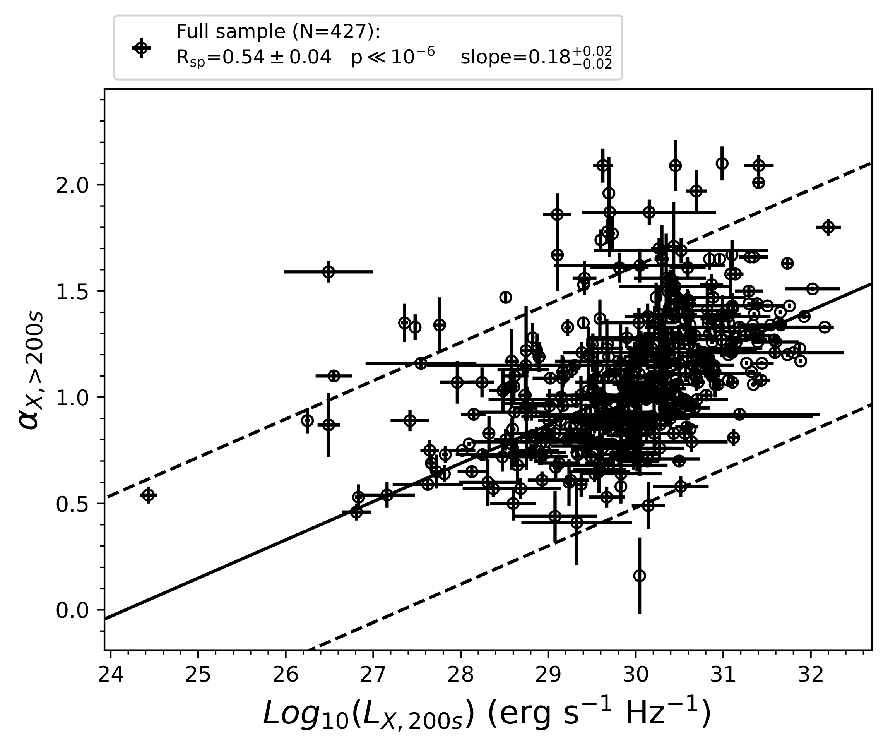<br />
图注：Plot of \(\decay\) vs \(\lum\) and the linear regression for our full sample. We observe the correlation in our full sample with $R_\mathrm{sp}=0.54 \pm 0.04$ at a confidence interval of $\geq3\sigma$. The solid line overlaid is the linear regression and the dashed lines are the $\pm2\sigma$ RMS (root-mean-square) deviation, which is also the case for the other correlation figures throughout this paper.<br />
对应解读：对应“建议重点查看的图表”第1项、关键图表逐图导读中的“图2”，以及群体层面线性回归和 Spearman 秩相关拟合段落。<br />
入选理由：这是全文核心结果图，直接展示全样本的 \(\alpha_{X,>200s}\)–\(L_{X,200s}\) 相关、线性回归线和 \(\pm2\sigma\) RMS 散布，可用来判断正相关是否由主体数据支撑、散布有多大以及回归线是否合理。<br />
来源与置信度：\(arxiv_source\)；high；\(arxiv_source\) / main.tex:figure[5]</p>
<p><strong>Fig08</strong><br />
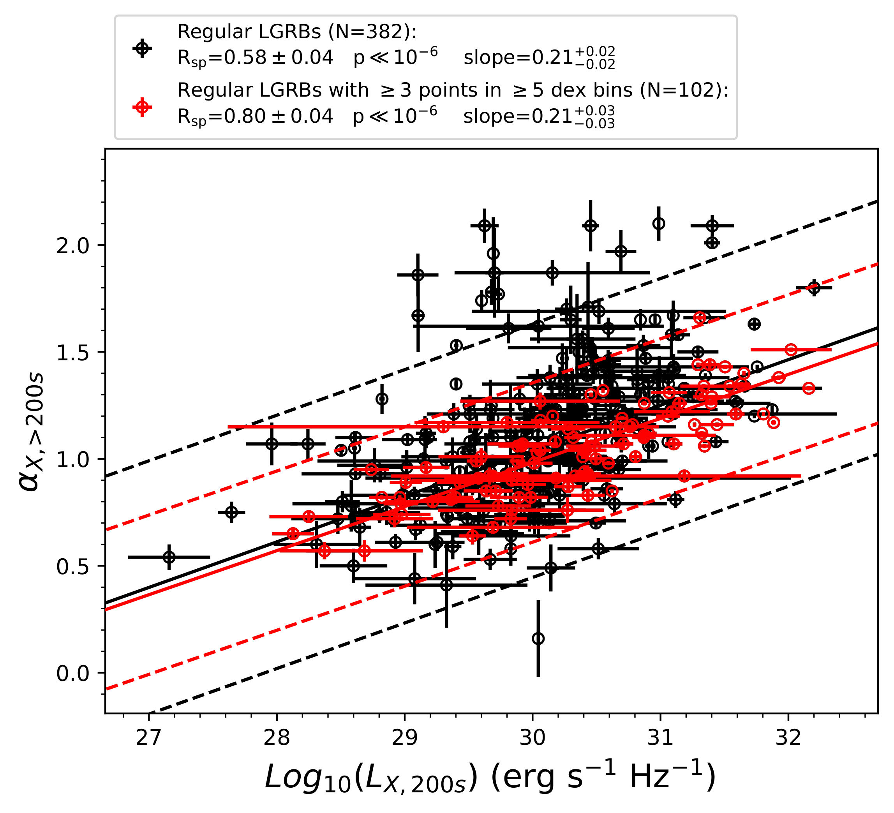<br />
图注：Plot of \(\decay\) vs \(\lum\) for the regular LGRB and well-sampled regular LGRB subsamples with the corresponding linear regression overlaid. A statistically significant correlation is observed in both subsamples, however the well-sampled regular LGRBs have significantly less scatter and a stronger Spearman's rank coefficient compared to the regular LGRBs.<br />
对应解读：对应“建议重点查看的图表”第3项、关键图表逐图导读中的“图4”，以及关于高质量长暴子样本散布降低和相关增强的模型拟合讨论。<br />
入选理由：该图直接比较 regular LGRB 与 well-sampled regular LGRB 子样本，是检验本文最重要增量结论的关键图：高质量光变曲线子样本散布明显收紧、Spearman 相关增强，而斜率仍与较大样本一致，有助于区分观测噪声和真实物理散布。<br />
来源与置信度：\(arxiv_source\)；high；\(arxiv_source\) / main.tex:figure[8]</p>
<p><strong>Fig06</strong><br />
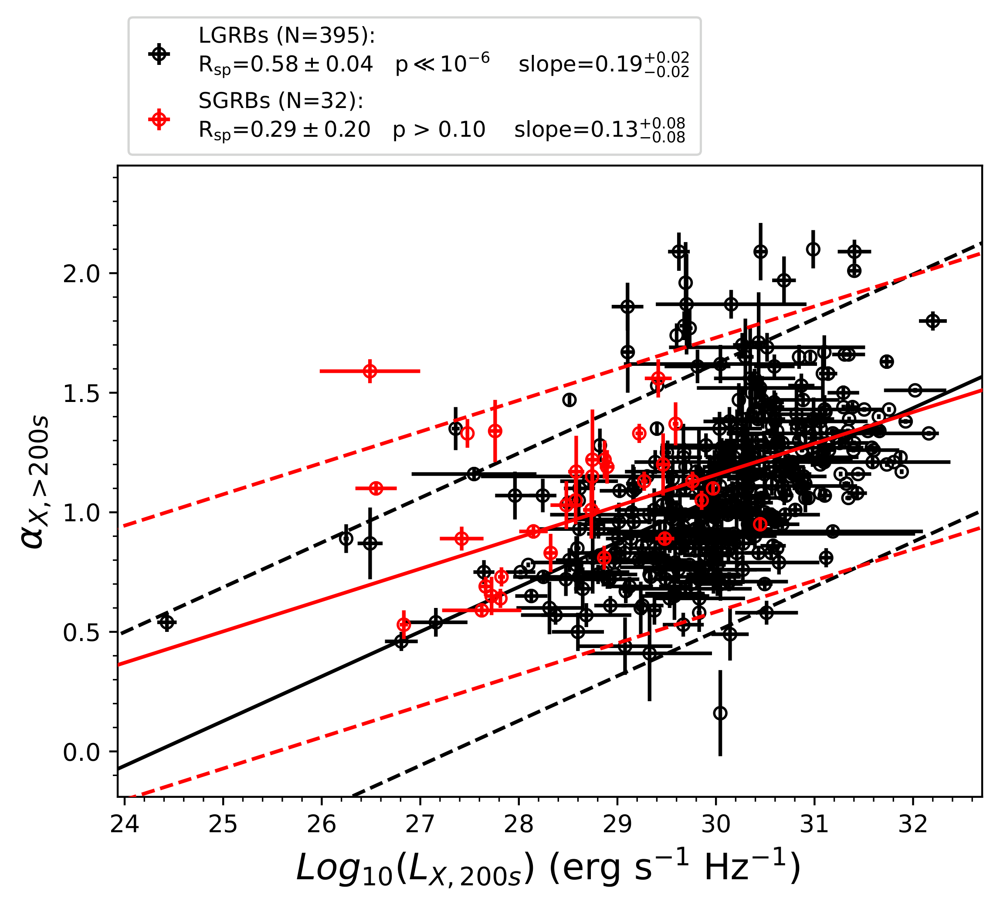<br />
图注：Plot of \(\decay\) vs \(\lum\) for LGRBs and SGRBs with the corresponding linear regression overlaid. A statistically significant correlation is observed in LGRBs but not in SGRBs.<br />
对应解读：对应“建议重点查看的图表”第2项、关键图表逐图导读中的“图3”，以及长暴显著、短暴不显著的子样本比较段落。<br />
入选理由：该图直接把 LGRB 和 SGRB 放在同一 \(\alpha_{X,>200s}\)–\(L_{X,200s}\) 平面并叠加各自回归线，是判断相关主要由长暴驱动、短暴是否样本量不足或系统偏离的最直接证据。<br />
来源与置信度：\(arxiv_source\)；high；\(arxiv_source\) / main.tex:figure[6]</p>
<p><strong>Fig03</strong><br />
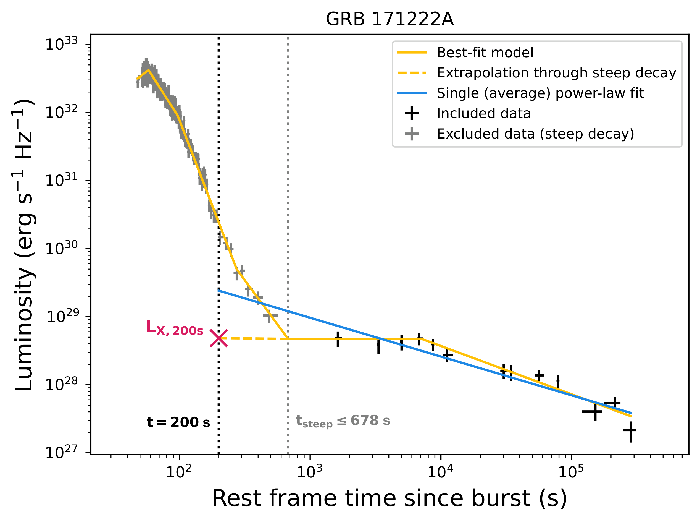<br />
图注：The rest-frame light curve of GRB 171222A. The best-fit model from the XRT catalogue, used to measure \(\lum,\) and the single power-law fit from $t_\mathrm{rest}\geq200$ s, used to measure \(\decay,\) are overlaid. The light curve of GRB 171222A is contamined by the tail end of the prompt emission at $t_\mathrm{rest}>200$ s via the steep decay segment. To correct for this contamination, we measure \(\decay\) by fitting the single power-law to the data from the end of the steep decay segment, from 678 s in this case, effectively excluding the data prior to this, and we measure \(\lum\) by extrapolating the power-law segment of the best-fit model after the end of the steep decay segment back to 200 s in the rest frame.<br />
对应解读：对应模型拟合段落中关于从单条 XRT 光变曲线提取 \(L_{X,200s}\) 和 \(\alpha_{X,>200s}\)、处理早期陡衰减污染和 200 s 外推的说明。<br />
入选理由：该图展示 GRB 171222A 中 prompt tail/steep decay 对 200 s 之后数据的污染，以及作者如何从陡衰减结束后拟合并回推到 200 s；这正是理解 \(L_{X,200s}\) 与平均衰减率测量系统误差的关键示例。<br />
来源与置信度：\(arxiv_source\)；high；\(arxiv_source\) / main.tex:figure[3]</p>
<p><strong>Fig02</strong><br />
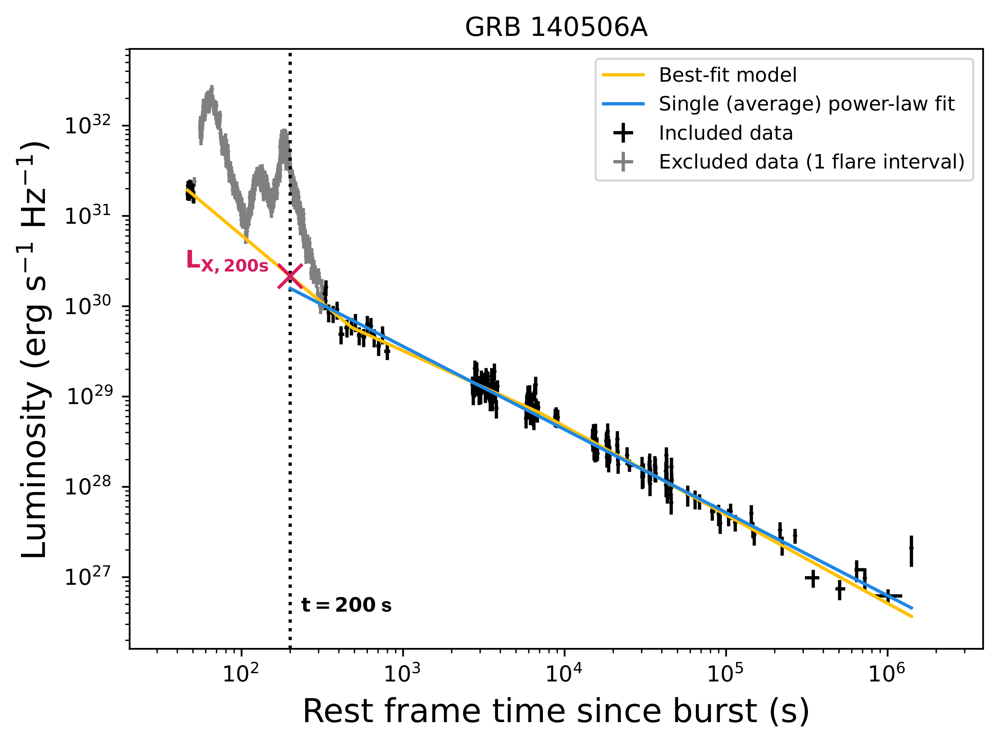<br />
图注：The rest-frame light curve of GRB 140506A. The best-fit model from the XRT catalogue, used to measure \(\lum,\) and the single power-law fit to the data from $t_\mathrm{rest}\geq200$ s, used to measure \(\decay,\) are overlaid. The light curve of GRB 140506A is contaminated by a flare interval. To correct for this contamination when measuring \(\lum\) and \(\decay,\) data within the flare interval are excluded from both fits.<br />
对应解读：对应模型拟合段落中关于光变曲线插值/拟合、耀发剔除以及 \(\alpha_{X,>200s}\) 测量稳健性的讨论。<br />
入选理由：该图用 GRB 140506A 展示 XRT catalogue 最佳拟合、200 s 之后单幂律拟合以及耀发区间剔除，能帮助读者理解单个事件的诊断量不是简单读点，而依赖对耀发等非余辉成分的处理。<br />
来源与置信度：\(arxiv_source\)；high；\(arxiv_source\) / main.tex:figure[2]</p>
<p><strong>Fig11</strong><br />
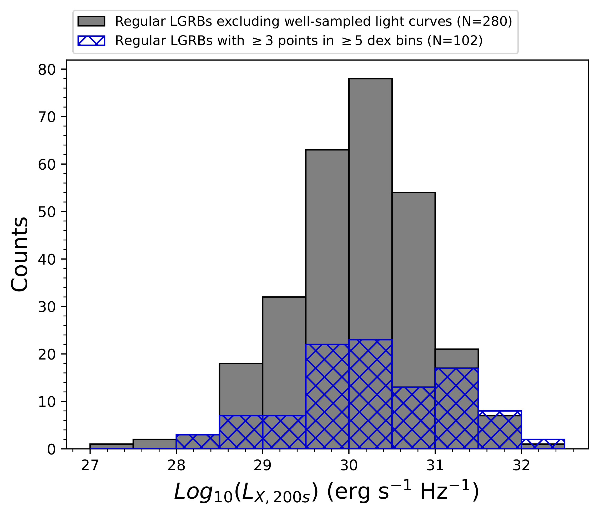<br />
图注：Distributions of the measured \(\lum\) values for our subsample of regular LGRBs divided into two groups: with and without well-sampled light curves. There is no visible offset between the distributions and we calculate a KS statistic of 0.17 with a p-value of $2.50\times10^{-2}$ verifying there is no bias at a confidence interval of $\geq3\sigma$. This suggests that the reduced scatter of the correlation in well-sampled regular LGRBs is not related to a possible bias in rest frame brightness.<br />
对应解读：对应“建议重点查看的图表”第5项和第6项中关于光变曲线采样质量、选择偏差和高质量子样本是否偏向特定亮度范围的诊断。<br />
入选理由：该图比较 well-sampled 与非 well-sampled regular LGRB 的 \(L_{X,200s}\) 分布，直接检验高质量子样本散布降低是否只是因为选中了特定亮度范围；它是 Fig08 结论的重要选择效应补充。<br />
来源与置信度：\(arxiv_source\)；high；\(arxiv_source\) / main.tex:figure[11]</p>
<h4 id="_12">强相关工作</h4>
<p>这篇工作属于 GRB 余辉经验相关和群体统计研究，与 Dainotti 类平台亮度—时间关系、光学/紫外余辉亮度—衰减关系、射电余辉群体研究以及 GeV 余辉衰减研究有直接联系。它不是同一事件论文，而是同一类别对象的大样本统计论文；应与 Swift/XRT GRB 余辉目录、GRB afterglow closure relation、structured jet population synthesis 等工作一起读。建议检索关键词包括 “GRB afterglow luminosity decay correlation”, “Swift XRT GRB afterglow sample redshift”, “Dainotti relation X-ray plateau”, “GRB structured jet viewing angle afterglow population”。</p>
<p>理论上，本文与标准外激波模型、喷流断裂模型、结构化喷流和中心引擎能量注入模型相连。若相关来自几何效应，应能在喷流开角、断裂时间、多波段峰值时间或偏振中找到支持；若来自中心引擎调控，应与平台期持续时间、X 射线耀发活动、prompt 能量释放效率等量相关。相反观点或张力主要来自选择效应解释：有红移样本、XRT 灵敏度、跟踪时长和通量阈值可能共同制造或增强表观相关。因此相关工作应同时包括物理模型论文和 selection bias 统计论文。</p>
<p><strong>同一事件 / 同类源线索</strong>：</p>
<ul>
<li><a href="https://arxiv.org/abs/2608.19332">https://arxiv.org/abs/2608.19332</a></li>
<li><a href="https://arxiv.org/pdf/2608.19332">https://arxiv.org/pdf/2608.19332</a></li>
</ul>
<p><strong>相似工作</strong>：</p>
<ul>
<li><a href="https://ui.adsabs.harvard.edu/search/q=%22GRB%20afterglow%22%20%22luminosity-decay%20correlation%22">https://ui.adsabs.harvard.edu/search/q=%22GRB%20afterglow%22%20%22luminosity-decay%20correlation%22</a></li>
<li><a href="https://ui.adsabs.harvard.edu/search/q=%22Swift%2FXRT%22%20%22GRB%20afterglow%22%20%22redshift%22">https://ui.adsabs.harvard.edu/search/q=%22Swift%2FXRT%22%20%22GRB%20afterglow%22%20%22redshift%22</a></li>
<li><a href="https://ui.adsabs.harvard.edu/search/q=%22Dainotti%20relation%22%20%22X-ray%20afterglow%22">https://ui.adsabs.harvard.edu/search/q=%22Dainotti%20relation%22%20%22X-ray%20afterglow%22</a></li>
</ul>
<p><strong>基础理论 / 方法工作</strong>：</p>
<ul>
<li><a href="https://arxiv.org/abs/astro-ph/9712005">https://arxiv.org/abs/astro-ph/9712005</a></li>
<li><a href="https://arxiv.org/abs/astro-ph/0108027">https://arxiv.org/abs/astro-ph/0108027</a></li>
<li><a href="https://arxiv.org/abs/astro-ph/0405233">https://arxiv.org/abs/astro-ph/0405233</a></li>
</ul>
<p><strong>相反观点 / 张力线索</strong>：</p>
<ul>
<li><a href="https://ui.adsabs.harvard.edu/search/q=%22GRB%20afterglow%22%20%22selection%20effects%22%20%22correlation%22">https://ui.adsabs.harvard.edu/search/q=%22GRB%20afterglow%22%20%22selection%20effects%22%20%22correlation%22</a></li>
<li><a href="https://ui.adsabs.harvard.edu/search/q=%22GRB%20correlations%22%20%22selection%20bias%22">https://ui.adsabs.harvard.edu/search/q=%22GRB%20correlations%22%20%22selection%20bias%22</a></li>
</ul>
</details>
<h3 id="2-multi-scale-memory-and-regime-shift-in-the-hyperactive-repeating-frb-20240114a">2. Multi-scale Memory and Regime Shift in the Hyperactive Repeating FRB 20240114A</h3>
<ul>
<li>来源：arXiv / astro-ph.HE</li>
<li>链接：https://arxiv.org/abs/2608.19713v1</li>
<li>作者：We-Long Zhang, Sheng-Lun Xie, Jun-Jie Wei, Di Xiao, Long-Xuan Zhang, Shuang-Xi Yi, Fa-Yin Wang, Xue-Feng Wu</li>
<li>评分：novelty 8/10，importance 8/10，relevance 8/10，final 9.00/10</li>
<li>推荐理由：基于FAST对超活跃重复FRB 20240114A的11553个爆发做长期统计，给出多尺度记忆、长达3600 s相干活动和非平稳演化；对FRB物理模型约束较强。</li>
</ul>
<p><strong>中文题目</strong>：超活跃重复快速射电暴 FRB 20240114A 的多尺度记忆与状态转变</p>
<p><strong>做了什么</strong>：这篇文章用 FAST 在 214 天内探测到的 11,553 个 FRB 20240114A 暴发，系统研究一个超活跃重复快速射电暴的等待时间、事件率相干性、能量分布和长时标非平稳性。作者特别分析最活跃的一天，即在 4.38 小时内出现 3,197 个暴发的观测，发现事件率相关可持续到约 \(3600\,\mathrm{s}\)，并且全样本在月尺度上表现出更长程的相关和状态漂移。核心结论是：该源短时标上近似随机、多指数等待时间过程，长时标上则出现类似自组织临界系统的幂律尾和非平稳记忆；同时高能截止基本不随等待时间分组变化，提示最大能量尺度可能是源的内禀性质。</p>
<p><strong>为什么重要</strong>：重复 FRB 的暴发是否彼此独立，还是带有可测的“记忆”，直接关系到磁星震动、磁层重联、吸积或外部冲击等模型的判别。FRB 20240114A 的样本量达到万级，并且来自 FAST 的高灵敏度高密度监测，使它成为检验暴发统计是否随时间基线改变的少数样本之一。文章重要之处不在于又给出一个等待时间拟合，而是把小时、天、月三个尺度的统计性质放在同一框架里，显示短时标泊松类过程和长时标非平稳漂移可以同时存在。</p>
<p><strong>理论 / 观测 / 仪器方法价值</strong>：对理论而言，这篇工作给重复 FRB 模型提供了可量化约束：模型不仅要解释能量函数，还要解释等待时间分布从多指数到幂律尾的基线依赖、约 \(1\,\mathrm{hr}\) 的记忆转折、以及能量和时间序列中不同的非平稳尺度。对观测而言，它强调只有长时间、高 cadence、低阈值的监测才能看到长程相关；只看一次活跃日可能会误判为多成分泊松过程。对方法而言，文章把事件率相干性、等待时间分布、重标极差分析和等待时间分组的能量函数结合起来，可作为后续重复 FRB 统计分析的模板。</p>
<p><strong>为什么应该关注</strong>：如果你关心 FRB 中心引擎，这篇文章值得看，因为它把“重复源是不是随机打嗝”这个问题推进到可检验的多尺度统计层面。若你做瞬变源巡天或时间序列分析，它也提醒你：观测基线本身会改变你看到的统计规律，短时标拟合得很好不代表源在长时标上平稳。若你做磁星或等离子体触发模型，约 \(3600\,\mathrm{s}\) 的相干上限、\(H\) 指数转折和稳定高能截止都是需要解释的边界条件。</p>
<details class="paper-detail">
<summary>展开详细解读：文章讲解、背景、理论、重点章节、图表与相关工作</summary>
<h4 id="_13">文章详细讲解</h4>
<p>科学问题：重复 FRB 的暴发序列究竟是近似独立的随机点过程，还是像地震、太阳耀斑和磁星爆发那样带有触发、积累和释放的记忆？FRB 20240114A 是一个超活跃重复源，FAST 在 214 天内积累了 11,553 个暴发，其中最活跃的一天在 4.38 小时内探测到 3,197 个暴发。这样的样本量使作者可以把传统的等待时间统计扩展到事件率相干性、重标极差分析和能量分布的联合检验，而不只是在几十或几百个暴发上拟合一个经验函数。</p>
<p>作者怎么做：文章首先把最活跃日作为高时间分辨率、近连续暴发的极端样本，分析其事件率随时间的相关结构，并寻找相关性可以延伸到多长时标。随后，作者比较该日样本和 214 天全样本的等待时间分布，检验多指数分量与长等待时间幂律尾的差异。接着用重标极差分析估计等待时间序列和能量序列的 \(H\) 指数，并允许 \(R/S\) 标度在某个滞后尺度处发生断裂。最后，文章按等待时间分组研究能量分布斜率和高能截止，判断能量释放上限是否随暴发间隔改变。</p>
<p>关键结果：最活跃日的事件率相关可延伸到约 \(3600\,\mathrm{s}\)，这是作者声称在重复 FRB 中报告的最长相干活动时标之一。该日等待时间分布可由三个指数成分较好描述，说明在短基线、高活动期内可近似看成多个泊松率状态的叠加；但 214 天全样本出现阈值幂律尾，显示长等待时间不再服从单纯指数衰减。等待时间的 \(R/S\) 分析给出断裂幂律：短滞后 \(H_1=0.63\pm0.02\)，长滞后 \(H_2=1.04\pm0.02\)，断裂对应约 \(1\,\mathrm{hr}\)，与事件率相干上限一致。能量序列也有类似断裂，\(H_1=0.60\pm0.01\)，\(H_2=1.10\pm0.05\)，但断裂滞后不同，说明时间触发和能量调制不一定由同一单一变量控制。</p>
<p>局限和下一步：这类分析的核心风险是观测窗口、灵敏度阈值、散射或重叠暴发识别会把真实点过程扭曲成看似有记忆的序列。尤其是 214 天全样本的长等待时间包含日间不可见窗口和观测间隔，必须非常谨慎地区分源内禀休眠和望远镜采样造成的间隔。下一步应在统一的注入恢复模拟中同时传播探测效率、暴发重叠、能量阈值和观测窗口函数，并把 FRB 20240114A 与 FRB 121102、FRB 20201124A 等活跃重复源放在同一统计框架中比较。如果多个重复源都出现相近的 \(H\) 指数断裂或稳定高能截止，才更有力地支持某种普适的磁层或临界系统机制。</p>
<h4 id="_14">关键结果是怎么做出来的</h4>
<p>样本选择上，本文的优势是 FAST 对 FRB 20240114A 的密集监测，总样本为 214 天内 11,553 个暴发。作者又把最活跃日单独抽出：MJD 60381 上 4.38 小时内有 3,197 个暴发。这个子样本的意义是观测窗口短而暴发密度极高，适合研究小时以内的相关性；全样本则提供天到月尺度的等待时间尾部，但也更容易受到观测窗口函数影响。</p>
<p>最重要的证据链第一步是事件率相干性分析。作者不是只画等待时间直方图，而是把暴发序列转化为随时间变化的事件率或计数序列，然后考察不同时间滞后的相关性。结果显示相关活动可持续到约 \(3600\,\mathrm{s}\)。如果这个尺度显著超过随机重排或同率泊松模拟的期望，就说明在该活跃日内，暴发率不是无记忆白噪声，而有约小时量级的调制。</p>
<p>第二步是等待时间分布的基线比较。MJD 60381 的等待时间可以用三个指数成分描述，物理上可解释为若干不同活动率状态的混合，或者同一源在短时间内在几个触发通道之间切换。全 214 天样本则出现阈值幂律尾，即超过某个等待时间后概率衰减慢于指数。这一点是文章关于自组织临界性和长程相关的关键依据，但也最需要检查作者是否对观测间隔、非连续跟踪和低能漏检做了稳健处理。</p>
<p>第三步是 \(R/S\) 分析。作者对等待时间序列得到断裂幂律标度，短滞后 \(H_1=0.63\pm0.02\)，长滞后 \(H_2=1.04\pm0.02\)。\(H>0.5\) 通常表示持续性相关，\(H\approx1\) 则更接近非平稳漂移而不是普通平稳长记忆过程。断裂尺度约 \(1\,\mathrm{hr}\)，与事件率相干上限相互支持，是文章最紧密的内部一致性证据。</p>
<p>第四步是能量统计。作者把暴发按等待时间分组，比较能量分布斜率和高能截止。结果称各组高能截止基本不变，而斜率随等待时间改变且与全样本、日样本趋势一致。这说明等待时间可能影响普通能量释放的相对权重，但最大可释放能量尺度更像中心引擎或局部磁场条件给出的内禀上限。需要重点看能量完备性阈值、fluence 到能量的换算、带宽和谱结构对高能端的影响。</p>
<p>统计显著性方面，读者应关注作者是否用似然比、信息准则或模拟分布比较三指数、单指数、对数正态、幂律尾等模型，而不仅仅依靠视觉拟合。对于 \(R/S\) 断裂，关键是断裂模型相对于单幂律模型的改进是否超过因多一个断裂参数带来的惩罚；对于事件率相干，关键是与保持观测窗口和平均率的 surrogate 序列相比，\(3600\,\mathrm{s}\) 尺度是否仍显著。系统误差方面，最重要的是观测窗口、死时间、暴发重叠、搜索阈值、能量估计误差和日间活动率变化。</p>
<details class="paper-subdetail">
<summary>展开背景、理论、公式、模型、章节和图表导读</summary>
<h4 id="_15">背景知识</h4>
<p>快速射电暴是毫秒量级的强射电瞬变，重复 FRB 则为研究中心引擎提供了时间序列而不仅是单次事件。对重复源来说，等待时间、能量分布、偏振、频率漂移和活动窗口共同编码了触发机制。FRB 20240114A 的特别之处是暴发极其频繁，使统计分析从“小样本现象学”进入接近地震目录或太阳耀斑目录的高事件数 regime。</p>
<p>历史上，FRB 121102 的重复发现使 FRB 研究从灾变一次性模型转向至少部分源可长期活动的模型。此后 FRB 180916、FRB 20201124A 等源显示出活动周期、强偏振变化、法拉第旋转变化或高活跃期，说明重复 FRB 不是简单的平稳泊松过程。然而不同源的统计性质差异很大，部分原因是真实物理差异，部分原因是观测 cadence、灵敏度和频段选择不同。</p>
<p>等待时间分布是判别触发过程的基本工具。若暴发为恒定率泊松过程，等待时间服从指数分布；若活动率随时间变化，多个指数或对数正态都可能出现；若系统处于缓慢驱动、快速释放的临界状态，能量和等待时间可能出现幂律或长程相关。问题在于，这些经验分布并非一一对应物理机制，同一个观测直方图可以由源内禀记忆、活动率漂移、观测窗口或阈值效应共同造成。</p>
<p>为什么现在值得重新看？因为高灵敏度望远镜和长时间监测让万级暴发样本成为可能。小样本时代常把重复 FRB 的等待时间拟合成单一函数，但无法区分小时内的簇集、天尺度活动窗口和月尺度状态转变。FRB 20240114A 的高暴发率让作者能在同一源内比较“最活跃一天”和“214 天全样本”，这比跨源比较少了很多源间差异。</p>
<p>该领域常见误区包括：第一，把 \(H>0.5\) 直接等同于某个具体物理记忆机制，而忽略非平稳趋势也会抬高 \(H\) 指数；第二，把等待时间幂律尾简单归因于自组织临界性，而没有剔除观测窗口造成的长间隔；第三，把能量函数高能截止当作绝对物理上限，而没有检查完备性、频带、距离和谱形校正；第四，用单日高活跃样本代表源的长期行为。本文的价值正是在这些误区之间建立一个多尺度解释框架。</p>
<h4 id="_16">基础理论 / 方法脉络</h4>
<p>从最基础的物理图像看，重复 FRB 可以被视为一个受缓慢驱动的能量库，例如磁星磁层、电流片、星震应力场或外部等离子体结构。能量逐渐积累，达到某些局部触发条件后快速释放为射电暴发。若每次释放互不影响且触发率恒定，暴发到达时刻应接近泊松点过程；若释放改变局部环境或系统状态，后续暴发概率和能量就会依赖过去历史。</p>
<p>等待时间 \(\Delta t\) 是相邻暴发到达时刻之差。恒定率泊松过程的 \(\Delta t\) 分布为指数，这是最简单的无记忆基准。多个指数分量可以表示多个活动率状态混合，也可以表示观测期间源在不同活跃程度之间切换。需要注意，多指数拟合本身不必然说明有多个物理发射区；它也可能是连续变化活动率被离散近似的结果。</p>
<p>长程记忆常用 \(R/S\) 分析或相关函数刻画。\(R/S\) 的思想是看累积偏差范围相对于标准差如何随序列长度增长；若 \(R/S\propto n^H\)，\(H=0.5\) 类似无相关随机游走，\(H>0.5\) 表示持续性，\(H<0.5\) 表示反持续性。本文的断裂幂律意味着短滞后和长滞后由不同统计 regime 控制，特别是 \(H\approx1\) 更接近非平稳漂移，不能简单当作平稳长记忆。</p>
<p>能量分布则连接到释放机制。若事件能量服从幂律，常被拿来类比地震 Gutenberg-Richter 律或太阳耀斑能量函数；若存在指数或截断幂律高能截止，说明系统最大释放尺度有限。本文按等待时间分组比较能量分布，实质是在问：长时间积累是否产生更高能暴发，或者最大能量是否由局部磁场、辐射效率和发射区域尺度固定。</p>
<p>观测方法上的关键系统误差包括阈值选择、重叠暴发分解、散射展宽、频率依赖漂移、望远镜指向和增益变化。FAST 的高灵敏度降低了漏检低能暴发的风险，但在极高事件率时，暴发之间可能重叠，搜索算法的死时间和去重规则会改变短等待时间分布。长等待时间端则强烈依赖观测窗口，因此全样本的幂律尾必须结合实际观测 cadence 解读。</p>
<h4 id="_17">公式与推导</h4>
<p>第一步，给出无记忆点过程基准。若暴发以恒定率 \(\lambda\) 到达，则在时间 \(t\) 内出现 \(k\) 个事件的概率为</p>
<div class="math-display">\[P(k|\lambda,t)=\frac{(\lambda t)^k e^{-\lambda t}}{k!}.\]</div>
<p>这里 \(\lambda\) 是平均暴发率，\(t\) 是观测时长，\(k\) 是事件数。这个式子定义了“没有记忆”的零假设：过去是否发生暴发不改变未来瞬时率。</p>
<p>第二步，由泊松过程可得等待时间分布。相邻事件间隔 \(\Delta t\) 的概率密度为</p>
<div class="math-display">\[p(\Delta t|\lambda)=\lambda e^{-\lambda \Delta t}.\]</div>
<p>如果 MJD 60381 的等待时间不能由单一 \(\lambda\) 描述，而需要多个指数分量，说明平均率本身在观测中变化，或存在多个状态。</p>
<p>第三步，多状态率混合可写成</p>
<div class="math-display">\[p(\Delta t)=\sum_{i=1}^{m} w_i \lambda_i e^{-\lambda_i \Delta t},\qquad \sum_{i=1}^{m}w_i=1.\]</div>
<p>本文最活跃日对应 \(m=3\) 的经验描述；\(w_i\) 是第 \(i\) 个活动状态权重，\(\lambda_i\) 是其特征率。它不是唯一物理解，但可作为短时标随机状态混合的压缩表征。</p>
<p>第四步，若长等待时间出现阈值幂律尾，可用截断或阈值形式表示为</p>
<div class="math-display">\[p(\Delta t|\Delta t>\Delta t_0)=C\left(\frac{\Delta t}{\Delta t_0}\right)^{-\gamma}.\]</div>
<p>其中 \(\Delta t_0\) 是进入尾部的阈值，\(\gamma\) 是尾部斜率，\(C\) 是归一化常数。慢于指数的尾部通常提示长程调制、休眠状态或采样窗口影响，需要与观测计划联合建模。</p>
<p>第五步，事件率相干性可由自相关函数刻画。把时间分箱后的计数率写作 \(r(t)\)，其归一化自相关可写为</p>
<div class="math-display">\[C(\tau)=\frac{\langle [r(t)-\bar r][r(t+\tau)-\bar r]\rangle}{\sigma_r^2}.\]</div>
<p>这里 \(\tau\) 是滞后，\(\bar r\) 是平均率，\(\sigma_r\) 是率的标准差。若 \(C(\tau)\) 在 \(\tau\sim3600\,\mathrm{s}\) 仍显著高于随机 surrogate，就支持小时尺度相干活动。</p>
<p>第六步，\(R/S\) 分析从序列 \(x_j\) 的累积偏差出发。对长度 \(n\) 的片段，定义</p>
<div class="math-display">\[Y_k=\sum_{j=1}^{k}(x_j-\bar x_n),\qquad R(n)=\max_{1\le k\le n}Y_k-\min_{1\le k\le n}Y_k.\]</div>
<p>其中 \(x_j\) 可为等待时间或能量，\(\bar x_n\) 是片段均值，\(R(n)\) 是累积偏差范围。</p>
<p>第七步，再用片段标准差 \(S(n)\) 归一化，得到标度律</p>
<div class="math-display">\[\frac{R(n)}{S(n)}=A n^H.\]</div>
<p>\(H\) 是 Hurst 指数，\(A\) 是归一化系数。\(H=0.5\) 是无相关基准，\(H>0.5\) 表示持续性或趋势，\(H\approx1\) 常指向非平稳漂移。</p>
<p>第八步，本文的断裂标度可写为</p>
<div class="math-display">\[\frac{R(n)}{S(n)}=\begin{cases}A_1 n^{H_1}, & n<n_b,\\ A_2 n^{H_2}, & n\ge n_b,\end{cases}\]</div>
<p>其中 \(n_b\) 是断裂滞后，对等待时间序列约对应 \(1\,\mathrm{hr}\)。这个式子把短时标弱记忆和长时标非平稳状态转变分开。</p>
<p>第九步，能量分布可用截断幂律近似：</p>
<div class="math-display">\[\frac{dN}{dE}=K E^{-\alpha}\exp\left(-\frac{E}{E_c}\right).\]</div>
<p>这里 \(E\) 是暴发能量，\(\alpha\) 是低到中能段斜率，\(E_c\) 是高能截止，\(K\) 是归一化。本文称不同等待时间组的 \(E_c\) 近似不变，这提示最大能量尺度可能由源内禀条件决定。</p>
<p>第十步，模型比较通常通过似然实现。对等待时间样本 \(\{\Delta t_j\}\)，非分箱似然可写为</p>
<div class="math-display">\[\ln \mathcal{L}=\sum_{j=1}^{N}\ln p(\Delta t_j|\boldsymbol{\theta})+\ln P_{\rm win}.\]</div>
<p>\(\boldsymbol{\theta}\) 是模型参数，\(P_{\rm win}\) 表示观测窗口和选择函数修正。若忽略 \(P_{\rm win}\)，长等待时间尾部和非平稳性的显著性可能被高估。</p>
<h4 id="_18">模型拟合 / 应用方法</h4>
<p>本文涉及几类拟合。第一类是等待时间分布拟合，参数包括指数分量的权重 \(w_i\)、率 \(\lambda_i\)，以及全样本幂律尾的阈值 \(\Delta t_0\) 和斜率 \(\gamma\)。理想情况下应使用非分箱最大似然，而不是只对直方图做最小二乘，因为等待时间分布跨越多个数量级，分箱会显著影响尾部斜率。</p>
<p>第二类是事件率相干性或相关函数的显著性评估。拟合量不是单个暴发能量，而是分箱计数率 \(r(t)\) 或活动率序列。残差诊断应检查不同分箱宽度下 \(C(\tau)\) 是否稳定，以及随机重排、保持观测窗口的泊松模拟、保持局部率变化的 surrogate 序列是否仍不能产生 \(3600\,\mathrm{s}\) 的相干信号。</p>
<p>第三类是 \(R/S\) 断裂幂律拟合。参数包括短滞后 \(H_1\)、长滞后 \(H_2\)、断裂位置 \(n_b\) 和归一化。这里最大的退化是 \(H\) 指数与非平稳趋势之间的退化：一个缓慢变化的活动率可产生 \(H>0.5\)，即使微观触发过程本身无记忆。因此断裂模型应与去趋势后的序列、分日样本、随机 surrogate 以及不同观测窗口处理方式比较。</p>
<p>第四类是能量函数拟合。参数包括能量分布斜率 \(\alpha\)、高能截止 \(E_c\)、归一化 \(K\)，以及不同等待时间分组的相对变化。这里的系统误差包括 fluence 标定、距离假设、带宽修正、谱结构导致的漏能、低能完备性阈值和高事件率下的重叠识别。若低能不完备而仍纳入拟合，\(\alpha\) 会偏平；若高能端样本少，\(E_c\) 的“不变”可能只是置信区间过宽。</p>
<p>实际应用中，读者应把这些拟合看成对物理模型的“统计边界条件”。一个磁星磁层雪崩模型需要同时产生短时标弱持续性、小时尺度断裂、月尺度非平稳漂移和稳定最大能量；一个纯泊松触发模型则必须引入外部调制率才能解释长程尾部。最有诊断力的不是某一个拟合参数，而是等待时间、事件率和能量三者在断裂尺度上是否互相一致。</p>
<h4 id="_19">重点章节 / 结果段落怎么读</h4>
<p>数据与样本部分应首先确认 FAST 观测的时间覆盖、总曝光、探测阈值、去重规则和能量估计方法。重点是 11,553 个暴发如何定义，MJD 60381 的 3,197 个暴发是否来自连续 4.38 小时，以及全样本中的非观测间隔如何处理。</p>
<p>事件率相干性部分是本文第一条主线。读者应看作者如何构造事件率序列、采用什么时间分箱、如何定义相干上限，以及如何用随机或模拟样本给出显著性。约 \(3600\,\mathrm{s}\) 的尺度是否稳健，是全文多尺度记忆框架的支点之一。</p>
<p>等待时间分布部分要比较最活跃日和 214 天全样本。重点不是三指数或幂律尾的形式本身，而是为什么短基线与长基线给出不同统计 regime。建议检查模型比较表、拟合残差、尾部阈值选择和观测窗口修正。</p>
<p>\(R/S\) 分析部分应作为独立证据阅读。看等待时间和能量序列是否都需要断裂幂律，断裂位置是否与 \(3600\,\mathrm{s}\) 相干尺度一致，以及 \(H_2\approx1\) 被解释为非平稳漂移时作者做了哪些去趋势或稳健性检验。</p>
<p>能量分布与等待时间分组部分是连接中心引擎物理的关键。读者应关注不同等待时间组的能量斜率如何变化，高能截止 \(E_c\) 的误差条是否真正重叠，以及完备性阈值是否对所有分组一致。</p>
<p>讨论和结论部分应重点看作者如何把结果放入自组织临界、磁星活动和长期监测需求中。要警惕过度解释：统计记忆本身并不唯一指向某个模型，但它确实排除了最简单的恒定率无记忆描述。</p>
<h4 id="_20">建议重点查看的图表</h4>
<ol>
<li>
<p>观测时间线和日事件数图：看 214 天内 FAST 的观测窗口、每天暴发数和 MJD 60381 的极端活跃性，判断长期非平稳是否可能由采样造成。</p>
</li>
<li>
<p>MJD 60381 的事件率曲线或动态活动图：看 4.38 小时内暴发是否集中成多个簇，事件率是否有小时尺度调制，而非均匀随机散布。</p>
</li>
<li>
<p>事件率自相关或相干性诊断图：重点看 \(C(\tau)\) 在 \(\tau\sim3600\,\mathrm{s}\) 处是否仍高于随机置信带，以及不同分箱宽度下结果是否一致。</p>
</li>
<li>
<p>等待时间分布图：比较最活跃日三指数拟合和全样本阈值幂律尾。应看尾部残差、阈值 \(\Delta t_0\)、分箱依赖和观测窗口修正。</p>
</li>
<li>
<p>\(R/S\) 标度图：看 \(\log(R/S)\) 对 \(\log n\) 是否真有明显断裂，短滞后和长滞后拟合线的误差带是否分离。</p>
</li>
<li>
<p>能量 \(R/S\) 或能量序列诊断：检查能量的断裂滞后是否不同于等待时间，以及这是否说明能量调制和触发时间调制分属不同过程。</p>
</li>
<li>
<p>等待时间分组的能量分布图：看不同组的 \(\alpha\) 和 \(E_c\) 置信区间，特别是高能截止是否真的一致，而不是样本不足导致的不敏感。</p>
</li>
<li>
<p>模型比较或稳健性表：看三指数、单指数、对数正态、幂律尾、单幂律 \(R/S\) 和断裂 \(R/S\) 的信息准则、似然比或模拟显著性。</p>
</li>
</ol>
<h4 id="_21">关键图表逐图导读</h4>
<p>图 1：通常应是观测日志、日暴发数或累计事件数。横轴应为观测日期或 MJD，纵轴为暴发数、曝光时间或累计数。读图时要区分“源不活跃”和“没有观测”；若暴发数峰值与曝光时间峰值重合，就要检查是否已按曝光归一化。MJD 60381 的 3,197 个暴发应在图中非常突出，它是后续短时标分析的样本基础。</p>
<p>图 2：最活跃日的事件率时间序列。横轴多半是从观测开始算起的时间，纵轴是分箱暴发率或计数。若图中出现多个持续几十分钟到一小时的高率区间，就支持活动状态簇集。读图陷阱是分箱宽度会改变峰的形状；应看作者是否展示了不同分箱或未分箱事件到达序列。</p>
<p>图 3：事件率自相关或相干性曲线。横轴为滞后 \(\tau\)，纵轴为归一化相关 \(C(\tau)\) 或类似统计量，模型线或阴影应表示随机序列置信带。主要结论是相关性延伸到约 \(3600\,\mathrm{s}\)。读图时要看 \(3600\,\mathrm{s}\) 是否是相关函数穿过零、穿过置信带，还是某个经验定义的相干长度；不同定义会影响物理解释。</p>
<p>图 4：等待时间分布。横轴是 \(\Delta t\)，通常为对数坐标；纵轴为概率密度、累计分布或互补累计分布。最活跃日应叠加三个指数模型，全样本应显示长等待时间尾部和阈值幂律拟合。读图陷阱是非连续观测会在长 \(\Delta t\) 端制造人造尾部，因此应优先看作者是否用观测窗口模拟给出背景期望。</p>
<p>图 5：等待时间的 \(R/S\) 标度。横轴为片段长度或滞后 \(n\) 的对数，纵轴为 \(R/S\) 的对数。两段直线的斜率对应 \(H_1=0.63\pm0.02\) 和 \(H_2=1.04\pm0.02\)，断裂处约对应 \(1\,\mathrm{hr}\)。读图时要检查断裂是否由少数长滞后点驱动，因为长滞后有效样本数更少。</p>
<p>图 6：能量序列的 \(R/S\) 标度。坐标类似图 5，但输入变量从等待时间换成能量。若斜率为 \(H_1=0.60\pm0.01\) 和 \(H_2=1.10\pm0.05\)，说明能量也有非平稳趋势。关键陷阱是能量估计误差和阈值随时间变化可能模拟出趋势，因此应看是否有通量标定和完备性检验。</p>
<p>图 7：等待时间分组能量分布。横轴为能量 \(E\)，纵轴为 \(dN/dE\)、累计数或概率密度，不同颜色代表不同 \(\Delta t\) 分组。主要应看各组高能截止 \(E_c\) 是否一致，斜率 \(\alpha\) 是否系统变化。读图时不要只看最佳拟合线，必须看高能端误差条和置信区间重叠程度。</p>
</details>
<h4 id="_22">论文原图 / 可嵌入图片</h4>
<p><strong>Fig03</strong><br />
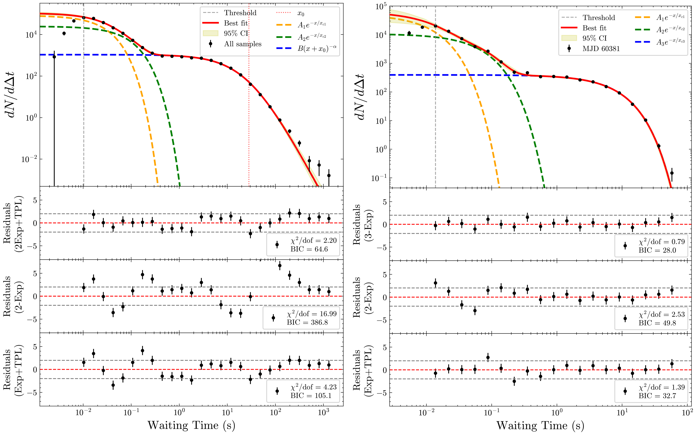<br />
图注：Left (all-sample): best-fit 2Exp+TPL. Right (MJD~60381): best-fit 3Exp. The lower subpanels show residuals of competing models, with $\chi^2_\nu$ and BIC values indicated.<br />
对应解读：对应“建议重点查看的图表”第4项、关键图表逐图导读中的图4，以及模型拟合段落第一类等待时间分布拟合。<br />
入选理由：这张图直接展示全样本2Exp+TPL与MJD 60381三指数等待时间模型，并包含竞争模型残差、约化卡方和BIC，是判断“短基线三指数、长基线阈值幂律尾”这一核心结论最关键的证据，比单纯分布曲线更能支撑对模型优劣和尾部拟合可靠性的解读。<br />
来源与置信度：\(arxiv_source\)；high；\(arxiv_source\) / sample701.tex:figure[3]</p>
<p><strong>Fig04</strong><br />
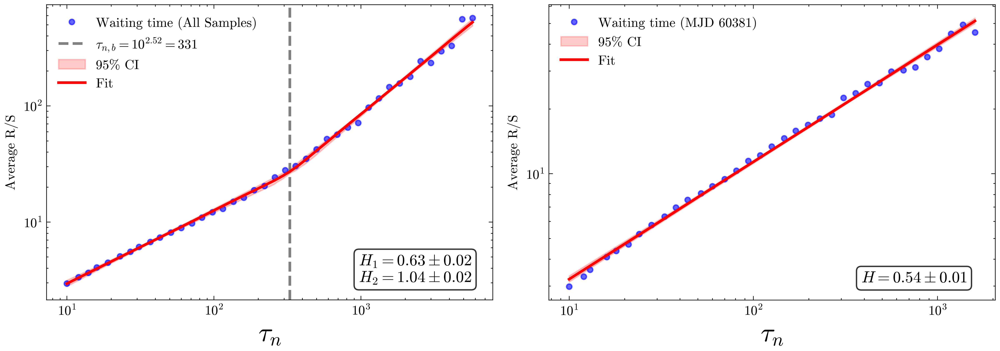<br />
图注：Left: all-sample waiting-time R/S with broken power law ($H_1=0.63$, $H_2=1.04$, break at $\tau_{n,b}\simeq331$). Right: MJD~60381 with single power law ($H=0.54$).<br />
对应解读：对应“建议重点查看的图表”第5项、关键图表逐图导读中的图5，以及模型拟合段落第三类R/S断裂幂律拟合。<br />
入选理由：图中给出等待时间R/S标度的断裂幂律、短长滞后Hurst指数和断裂位置，并与MJD 60381单幂律结果对照，正好支撑日报强调的约1小时断裂、短时标弱记忆和长时标非平稳漂移，是全文多尺度记忆框架的中心图。<br />
来源与置信度：\(arxiv_source\)；high；\(arxiv_source\) / sample701.tex:figure[4]</p>
<p><strong>Fig05</strong><br />
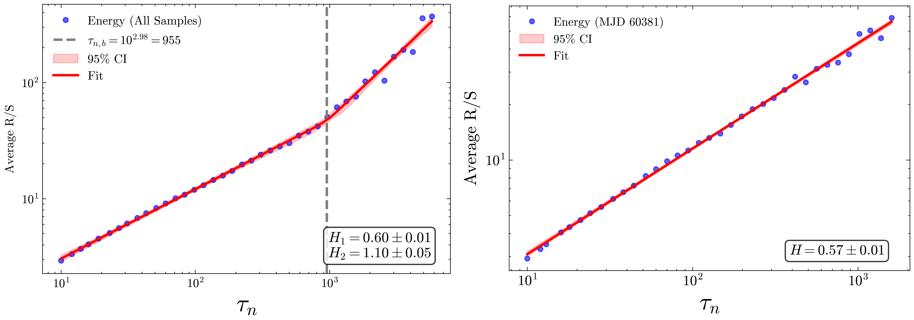<br />
图注：Left: all-sample energy R/S with broken power law ($H_1=0.60$, $H_2=1.10$, break at $\tau_{n,b}\simeq955$). Right: MJD~60381 energy R/S with single power law ($H=0.57$).<br />
对应解读：对应“建议重点查看的图表”第6项、关键图表逐图导读中的图6，以及模型拟合段落第三类关于能量序列R/S的讨论。<br />
入选理由：这张图展示能量序列R/S的断裂幂律及H1、H2、断裂位置，并与最活跃日单幂律比较，可检验能量非平稳是否与等待时间类似但断裂滞后不同，对区分能量调制和触发时间调制是否同源具有较高诊断价值。<br />
来源与置信度：\(arxiv_source\)；high；\(arxiv_source\) / sample701.tex:figure[5]</p>
<p><strong>Fig02</strong><br />
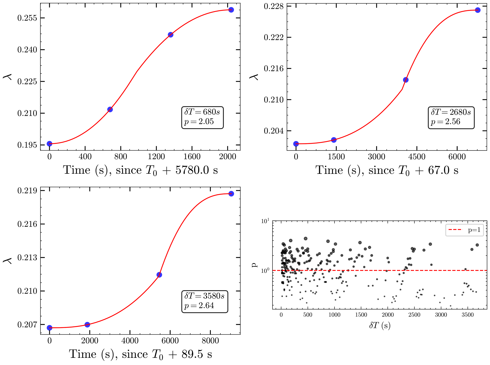<br />
图注：Examples of coherent burst-rate structures detected on MJD~60381 at $\delta T = 680$~s, 2680~s, and 3580~s (top). Blue points show the observed rate; red curves are best-fit polynomials with the corresponding $p$ values indicated. Bottom: distribution of fitted $p$ values over all detected structures.<br />
对应解读：对应“建议重点查看的图表”第2项和第3项，以及关键图表逐图导读中的图2、图3关于MJD 60381事件率相干结构的讨论。<br />
入选理由：候选图中没有传统自相关函数C(τ)图，但Fig02直接给出MJD 60381在680 s、2680 s和3580 s尺度上的相干暴发率结构、最佳拟合多项式和p值分布，是支撑约3600 s相干活动这一结论的最接近和最重要证据。<br />
来源与置信度：\(arxiv_source\)；high；\(arxiv_source\) / sample701.tex:figure[2]</p>
<p><strong>Fig06</strong><br />
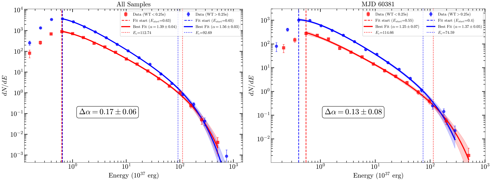<br />
图注：Differential energy distributions for short-wait ($<0.25$~s, red) and long-wait ($\ge0.25$~s, blue) bursts. Left: full sample. Right: MJD~60381. Solid curves show the best-fit Lb-CPL models, with the power-law indices indicated.<br />
对应解读：对应“建议重点查看的图表”第7项、关键图表逐图导读中的图7，以及模型拟合段落第四类能量函数拟合。<br />
入选理由：该图按短等待和长等待分组展示全样本与MJD 60381的微分能量分布，并叠加Lb-CPL最佳拟合曲线和幂律指数，可用于检查等待时间分组下能量谱斜率变化及高能截止是否一致，是评估能量释放上限是否为内禀性质的关键图。<br />
来源与置信度：\(arxiv_source\)；high；\(arxiv_source\) / sample701.tex:figure[6]</p>
<p><strong>Fig01</strong><br />
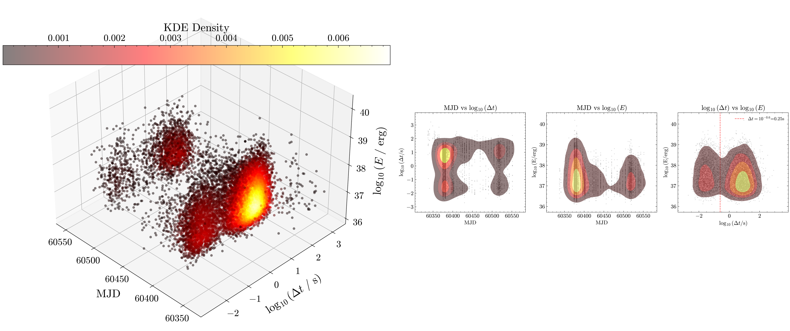<br />
图注：Three-dimensional KDE of burst energy vs. waiting time vs. MJD (top) and 2D marginal projections (bottom). Burst activity is predominantly concentrated within a few active epochs, with MJD~60381 being the most prominent.<br />
对应解读：对应“建议重点查看的图表”第1项，以及关键图表逐图导读中的图1关于长期活动集中和MJD 60381极端活跃性的讨论。<br />
入选理由：虽然它不是传统观测时间线或日暴发数图，但三维KDE和边缘投影同时展示能量、等待时间与MJD分布，能直观看到活动集中在少数活跃期且MJD 60381最突出，可作为后续最活跃日分析和长期非平稳讨论的背景图。<br />
来源与置信度：\(arxiv_source\)；high；\(arxiv_source\) / sample701.tex:figure[1]</p>
<h4 id="_23">强相关工作</h4>
<p>这篇工作应放在重复 FRB 时间统计的大背景下读。FRB 121102 是第一个确认重复的 FRB，也是等待时间、能量函数和活动簇集研究的原型；FRB 180916 提供了周期性活动窗口的著名案例；FRB 20201124A 则展示了极活跃期和复杂偏振、环境变化。FRB 20240114A 的特色是 FAST 获得的万级暴发样本，使其更接近统计物理中的大事件目录。检索关键词可用 “FRB 20240114A FAST bursts waiting time Hurst”，以及 “repeating FRB waiting time distribution energy function self-organized criticality”。</p>
<p>理论上，本文与磁星模型、自组织临界模型、太阳耀斑和软伽马重复暴的能量统计有直接联系。支持方向会强调幂律能量分布、长程相关和状态漂移；谨慎或相反观点则会强调观测窗口、活动率非平稳和选择效应足以产生类似幂律尾。建议检索 “magnetar burst avalanche model”， “self organized criticality FRB”， “FRB Poisson clustering waiting times”，以及 “Hurst exponent nonstationarity point process”。如果要比较张力，应特别找那些认为重复 FRB 等待时间可由非平稳泊松过程或 Weibull 过程解释的论文。</p>
<p><strong>同一事件 / 同类源线索</strong>：</p>
<ul>
<li><a href="https://arxiv.org/abs/2608.19713">https://arxiv.org/abs/2608.19713</a></li>
</ul>
<p><strong>相似工作</strong>：</p>
<ul>
<li><a href="https://arxiv.org/abs/1603.00581">https://arxiv.org/abs/1603.00581</a></li>
</ul>
<p><strong>基础理论 / 方法工作</strong>：</p>
<ul>
<li><a href="https://doi.org/10.1103/PhysRevLett.59.381">https://doi.org/10.1103/PhysRevLett.59.381</a></li>
</ul>
<p><strong>相反观点 / 张力线索</strong>：</p>
<p>（未提供）</p>
</details>
<h3 id="3-probabilistic-kilonova-prediction-from-gravitational-wave-inferred-binary-neutron-star-parameters">3. Probabilistic kilonova prediction from gravitational wave inferred binary neutron star parameters</h3>
<ul>
<li>来源：arXiv / astro-ph.HE</li>
<li>链接：https://arxiv.org/abs/2608.20262v1</li>
<li>作者：Xiao-Fei Dong, Ik Siong Heng, Gavin P. Lamb, Chris Messenger, Nikhil Sarin, Benjamin Rayson, Nial R. Tanvir, Jessica Irwin</li>
<li>评分：novelty 7/10，importance 8/10，relevance 8/10，final 8.70/10</li>
<li>推荐理由：面向BNS引力波事件的千新星光谱/光变概率预测框架，直接从GW后验样本传播不确定性，并应用于GW170817；多信使致密并合相关，方法上有可复用价值。</li>
</ul>
<p><strong>中文题目</strong>：从引力波推断的双中子星参数概率预测千新星光谱与光变曲线</p>
<p><strong>做了什么</strong>：这篇文章提出了 \(\textsc{Genova}\)，一个把双中子星并合的引力波后验样本直接映射为千新星静止系光谱和多波段光变曲线的概率框架。作者用条件正规化流学习在给定源系质量、潮汐形变率、观测视角和并合后时间时的光谱分布，同时把喷流物不透明度等千新星模型参数在训练中边缘化。自洽测试显示，中位光变曲线残差通常低于约 \(0.1\,\mathrm{mag}\)，预测的 \(68\%\) 区间宽度在约 \(0.4\)--\(8.0\) 天内大多能保持在合理范围。文章还把方法用于 \(\mathrm{GW170817}/\mathrm{AT2017gfo}\)，并加入重新处理的 \(Y\)、\(J\)、\(K_s\) 波段 \(\mathrm{VISTA}\) 近红外测光，说明该框架能把引力波参数不确定性和千新星模型内禀不确定性一起传递到可观测光变预测中。</p>
<p><strong>为什么重要</strong>：双中子星并合的电磁对应体搜索经常受限于时间、视场和滤光片选择；如果能从引力波后验快速给出带不确定度的千新星亮度、颜色和演化预测，就能更理性地安排后随观测。本文的重要性在于它不是只给一个最佳拟合模板，而是输出完整预测分布，并显式保留引力波参数和被边缘化千新星物理参数造成的宽度。</p>
<p><strong>理论 / 观测 / 仪器方法价值</strong>：对理论而言，\(\textsc{Genova}\) 提供了把辐射转移模型族压缩成可采样概率代理模型的路径，可用于比较不同千新星物理假设。对观测而言，它把 \(m_1\)、\(m_2\)、潮汐形变率、视角和时间等引力波可推断量直接转化为多波段光变预测，有助于制定触发后数小时到数天的观测策略。对方法学而言，它展示了条件正规化流在时域天文学中处理复杂、多峰和边缘化不确定度的实用价值。</p>
<p><strong>为什么应该关注</strong>：如果你关心 \(\mathrm{O4}\)、\(\mathrm{O5}\) 及以后双中子星事件的电磁对应体搜寻，这类工具会直接影响望远镜排程、滤光片选择和非探测上限解释。如果你做千新星理论，它提供了一种检验模型预测分布而不只是单条光变曲线的方式。如果你做引力波参数估计或多信使统计，它也是一个把后验样本传播到电磁可观测量的清晰案例。</p>
<details class="paper-detail">
<summary>展开详细解读：文章讲解、背景、理论、重点章节、图表与相关工作</summary>
<h4 id="_24">文章详细讲解</h4>
<p>科学问题：千新星是双中子星并合后富中子抛射物中 \(r\) 过程元素放射性衰变驱动的热瞬变。问题不只是“某个事件是否会亮”，而是给定引力波已经告诉我们的质量、潮汐形变率和倾角信息后，千新星在不同波段、不同时间的亮度分布应该是什么。传统做法常用少数模板或在千新星模型参数空间中做后验拟合，但在真正的警报场景中，观测者需要的是从引力波后验到可观测光变的快速概率预测。</p>
<p>作者怎么做：本文构建 \(\textsc{Genova}\)，用条件正规化流学习静止系光谱分布。条件变量包括源系双星分量质量、潮汐形变率、观测视角和并合后时间；训练数据来自千新星模型生成的光谱/光变集合。重要的是，不透明度、抛射物结构等其他千新星模型参数不作为最终输入条件逐一固定，而是在训练时边缘化，因此它们造成的模型散布会进入预测区间。随后，给定引力波参数估计得到的后验样本，模型对每个样本预测光谱，再合成多波段光变曲线和置信区间。</p>
<p>关键结果：在同一模型族的自洽测试中，\(\textsc{Genova}\) 能恢复中位光变曲线，典型残差低于约 \(0.1\,\mathrm{mag}\)。预测的中心 \(68\%\) 区间宽度与参考分布相比，大多在 \(0.8\)--\(1.4\) 的比值范围内，时间覆盖约 \(0.4\)--\(8.0\) 天。这说明该代理模型不只是拟合平均趋势，也大体学习到了预测分布的宽度。作者还把它与物理上不同的千新星模型比较，发现即使训练模型族与测试模型不同，概率预测仍能保持一定信息量，而不是完全退化为无用的宽区间。</p>
<p>应用到 \(\mathrm{GW170817}/\mathrm{AT2017gfo}\) 时，作者使用该事件的引力波后验，并纳入多波段观测，包括本文重新归约的 \(\mathrm{VISTA}\) 近红外 \(Y\)、\(J\)、\(K_s\) 测光。预测区间总体能覆盖观测点，并反映出引力波后验和被边缘化千新星参数共同造成的不确定度。这个测试很关键，因为 \(\mathrm{AT2017gfo}\) 仍是唯一有明确引力波关联的高质量千新星校准样本。</p>
<p>局限和下一步：\(\textsc{Genova}\) 的可靠性仍受训练模型族限制，尤其是不透明度、抛射物几何、热化效率、核加热率和喷流/余辉污染等物理假设。不同辐射转移模型之间的系统差异可能大于代理模型插值误差。下一步应包括用更多独立千新星模型训练或层级混合、纳入星系距离和尘埃不确定性、处理非探测上限、与望远镜调度算法联动，并在未来双中子星事件中进行前瞻性检验。</p>
<h4 id="_25">关键结果是怎么做出来的</h4>
<p>本文最核心的证据链从训练样本和条件变量定义开始。作者并不是从 \(\mathrm{AT2017gfo}\) 的少量观测点直接训练机器学习模型，而是用千新星辐射转移/半解析模型生成静止系光谱集合，再让条件正规化流学习在给定 \((m_1,m_2,\Lambda_1,\Lambda_2,\theta_{\rm v},t)\) 时光谱的条件概率分布。这里 \(m_1\) 和 \(m_2\) 是源系分量质量，\(\Lambda_1\) 和 \(\Lambda_2\) 是潮汐形变率，\(\theta_{\rm v}\) 是视角，\(t\) 是并合后时间。训练中未显式作为条件输入的千新星参数被边缘化，这是预测区间能够包含模型内禀散布的主要来源。</p>
<p>自洽测试是第一层验证：在与训练生成机制一致的测试集上，比较真实模型光变与 \(\textsc{Genova}\) 预测的中位数和中心 \(68\%\) 区间。摘要给出的关键数字是中位光变残差通常小于约 \(0.1\,\mathrm{mag}\)，说明代理模型对中心趋势的误差小于许多实际测光和模型系统误差。另一个诊断是预测中心 \(68\%\) 区间宽度与参考分布区间宽度之比，在约 \(0.4\)--\(8.0\) 天内大多落在 \(0.8\)--\(1.4\)，这比只报告均方误差更有用，因为千新星应用真正需要可信的预测分布。</p>
<p>第二层验证是与物理上不同的千新星模型比较。这个测试不能被理解成严格的外推保证，但它能检查 \(\textsc{Genova}\) 是否只记住了训练模型的细节。若另一模型的光变仍大体落入预测区间，说明边缘化后的概率宽度在一定程度上覆盖了模型族差异；若出现系统偏离，则偏离的波段和时间会指出训练模型缺失的物理，例如早期蓝光成分、晚期近红外红化速度或视角依赖。</p>
<p>应用 \(\mathrm{GW170817}/\mathrm{AT2017gfo}\) 是第三层验证。作者把引力波参数估计得到的后验样本逐个输入 \(\textsc{Genova}\)，再把预测光谱通过滤光片响应合成为观测波段光变。观测数据包括已有多波段测光以及本文重新处理的 \(\mathrm{VISTA}\) \(Y\)、\(J\)、\(K_s\) 近红外数据。重点应看观测点是否位于模型预测的中心区间或较宽可信带内，以及偏离是否集中在某些波段或时段。</p>
<p>统计意义上，这篇文章更偏向预测校准而不是发现显著性。它的“显著性”诊断不是 \(5\sigma\) 发现，而是残差分布、覆盖率和预测区间宽度是否校准。读者应特别关注是否展示了训练/验证/测试划分、不同波段残差、不同时间残差、预测区间覆盖率、以及对 \(\mathrm{GW170817}\) 后验选择的稳健性。主要系统误差来自训练千新星模型、滤光片合成、距离和红化处理、观测数据重新归约，以及引力波后验中质量—潮汐—倾角的退化。</p>
<details class="paper-subdetail">
<summary>展开背景、理论、公式、模型、章节和图表导读</summary>
<h4 id="_26">背景知识</h4>
<p>千新星的基本图像是在双中子星或中子星—黑洞并合中，一部分富中子物质被动力学潮汐作用、冲击加热、盘风或磁流体过程抛出。这些物质发生 \(r\) 过程核合成，随后不稳定核素衰变释放能量，形成从光学到近红外快速演化的热辐射。相比普通超新星，千新星质量更小、速度更高、演化更快，而且不透明度强烈依赖镧系元素和锕系元素丰度。</p>
<p>历史上，\(\mathrm{GW170817}\) 与 \(\mathrm{AT2017gfo}\) 是决定性事件：引力波给出双中子星并合的动力学证据，电磁观测给出从蓝到红快速演化的瞬变光变和光谱。这一事件把千新星从理论预言变成多信使天文学的实测对象，也让人们能用电磁辐射反推抛射物质量、速度、组成和视角。但是到目前为止，有明确引力波关联的高质量千新星样本仍极少，模型校准严重依赖单一事件。</p>
<p>为什么现在值得重新看？一方面，引力波探测器网络在未来运行轮次中会给出更多双中子星候选，但定位面积、距离误差和倾角退化仍会给电磁搜寻带来压力。另一方面，\(\mathrm{Rubin}\)、\(\mathrm{Roman}\)、\(\mathrm{Euclid}\)、\(\mathrm{JWST}\) 和大型地面红外设施将改变后随观测能力。观测资源有限，因此需要在触发后快速判断某个事件在什么时间、什么波段最有可能被看到。</p>
<p>该领域常见误区之一是把千新星光变当成由单个抛射物质量和单个不透明度决定的简单球对称瞬变。实际情况中，蓝色极向低不透明度成分、红色赤道高不透明度成分、盘风成分、视角和热化效率都会改变光变。另一个误区是把 \(\mathrm{AT2017gfo}\) 当成所有千新星的模板；事实上，双星质量比、总质量、方程状态和残余物寿命都会改变抛射物性质。</p>
<p>还有一个容易被低估的问题是从引力波参数到千新星参数的映射并不唯一。潮汐形变率可以约束中子星半径和方程状态，但抛射物质量还依赖质量比、并合后盘质量、黑洞形成时间和微物理。因此，本文采用概率预测和边缘化处理，比单一确定性映射更符合实际的不确定性结构。</p>
<h4 id="_27">基础理论 / 方法脉络</h4>
<p>从物理图像看，千新星光度主要由放射性加热率、抛射物质量、速度和不透明度决定。早期光子被困在膨胀抛射物内，只有当扩散时间与膨胀时间相当时，辐射才能高效逃逸。因此峰值时间大致由 \(M_{\rm ej}\)、\(v_{\rm ej}\) 和 \(\kappa\) 控制，峰值光度则与峰值时刻的放射性加热率和热化效率相关。</p>
<p>引力波侧提供的是另一组量：源系分量质量 \(m_1\)、\(m_2\)、潮汐形变率 \(\Lambda_1\)、\(\Lambda_2\)、距离、倾角或视角等。潮汐形变率与中子星半径和方程状态有关，质量比会影响潮汐抛射效率，倾角影响引力波振幅和千新星各向异性观测。本文把其中若干最直接的源参数作为条件变量，让神经概率模型学习它们与光谱分布之间的关系。</p>
<p>条件正规化流的思想是把复杂的目标分布通过可逆变换映射到简单基分布，例如多维高斯。给定条件 \(\boldsymbol{c}\)，模型学习一个可逆函数 \(\boldsymbol{z}=f_\phi(\boldsymbol{x};\boldsymbol{c})\)，其中 \(\boldsymbol{x}\) 可代表某个时间的光谱向量或其低维表示。由于雅可比行列式可计算，模型可以给出归一化概率密度，而不只是回归一个平均值。</p>
<p>观测上，模型输出的静止系光谱需要通过红移、距离和滤光片响应变成观测流量或星等。对 \(\mathrm{GW170817}\) 这种低红移源，宇宙学 \(K\) 修正不如高红移瞬变显著，但滤光片响应、银河系消光、宿主星系背景、近红外天空背景和零点校准仍会影响比较。本文重新归约 \(\mathrm{VISTA}\) 近红外数据，正是因为红端光变对高不透明度抛射物和镧系元素成分特别敏感。</p>
<p>关键退化包括距离—倾角退化、质量比—潮汐形变率退化、抛射物质量—不透明度—速度退化，以及视角—蓝/红成分相对权重退化。\(\textsc{Genova}\) 的价值在于它不强行把这些退化压成单一最佳模型，而是把引力波后验和千新星模型边缘化后的散布一起传播到最终光变区间。</p>
<h4 id="_28">公式与推导</h4>
<p>第一步，从同源膨胀抛射物的尺度关系出发。若抛射物质量为 \(M_{\rm ej}\)、特征速度为 \(v_{\rm ej}\)，半径近似为</p>
<div class="math-display">\[R(t)\simeq v_{\rm ej}t .\]</div>
<p>这里 \(t\) 是并合后源系时间。该式假设抛射物已经进入近似自由膨胀阶段，是估计扩散时间和光变峰值的起点。</p>
<p>第二步，光学深度可写成</p>
<div class="math-display">\[\tau(t)\simeq \frac{3\kappa M_{\rm ej}}{4\pi R(t)^2} ,\]</div>
<p>其中 \(\kappa\) 是平均不透明度。代入 \(R(t)\) 可见 \(\tau(t)\propto t^{-2}\)，所以千新星会快速从光学厚变为较透明，颜色和谱形随时间剧烈变化。</p>
<p>第三步，扩散时间与膨胀时间相等给出峰值时间标度</p>
<div class="math-display">\[t_{\rm pk}\simeq \left(\frac{\kappa M_{\rm ej}}{4\pi v_{\rm ej}c}\right)^{1/2} .\]</div>
<p>这里 \(c\) 是光速。该近似解释了为什么高 \(\kappa\) 的镧系元素丰富抛射物更晚、更红，而低 \(\kappa\) 极向成分更早、更蓝。</p>
<p>第四步，放射性加热率常用幂律近似</p>
<div class="math-display">\[\dot{q}(t)=q_0\left(\frac{t}{1\,\mathrm{day}}\right)^{-\alpha_q} ,\]</div>
<p>其中 \(q_0\) 是 \(1\,\mathrm{day}\) 时单位质量加热率，\(\alpha_q\) 通常接近 \(1\)--\(1.4\)。考虑热化效率 \(\epsilon_{\rm th}(t)\)，总加热光度近似为</p>
<div class="math-display">\[L_{\rm heat}(t)=\epsilon_{\rm th}(t)M_{\rm ej}\dot{q}(t) .\]</div>
<p>这给出从核物理到光变幅度的基本连接。</p>
<p>第五步，若把瞬时谱能量分布近似为热谱，观测前的比光度可写成</p>
<div class="math-display">\[L_\lambda(t)\simeq 4\pi^2R_{\rm ph}(t)^2 B_\lambda[T_{\rm eff}(t)] ,\]</div>
<p>其中 \(R_{\rm ph}\) 是光球半径，\(B_\lambda\) 是普朗克函数，\(T_{\rm eff}\) 是有效温度。真实千新星有强线空白化和复杂不透明度，因此本文不依赖单一黑体公式，而是让正规化流学习模型光谱分布。</p>
<p>第六步，引力波给出的不是单点参数，而是后验分布</p>
<div class="math-display">\[p(\boldsymbol{\theta}_{\rm GW}\mid d_{\rm GW})\propto p(d_{\rm GW}\mid \boldsymbol{\theta}_{\rm GW})p(\boldsymbol{\theta}_{\rm GW}) ,\]</div>
<p>其中 \(d_{\rm GW}\) 是引力波数据，\(\boldsymbol{\theta}_{\rm GW}\) 包括 \(m_1\)、\(m_2\)、\(\Lambda_1\)、\(\Lambda_2\)、距离和角度等参数。本文取其中与千新星预测最相关的部分作为条件输入或采样来源。</p>
<p>第七步，条件正规化流把光谱向量 \(\boldsymbol{x}\) 与基变量 \(\boldsymbol{z}\) 连接：</p>
<div class="math-display">\[\boldsymbol{z}=f_\phi(\boldsymbol{x};\boldsymbol{c}),\qquad \boldsymbol{z}\sim \mathcal{N}(\boldsymbol{0},\boldsymbol{I}) .\]</div>
<p>条件 \(\boldsymbol{c}\) 可包含 \((m_1,m_2,\Lambda_1,\Lambda_2,\theta_{\rm v},t)\)。由变量变换公式得到</p>
<div class="math-display">\[p_\phi(\boldsymbol{x}\mid \boldsymbol{c})=p(\boldsymbol{z})\left|\det\frac{\partial f_\phi}{\partial \boldsymbol{x}}\right| .\]</div>
<p>这使模型能输出完整条件概率密度，而不是只输出均值。</p>
<p>第八步，训练通常等价于最大化条件对数似然</p>
<div class="math-display">\[\mathcal{L}(\phi)=\sum_i \ln p_\phi(\boldsymbol{x}_i\mid \boldsymbol{c}_i) .\]</div>
<p>未作为条件的千新星物理量 \(\boldsymbol{\eta}\)，例如不透明度或抛射物结构参数，在训练集生成中被抽样并边缘化，其目标分布可理解为</p>
<div class="math-display">\[p(\boldsymbol{x}\mid \boldsymbol{c})=\int p(\boldsymbol{x}\mid \boldsymbol{c},\boldsymbol{\eta})p(\boldsymbol{\eta})\,d\boldsymbol{\eta} .\]</div>
<p>这就是预测区间同时包含模型内禀散布的数学表达。</p>
<p>第九步，从光谱到某个滤光片 \(b\) 的观测流量可写为</p>
<div class="math-display">\[F_b(t_{\rm obs})=\frac{1}{4\pi D_L^2}\frac{\int T_b(\lambda) L_{\lambda/(1+z)}(t_{\rm src})\lambda\,d\lambda}{(1+z)\int T_b(\lambda)\lambda\,d\lambda} ,\]</div>
<p>其中 \(D_L\) 是光度距离，\(z\) 是红移，\(T_b(\lambda)\) 是滤光片响应，\(t_{\rm obs}=(1+z)t_{\rm src}\)。对应星等为</p>
<div class="math-display">\[m_b=-2.5\log_{10}\left(\frac{F_b}{F_{0,b}}\right) .\]</div>
<p>比较预测与观测时，残差 \(\Delta m_b=m_{b,\rm obs}-m_{b,\rm pred}\) 和预测区间覆盖率就是本文验证模型校准的主要诊断。</p>
<h4 id="_29">模型拟合 / 应用方法</h4>
<p>本文的“拟合”更准确地说是概率代理模型训练和后验预测。训练阶段，拟合对象是由千新星模型生成的静止系光谱分布，条件变量是源系双星质量、潮汐形变率、视角和时间。条件正规化流通过最大化条件对数似然学习概率密度，因此输出天然包含分位数、置信区间和采样能力。</p>
<p>参数估计层面，\(\textsc{Genova}\) 接收引力波参数估计得到的后验样本，而不是重新拟合引力波数据。每个后验样本代表一组可能的双星物理参数；模型对这些样本生成光谱和光变，再把所有样本合并得到预测分布。这种做法避免了用单一最大后验点代表事件，也保留了距离、视角和潮汐参数之间的相关性。</p>
<p>残差诊断应分两类看。第一类是代理模型相对于训练模型真值的残差，例如各波段中位星等差、不同时间的残差趋势、以及中心 \(68\%\) 区间宽度比。第二类是应用到真实事件时，观测点相对预测区间的位置。如果某些波段系统性偏亮或偏暗，可能说明训练模型族的颜色演化、热化效率或不透明度结构有偏；如果只有个别点偏离，则可能是测光、背景扣除或交叉标定问题。</p>
<p>主要退化关系包括 \(M_{\rm ej}\) 与 \(\kappa\) 同时控制扩散时间、\(M_{\rm ej}\) 与放射性加热归一化共同控制亮度、\(v_{\rm ej}\) 与温度/谱峰位置相关、视角与蓝色极向成分可见性相关。引力波侧还存在距离—倾角退化，它会影响绝对光度解释。若训练数据没有充分覆盖这些退化方向，正规化流可能给出过窄或偏移的预测区间。</p>
<p>系统误差还来自光谱合成到测光的步骤。滤光片响应曲线、消光校正、零点系统、宿主星系背景和近红外天空变化都能造成 \(0.05\)--\(0.1\,\mathrm{mag}\) 量级甚至更大的偏差。本文加入重新归约的 \(\mathrm{VISTA}\) \(Y\)、\(J\)、\(K_s\) 数据，有助于改善近红外比较，但也要求读者检查归约流程和误差预算是否与其他数据集一致。</p>
<p>实际应用中，该模型可用于触发后快速预测哪些滤光片最有价值、什么时候颜色变化最快、非探测上限是否已经排除某类千新星模型。它也可作为层级贝叶斯分析的一个组件：未来若有多个双中子星事件，可比较不同训练模型族对真实样本的覆盖率，从而反推千新星物理先验是否需要修正。</p>
<h4 id="_30">重点章节 / 结果段落怎么读</h4>
<p>数据/训练样本部分应先看条件变量和目标变量如何定义。重点是静止系光谱的波长和时间覆盖、训练千新星模型族的参数范围、哪些物理参数被显式条件化、哪些参数被边缘化。这里决定了 \(\textsc{Genova}\) 能插值的区域和不应外推的区域。</p>
<p>方法部分应重点读条件正规化流结构、损失函数、数据预处理和不确定度生成方式。读者要确认模型输出的是条件概率密度而非普通回归均值，并检查光谱到多波段星等的合成是否使用实际滤光片响应。若论文有网络结构或训练细节附录，也应检查是否报告验证集性能和过拟合控制。</p>
<p>验证结果部分是全文关键。应找自洽测试中各波段中位残差、预测区间宽度比和覆盖率。摘要中提到残差通常低于约 \(0.1\,\mathrm{mag}\)，中心 \(68\%\) 区间宽度比多在 \(0.8\)--\(1.4\)，读者应确认这些结论在哪些时间、波段和参数区域成立。</p>
<p>跨模型比较部分要作为系统误差检验来读。物理上不同的千新星模型若仍落在预测带中，说明框架的概率宽度有一定泛化性；若不一致，则不应简单视为失败，而应识别是哪一类物理差异导致偏离。</p>
<p>\(\mathrm{GW170817}/\mathrm{AT2017gfo}\) 应用部分应重点看引力波后验样本来源、多波段数据汇编、\(\mathrm{VISTA}\) 重新归约流程、消光和距离处理，以及观测点与预测区间的逐波段比较。讨论部分则应看作者如何界定模型可用范围，是否给出未来事件实时应用的路线。</p>
<h4 id="_31">建议重点查看的图表</h4>
<ol>
<li>
<p>训练/验证数据覆盖图：检查 \(m_1\)、\(m_2\)、\(\Lambda_1\)、\(\Lambda_2\)、\(\theta_{\rm v}\) 和 \(t\) 的覆盖范围，确认 \(\mathrm{GW170817}\) 后验是否落在训练分布内部。</p>
</li>
<li>
<p>自洽测试光变图：看各滤光片中真实模型光变、\(\textsc{Genova}\) 中位预测和中心 \(68\%\)/更宽区间，重点检查早期 \(<0.5\,\mathrm{day}\) 和晚期 \(>8\,\mathrm{day}\) 是否失效。</p>
</li>
<li>
<p>残差随时间/波段图：重点看 \(\Delta m\) 是否围绕零随机分布，还是在蓝端、红端或特定时间段系统偏移。</p>
</li>
<li>
<p>预测区间宽度比或覆盖率图：检查中心 \(68\%\) 区间宽度比是否真的主要在 \(0.8\)--\(1.4\)，以及覆盖率是否接近名义值。</p>
</li>
<li>
<p>跨模型比较图：看物理上不同的千新星模型曲线是否落入 \(\textsc{Genova}\) 预测带，偏离时在哪些波段和时间最明显。</p>
</li>
<li>
<p>\(\mathrm{GW170817}/\mathrm{AT2017gfo}\) 多波段光变图：检查观测点、误差棒、上限、预测中位线和区间，尤其是 \(Y\)、\(J\)、\(K_s\) 的红外演化。</p>
</li>
<li>
<p>\(\mathrm{VISTA}\) 重新归约测光表或图像诊断：看零点、背景扣除、宿主星系处理和与公开测光的一致性。</p>
</li>
<li>
<p>后验传播诊断：如果有角度、质量或潮汐参数对预测光变的分解图，应看哪些引力波参数主导了预测不确定度。</p>
</li>
</ol>
<h4 id="_32">关键图表逐图导读</h4>
<p>图 1：建议把它作为训练空间导览图来读。横轴和纵轴可能是双星质量、潮汐形变率或视角等条件变量的二维投影，数据点表示训练/测试样本或引力波后验样本。关键是看 \(\mathrm{GW170817}\) 后验云是否处于训练集密集区域；如果落在边缘，后续预测应按外推结果谨慎解读。读图陷阱是只看一维范围重叠，而忽略多维相关性。</p>
<p>图 2：自洽测试多波段光变通常是最直接的性能图。横轴应为并合后时间，纵轴为绝对星等或视星等；模型真值、预测中位线和中心可信区间共同出现。若中位线与真值在多数波段相差低于约 \(0.1\,\mathrm{mag}\)，说明代理模型中心趋势可靠。需要注意星等轴常常反向，向上或向下代表变亮要看坐标标注。</p>
<p>图 3：残差或区间宽度比图用于判断概率校准。横轴可能是时间或滤光片，纵轴是 \(\Delta m\) 或区间宽度比。理想情况是残差围绕零、没有明显随时间漂移，区间宽度比接近一。若早期蓝光残差系统为正或红外晚期区间过窄，说明训练模型对相关物理或谱线空白化处理不足。</p>
<p>图 4：跨模型比较图应看成系统误差压力测试。横轴仍为时间，纵轴为星等，另一物理模型的光变曲线或点与 \(\textsc{Genova}\) 预测带叠加。若曲线位于 \(68\%\) 或更宽区间内，说明预测对模型差异有一定鲁棒性；若偏离集中在特定波段，不要简单归咎于机器学习，而要追踪不透明度、抛射物几何或热化假设差异。</p>
<p>图 5：\(\mathrm{GW170817}/\mathrm{AT2017gfo}\) 应用图是本文天体物理结论的核心。横轴是观测后时间，纵轴是多波段星等；观测点带误差棒，预测中位和可信带来自引力波后验传播。应重点比较观测点是否被总体预测区间覆盖，以及红外 \(Y\)、\(J\)、\(K_s\) 数据是否对晚期红色成分给出额外约束。</p>
<p>图 6：若论文给出 \(\mathrm{VISTA}\) 重新归约结果或与文献测光对比表，应检查新测光点相对旧数据是否有系统偏移。近红外背景和宿主星系扣除容易引入偏差，因此误差棒大小、零点来源和非探测上限处理都很重要。读图时不要把近红外单点偏差过度解释为千新星模型失败，除非多个相邻时段和波段都显示一致趋势。</p>
</details>
<h4 id="_33">论文原图 / 可嵌入图片</h4>
<p><strong>Fig09</strong><br />
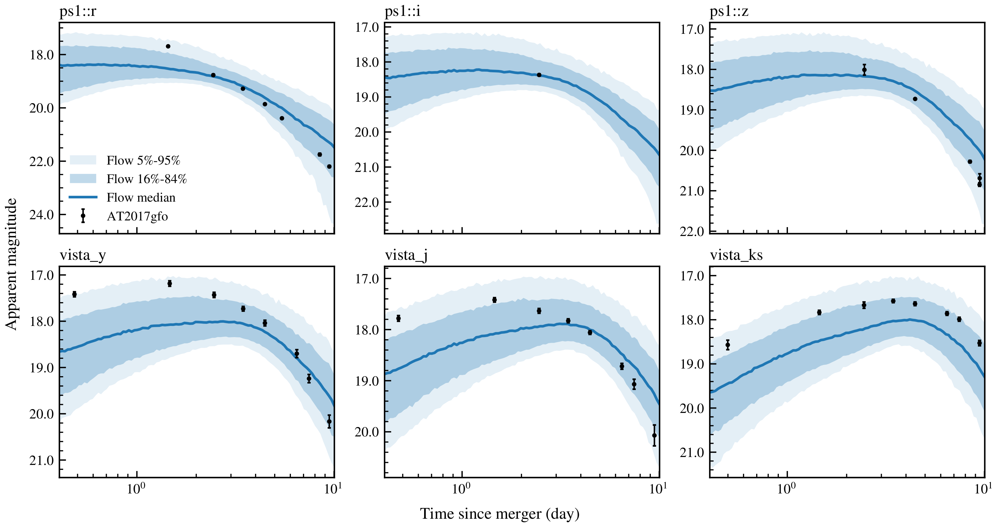<br />
图注：Flow prediction for GW170817/AT2017gfo. The solid blue lines show the median prediction from the flow, while the shaded region indicate the central 68\%, and 90\% quantile intervals. The points are the observations of AT2017gfo.<br />
对应解读：“建议重点查看的图表”第6项与“关键图表逐图导读”图5：GW170817/AT2017gfo 多波段光变预测与观测对比。<br />
入选理由：这是本文应用到真实事件的核心结果图，直接展示AT2017gfo观测点与Genova预测中位线、中心68%和90%区间的关系，最能支撑日报关于预测区间是否覆盖观测、多波段尤其近红外演化是否合理的解读。<br />
来源与置信度：\(arxiv_source\)；high；\(arxiv_source\) / kilonova.tex:figure[9]</p>
<p><strong>Fig06</strong><br />
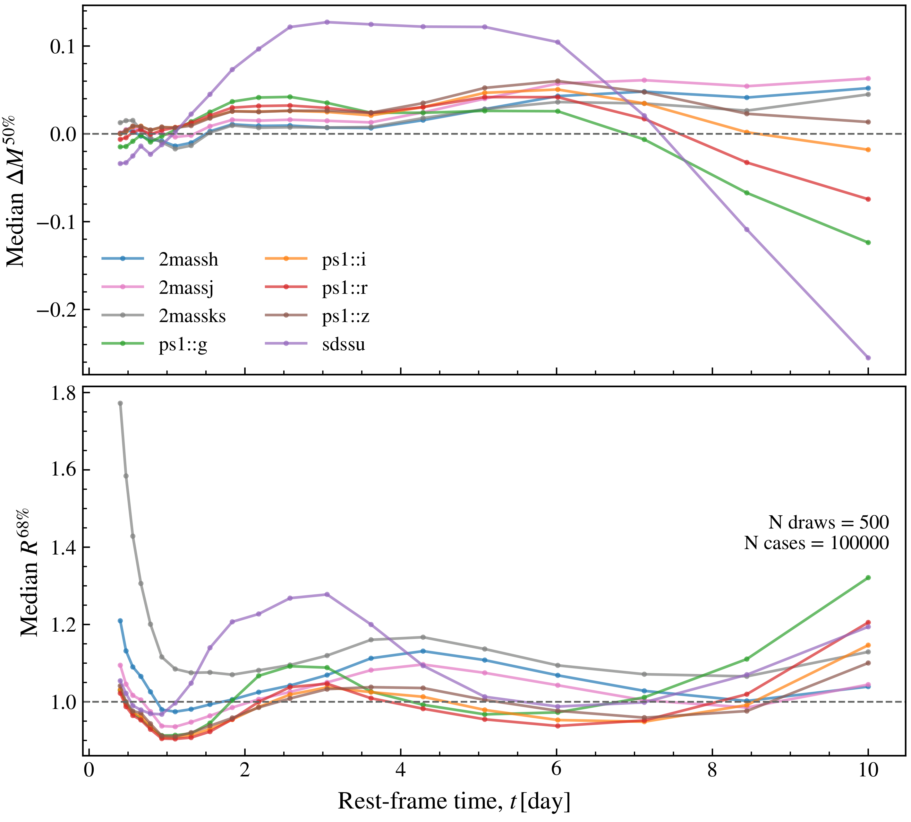<br />
图注：Time evolution of the flow predictive behaviour across $10^5$ test cases in eight bands. Top panel: time-binned median residuals between the flow and the corresponding \(\nichollbns\) predictive medians. Bottom panel: time-binned median of the ratio of the central $68\%$ interval widths predicted by the flow and \(\nichollbns\) model. Different colours represent different bands.<br />
对应解读：“建议重点查看的图表”第3、4项与“模型拟合”中的残差诊断：残差随时间/波段变化和中心68%区间宽度比。<br />
入选理由：该图汇总10^5个测试样本在八个波段中的时间分箱中位残差和68%区间宽度比，正对应摘要中“残差通常低于约0.1 mag、宽度比主要在0.8--1.4”的关键性能声明，比单个测试案例更能检验概率校准和系统偏移。<br />
来源与置信度：\(arxiv_source\)；high；\(arxiv_source\) / kilonova.tex:figure[6]</p>
<p><strong>Fig08</strong><br />
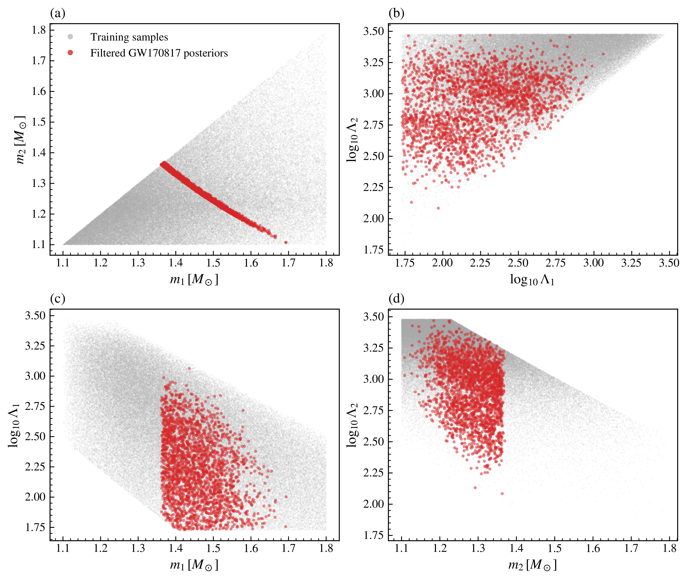<br />
图注：Distribution of the selected GW170817 posterior samples relative to the training parameter domain of the flow model. The gray points represent the training samples, and the red points show the GW170817 posterior samples remained in the constructed convex hull. The four panels show two dimension projections onto (a) $(m_1, m_2)$, (b) $(\log_{10}\Lambda_1,\log_{10}\Lambda_2)$, (c) $(m_1, \log_{10}\Lambda_1)$, and (d) $(m_2, \log_{10}\Lambda_2)$.<br />
对应解读：“建议重点查看的图表”第1项与“关键图表逐图导读”图1：训练参数空间覆盖与GW170817后验位置。<br />
入选理由：该图明确给出训练样本和GW170817后验样本在质量与潮汐形变率二维投影中的相对位置，可判断真实事件预测是否属于训练域内插而非外推，是解读后续GW170817结果可信度的前置诊断。<br />
来源与置信度：\(arxiv_source\)；high；\(arxiv_source\) / kilonova.tex:figure[8]</p>
<p><strong>Fig07</strong><br />
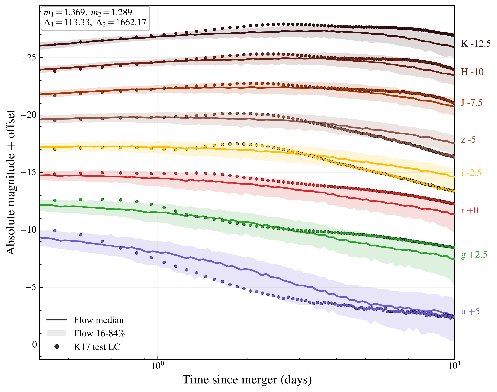<br />
图注：Example cross-model light curve comparison between the flow model predictions and \(\kasen\) in the optical/NIR bands. Solid curves show the median flow predictions, while shaded regions indicate the 16--84\% predictive intervals. The points show the corresponding three-component \(\kasen\) light curves. Light curves are vertically shifted for clarity, with the applied offsets labelled on the right. The binary parameters used for this example are shown on the upper-left.<br />
对应解读：“建议重点查看的图表”第5项与“关键图表逐图导读”图4：跨模型比较。<br />
入选理由：该图把Genova预测带与物理上不同的Kasen三成分模型光变进行光学/近红外多波段对比，是检验模型族系统误差和跨模型泛化能力的主要图表，直接支撑日报中关于偏离波段和模型鲁棒性的讨论。<br />
来源与置信度：\(arxiv_source\)；high；\(arxiv_source\) / kilonova.tex:figure[7]</p>
<p><strong>Fig11</strong><br />
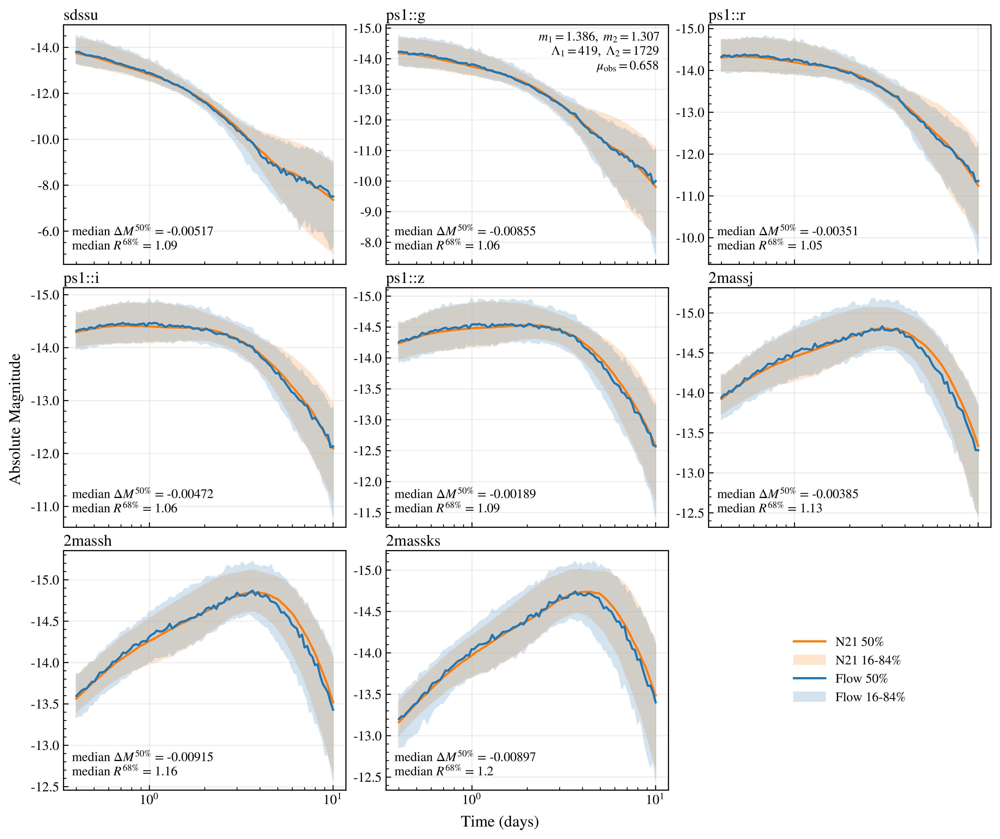<br />
图注：Multi-band light curve comparison between the \(\nichollbns\) and the flow model for an example test case. The median and central 68\% quantile interval are shown for both models (flow: blue; theory: orange). The average median residual and the ratio of uncertainty width over time for each band are shown at the left bottom corner in each panel.<br />
对应解读：“建议重点查看的图表”第2、3、4项与“关键图表逐图导读”图2、图3：自洽测试多波段光变、残差和区间宽度比。<br />
入选理由：该图在多波段中同时展示NichollBNS理论模型与flow模型的中位数、68%区间，并在每个面板标注平均中位残差和不确定度宽度比，适合逐波段检查代理模型中心趋势和概率宽度是否可靠。<br />
来源与置信度：\(arxiv_source\)；high；\(arxiv_source\) / kilonova.tex:figure[11]</p>
<p><strong>Fig05</strong><br />
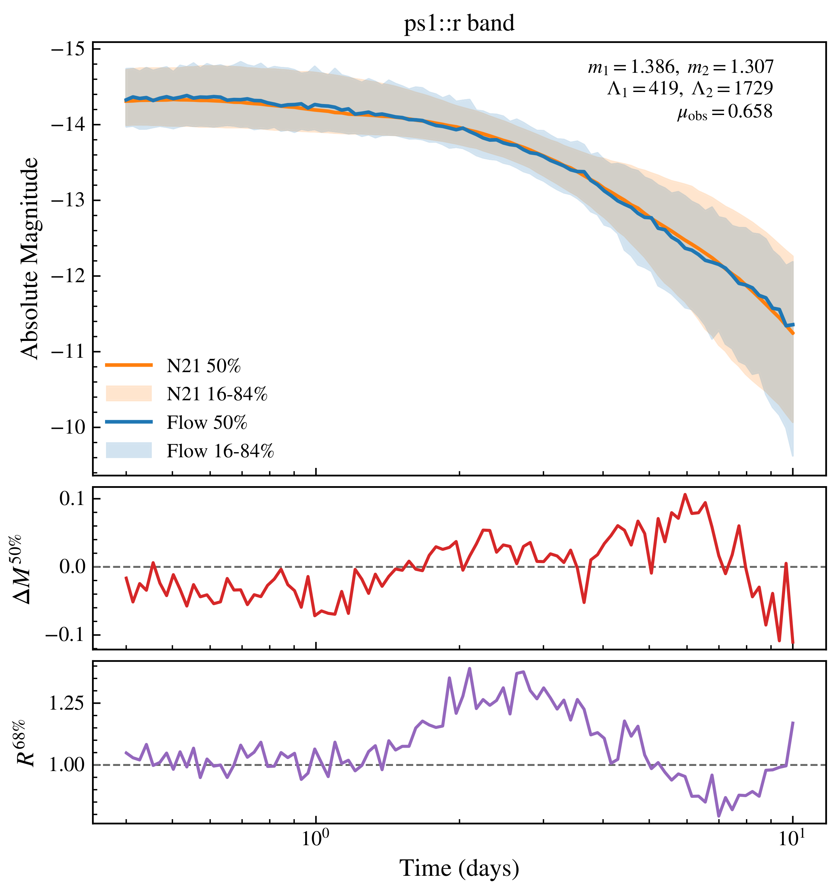<br />
图注：Comparison between the \(\nichollbns\) model and the flow model for an example test case in the $r$ band. The median and central 68\% quantile interval are shown for both models in the upper panel. The median residuals and central 68\% width ratios are shown in the middle and lower panels, respectively. The $(m_1,m_2,\Lambda_1,\Lambda_2)$ values for this example are drawn from the test set.<br />
对应解读：“模型拟合”中的单例残差诊断：r波段中位残差与中心68%区间宽度比。<br />
入选理由：该图提供一个r波段测试案例的上中下三面板结构，包含模型预测、残差和区间宽度比，能直观看出残差是否围绕零及不确定度是否过宽或过窄；虽然科学覆盖面不如Fig06和Fig11，但适合作为校准诊断的细节补充。<br />
来源与置信度：\(arxiv_source\)；high；\(arxiv_source\) / kilonova.tex:figure[5]</p>
<h4 id="_34">强相关工作</h4>
<p>这篇工作与 \(\mathrm{GW170817}/\mathrm{AT2017gfo}\) 的同一事件论文直接相关，包括引力波发现、多信使观测、光学/近红外千新星测光和理论解释。它的差异不在于提出一种新的单事件最佳拟合千新星模型，而在于把引力波后验样本概率地传播到千新星预测，并用正规化流边缘化千新星模型参数。检索关键词可用 “GW170817 AT2017gfo kilonova light curves”, “kilonova radiative transfer surrogate model”, “gravitational wave posterior kilonova prediction”。</p>
<p>在方法上，它属于机器学习代理模型和仿真基推断在多信使天文学中的应用。可与传统半解析千新星模型、辐射转移网格插值、基于高斯过程的光变代理模型、以及直接做贝叶斯千新星参数拟合的工作比较。潜在张力在于不同千新星模型族对不透明度、热化效率、抛射物几何和核加热率的处理不同；若代理模型只在单一模型族上训练，其可信区间可能低估跨模型系统误差。检索关键词可用 “normalizing flows astrophysics surrogate”, “simulation based inference kilonova”, “kilonova opacity lanthanide viewing angle”。</p>
<p><strong>同一事件 / 同类源线索</strong>：</p>
<ul>
<li><a href="https://arxiv.org/abs/2608.20262">https://arxiv.org/abs/2608.20262</a></li>
<li><a href="https://arxiv.org/abs/1710.05832">https://arxiv.org/abs/1710.05832</a></li>
<li><a href="https://arxiv.org/abs/1710.05833">https://arxiv.org/abs/1710.05833</a></li>
<li><a href="https://arxiv.org/abs/1710.05452">https://arxiv.org/abs/1710.05452</a></li>
</ul>
<p><strong>相似工作</strong>：</p>
<ul>
<li><a href="https://arxiv.org/abs/1710.05463">https://arxiv.org/abs/1710.05463</a></li>
<li><a href="https://arxiv.org/abs/1710.05456">https://arxiv.org/abs/1710.05456</a></li>
<li><a href="https://arxiv.org/abs/1710.05446">https://arxiv.org/abs/1710.05446</a></li>
</ul>
<p><strong>基础理论 / 方法工作</strong>：</p>
<ul>
<li><a href="https://arxiv.org/abs/1910.01617">https://arxiv.org/abs/1910.01617</a></li>
<li><a href="https://arxiv.org/abs/1505.05770">https://arxiv.org/abs/1505.05770</a></li>
<li><a href="https://arxiv.org/abs/1305.5421">https://arxiv.org/abs/1305.5421</a></li>
</ul>
<p><strong>相反观点 / 张力线索</strong>：</p>
<ul>
<li><a href="https://arxiv.org/abs/1710.05836">https://arxiv.org/abs/1710.05836</a></li>
<li><a href="https://arxiv.org/abs/1805.11581">https://arxiv.org/abs/1805.11581</a></li>
</ul>
</details>
<h3 id="4-revisiting-the-growth-rate-of-the-relativistic-tearing-instability-the-role-of-the-non-ideal-mhd-structure">4. Revisiting the Growth Rate of the Relativistic Tearing Instability: The Role of the Non-ideal MHD Structure</h3>
<ul>
<li>来源：arXiv / astro-ph.HE</li>
<li>链接：https://arxiv.org/abs/2608.19645v1</li>
<li>作者：Kaoru Sugimoto, Kunihito Ioka, Masaru Shibata</li>
<li>评分：novelty 7/10，importance 8/10，relevance 8/10，final 8.70/10</li>
<li>推荐理由：修正相对论撕裂不稳定性增长率解析理论并与PIC模拟比较，针对磁主导重联；可作为GRB、FRB、喷流等高能等离子体模型的基础基准。</li>
</ul>
<p><strong>中文题目</strong>：重新审视相对论撕裂不稳定性的增长率：非理想 MHD 区域结构的作用</p>
<p><strong>做了什么</strong>：这篇文章重新推导了磁主导正负电子等离子体中 Harris 电流片的相对论撕裂不稳定性线性增长率和最快增长波数。核心改动不是换一个全新的重联模型，而是修正常用解析理论在非理想 MHD 内层对矢势扰动的处理：传统的常数 \(A\) 近似被作者称为 extrapolated-\(A\) 的处理取代，即把外层理想 MHD 解线性外推到内层。与二维 PIC 模拟比较后，新公式对最快增长波长的预测更好，尤其在粒子漂移速度较低、回旋半径小于电流片厚度时，最快模式会移向更长波长。</p>
<p><strong>为什么重要</strong>：相对论磁重联是伽马暴、磁星耀发、脉冲星风、快速射电暴环境中把磁能快速转化为粒子能量和辐射的关键过程。撕裂不稳定性决定初始磁岛形成和重联启动的线性阶段；如果最快增长波数估错，后续非线性磁岛尺度、能量释放时间尺度和辐射区几何都会被带偏。本文的重要性在于，它指出一个看似技术性的边界层近似会系统影响理论基准。</p>
<p><strong>理论 / 观测 / 仪器方法价值</strong>：对理论工作者，这篇文章给出一个比传统常数 \(A\) 近似更可靠的相对论撕裂增长率标尺，可用于检验解析模型、数值代码和半解析重联模型。对数值模拟者，它提供了二维 PIC 线性阶段可直接比较的增长率和最快波数诊断。对高能天体物理应用，它帮助把微观电流片参数，如厚度、漂移速度、磁化度和回旋半径，与宏观爆发源中的变时标和辐射区尺度联系起来。</p>
<p><strong>为什么应该关注</strong>：如果你关心高能瞬变中的磁能释放，这篇文章值得看，因为它不是泛泛地说“重联很重要”，而是修正了撕裂不稳定性线性理论中一个会影响最快模式选择的近似。许多 GRB、FRB、磁星和 PWN 模型都把重联速率或磁岛尺度当作输入参数；本文提醒我们，这些参数的微观来源可能对电流片内层结构很敏感，尤其在低漂移速度或较厚电流片的区域。</p>
<details class="paper-detail">
<summary>展开详细解读：文章讲解、背景、理论、重点章节、图表与相关工作</summary>
<h4 id="_35">文章详细讲解</h4>
<p>科学问题：本文关注的是磁主导相对论正负电子等离子体中的 Harris 电流片是否会按传统相对论撕裂不稳定性理论所预测的速度和尺度破裂。经典撕裂理论把问题分为外层理想 MHD 区域和内层非理想区域，二者通过匹配条件连接。长期使用的常数 \(A\) 近似假定内层矢势扰动 \(A\) 基本不变，这在某些薄边界层极限中合理，但在相对论、有限粒子回旋半径、有限漂移速度的 Harris 片中未必总是成立。作者要回答的问题是：这个内层近似是否会导致最快增长波数 \(k_{\rm max}\) 和增长率 \(\gamma\) 的系统偏差。</p>
<p>作者怎么做：他们仍然从 Harris 电流片和线性撕裂模出发，把电磁扰动分解为沿电流片方向传播的 Fourier 模式，并在外层采用理想 MHD 解。关键创新是内层非理想区域的匹配方式：不是令矢势扰动在内层为常数，而是把外层解的斜率线性外推进内层，即 extrapolated-\(A\) 近似。这个处理保留了外层解在电流片中心附近的空间结构，使内层宽度、回旋半径和片厚的相对大小能够影响匹配条件。随后作者推导修正后的线性增长率和最不稳定波数，并把解析表达式与二维 PIC 模拟的线性阶段结果比较。</p>
<p>关键结果：修正理论主要改善的是最快增长波数，而不只是增长率的数值微调。在低粒子漂移速度情形，粒子回旋半径小于电流片厚度，传统常数 \(A\) 近似倾向于把最快模式放在过短波长；extrapolated-\(A\) 近似则预言最快增长模向较长波长移动，并与 PIC 结果更接近。这个结果的物理含义是：当粒子轨道尺度不能覆盖整个电流片时，内层并非“看见”一个完全平坦的矢势扰动，外层理想结构仍会渗入非理想匹配。</p>
<p>局限和下一步：本文主要处理线性撕裂阶段和二维 Harris 片，因而还不能直接给出三维湍动重联、强辐射冷却、对离子-电子质量比有限的等离子体、或全局弯曲电流片中的非线性重联速率。PIC 比较用于检验线性增长和模式选择，但不同数值噪声、边界条件、初始扰动谱和有限盒长都可能影响最快模识别。下一步自然是把修正增长率放入非线性 plasmoid 级联模型和辐射转移动力学模型，检查它是否改变高能瞬变中可观测的变时标、光变功率谱和粒子加速效率。</p>
<h4 id="_36">关键结果是怎么做出来的</h4>
<p>本文最重要的证据链是“解析匹配条件改变 \(\rightarrow\) 最快增长波数改变 \(\rightarrow\) PIC 线性阶段验证”。样本不是天文观测源，而是一组 Harris 电流片参数空间中的二维 PIC 数值实验。应重点看作者如何选择磁化度、电流片厚度、粒子漂移速度和温度，使得粒子回旋半径 \(\rho\) 与电流片半厚度 \(\lambda\) 的比值覆盖不同区间；特别是 \(\rho<\lambda\) 的低漂移速度区域，因为这是新旧理论差异最大的地方。</p>
<p>事件数或样本量在这里对应的是模拟组数、每组可解析的 Fourier 模式数、以及线性阶段中用于拟合指数增长的时间窗口。读者应检查论文表格或方法段落中是否列出每个 run 的盒长、网格分辨率、每 cell 粒子数、边界条件、初始噪声幅度和可用波数 \(k=2\pi n/L\)。最快模 \(k_{\rm max}\) 的判定通常来自不同 Fourier 模式的磁岛或矢势扰动幅度随时间的指数增长率拟合，而不是来自非线性阶段最大磁岛的大小。</p>
<p>显著性或置信度的逻辑更接近数值模型比较，而非观测发现的 \(5\sigma\) 检验。应关注作者是否给出了增长率拟合误差、线性阶段起止时间选择对 \(\gamma\) 的影响、以及离散波数采样导致的 \(k_{\rm max}\) 不确定度。若图中有传统常数 \(A\) 理论、新 extrapolated-\(A\) 理论和 PIC 点的对比，关键不是每个点是否完全重合，而是新理论是否系统性减少偏差，尤其是否正确预测低漂移速度下向长波长移动的趋势。</p>
<p>模型比较方面，旧理论和新理论共享大部分物理输入，因此差异主要来自内层 \(A\) 的处理。读者应检查是否存在“调参式改进”：例如新公式是否引入额外自由参数，还是由外层解外推和内层尺度自然决定。如果没有额外可调常数，而仍能改善 \(k_{\rm max}\)，那么结果更有理论含量。</p>
<p>系统误差主要来自 PIC 本身和线性理论适用性。PIC 中有限粒子噪声可能提前触发某些模式；有限盒长只允许离散 \(k\)，可能把真实 \(k_{\rm max}\) 夹在两个模式之间；有限网格与粒子数会影响非理想层微观结构。稳健性检验应包括改变盒长、分辨率、粒子数、初始扰动方式，以及用不同时间窗口拟合 \(\gamma\)。如果这些检验显示同一物理趋势仍存在，本文的核心结论就比较可信。</p>
<details class="paper-subdetail">
<summary>展开背景、理论、公式、模型、章节和图表导读</summary>
<h4 id="_37">背景知识</h4>
<p>Harris 电流片是研究磁重联和撕裂不稳定性的标准平衡构型：反平行磁场在一个有限厚度层内翻转，电流由带电粒子的漂移支撑。在相对论正负电子等离子体中，正电子和电子质量相同，霍尔效应不像电子-离子等离子体那样主导结构，问题更适合用对称的 kinetic 或相对论 MHD 语言描述。这类系统常被用来近似脉冲星风、磁星磁层、GRB 喷流和 FRB 可能的磁化环境。</p>
<p>历史上，撕裂不稳定性理论来自电阻 MHD 的边界层匹配。外层磁场近似冻结在流体中，内层由于电阻、惯性或 kinetic 效应允许磁力线拓扑改变。经典 Furth-Killeen-Rosenbluth 型理论中的一个常见近似是常数 \(\psi\) 或常数 \(A\) 近似，即内层扰动磁通函数变化很小。这个近似在长波、薄内层、匹配参数适当的情况下很好用，但一旦内层宽度、粒子轨道尺度和电流片厚度不再有强烈尺度分离，就可能失效。</p>
<p>相对论高能天体物理重新关注这个问题，是因为现代 PIC 模拟已经能够解析磁主导 pair plasma 的线性和非线性重联过程，而观测上 GRB、磁星耀发和 FRB 对快速能量释放提出了更严格的时标要求。过去很多全局模型只使用经验重联速率 \(v_{\rm rec}\sim 0.1c\)，但真实系统中重联的启动、磁岛初始尺度和 plasmoid 级联入口都取决于线性撕裂不稳定性。若线性理论标尺不准，后续模型即使复杂也可能建立在错误初始条件上。</p>
<p>一个常见误区是把“相对论撕裂增长率”理解为单一 universal 数字。实际上 \(\gamma\) 和 \(k_{\rm max}\) 同时依赖电流片厚度、磁化度、漂移速度、温度、非理想层宽度和粒子回旋半径。另一个误区是认为 PIC 模拟天然取代理论公式；事实上 PIC 给出数值真值趋势，但解析公式仍然是理解尺度律、外推到天体参数区间、以及检验大规模 MHD 或辐射 MHD 子网格模型的必要工具。</p>
<p>本文现在值得重新看，还因为高能暂现源建模越来越需要把微观 kinetic 结果接到宏观观测量上。FRB 毫秒时标、GRB prompt 辐射快速变动、磁星巨耀发硬 X/软 \(\gamma\) 射线尾迹，都可能对磁场结构破裂尺度敏感。一个更准确的 \(k_{\rm max}\) 公式意味着我们能更可靠地估计初始磁岛间距、线性增长时间和进入非线性重联的条件。</p>
<h4 id="_38">基础理论 / 方法脉络</h4>
<p>基本物理图像是：反平行磁场储存磁能，电流片中带电粒子漂移维持磁场反转。若沿电流片方向出现小扰动，某些波长会使磁力线在 X 点附近断裂并重新连接，形成磁岛。在线性阶段，每个 Fourier 模式的扰动幅度近似按 \(\exp(\gamma t)\) 增长；\(\gamma\) 最大的模式通常决定最先进入非线性的磁岛尺度。</p>
<p>撕裂模的理论结构一般分外层和内层。外层中理想 MHD 条件近似成立，磁场冻结，扰动满足一个无耗散的本征方程；内层靠近共振面，理想项变小，电阻、粒子惯性、有限 Larmor 半径或 kinetic 效应允许拓扑改变。两层之间通过扰动矢势 \(A\) 及其导数的跳跃量匹配，常写成撕裂稳定性参数 \(\Delta'\)。</p>
<p>本文的模型假设是相对论磁主导 pair plasma 的 Harris 片，电流由正负电子反向漂移提供。关键量包括电流片半厚度 \(\lambda\)、扰动波数 \(k\)、线性增长率 \(\gamma\)、粒子漂移速度 \(v_{\rm d}\)、回旋半径 \(\rho\)、磁化度 \(\sigma\)，以及非理想内层宽度。所谓 extrapolated-\(A\) 近似，就是承认内层中的 \(A\) 不是完全常数，而应继承外层理想解在共振面附近的线性趋势。</p>
<p>观测方法在这里不是望远镜观测，而是二维 PIC 模拟诊断。PIC 直接推进大量宏粒子和电磁场，能够从第一性原理生成电流片不稳定性的线性增长。作者可以对矢势、磁场或电流密度做 Fourier 分解，测量每个 \(k\) 模式的指数增长率，并与解析 \(\gamma(k)\) 曲线比较。关键残差是 \(k_{\rm max}\) 的位置和 \(\gamma_{\rm max}\) 的大小。</p>
<p>常见退化包括 \(\lambda\) 与 (<br />
ho) 的比例退化、漂移速度与温度对压力平衡的共同影响、磁化度与 Alfvén 速度的关联，以及有限盒长对可取 \(k\) 的离散采样。系统误差还包括初始热噪声、粒子数不足导致的数值碰撞、边界反射、网格尺度接近 Debye 长度或皮肤深度时的解析误差。本文的理论价值正是在这些复杂因素中指出：内层矢势形状本身就是一个不能随便忽略的误差源。</p>
<h4 id="_39">公式与推导</h4>
<p>第一步是 Harris 电流片的平衡。设反平行磁场沿 \(x\) 方向、跨片坐标为 \(z\)，常用平衡可写为</p>
<div class="math-display">\[B_x(z)=B_0\tanh\left(\frac{z}{\lambda}\right),\]</div>
<p>其中 \(B_0\) 是远离电流片的磁场强度，\(\lambda\) 是电流片半厚度。这个式子描述磁场在 \(z=0\) 处反转，电流集中在 \(|z|\lesssim\lambda\) 区域。</p>
<p>第二步由 Ampère 定律得到支撑电流：</p>
<div class="math-display">\[J_y(z)=\frac{c}{4\pi}\frac{dB_x}{dz}=\frac{cB_0}{4\pi\lambda}{\rm sech}^2\left(\frac{z}{\lambda}\right).\]</div>
<p>若为正负电子等离子体，电流可近似写成 \(J_y=2en(z)v_{\rm d}\)，其中 \(e\) 是元电荷，\(n(z)\) 是单种粒子数密度，\(v_{\rm d}\) 是漂移速度。这个关系把宏观片厚和磁场梯度连接到微观漂移。</p>
<p>第三步是压力平衡。忽略引导场时，磁压和等离子体压强满足</p>
<div class="math-display">\[p(z)+\frac{B_x^2(z)}{8\pi}=p_0+\frac{B_0^2}{8\pi}={\rm const}.\]</div>
<p>这个式子说明 Harris 片中心磁场弱、热压高，远离中心磁压高、热压低。它也限制了温度、密度和漂移速度不能独立任意选择。</p>
<p>第四步定义相对论磁化度和特征速度：</p>
<div class="math-display">\[\sigma=\frac{B_0^2}{4\pi w},\(\qquad\) \(v_A=c\left(\frac{\sigma}{1+\sigma}\right)^{1/2},\)\]</div>
<p>其中 \(w\) 是包含静质量和热能的焓密度，\(v_A\) 是相对论 Alfvén 速度。磁主导极限 \(\sigma\gg1\) 下，\(v_A\) 接近光速 \(c\)，撕裂增长可达到相对论时标。</p>
<p>第五步写线性扰动。令矢势扰动为</p>
<div class="math-display">\[\(\delta\) \(A_y(z,x,t)=\tilde\) A(z)\exp(ikx+\gamma t),\]</div>
<p>其中 \(k\) 是沿电流片方向的波数，\(\gamma\) 是增长率，\(	ilde A(z)\) 是跨片本征函数。线性撕裂问题就是求哪些 \(k\) 具有正的 \(\gamma\)，以及 \(\gamma(k)\) 的最大值。</p>
<p>第六步是外层理想 MHD 的匹配量。通常定义</p>
<div class="math-display">\[\(\Delta\)'=\(\left\)[\frac{1}{\tilde A}\(\frac{d\tilde A}{dz}\right\)]_{0^-}^{0^+},\]</div>
<p>它衡量共振面两侧外层解导数的不连续程度。\(\Delta'>0\) 往往意味着撕裂驱动可用；但真正的 \(\gamma\) 还取决于内层非理想物理如何把这个跳跃“吸收”。</p>
<p>第七步对比传统常数 \(A\) 近似和本文的 extrapolated-\(A\) 近似。常数近似相当于</p>
<div class="math-display">\[\(\tilde\) A(z)\(\simeq\) \(\tilde\) A(0)\(\quad\) (|z|\lesssim\delta),\]</div>
<p>其中 \(\delta\) 是非理想内层宽度。本文思想可概括为</p>
<div class="math-display">\[\(\tilde\) \(A_{\rm in}(z)\simeq\) \(\tilde\) A_{\rm out}(0)+z\left.\frac{d\tilde A_{\rm out}}{dz}\right|_{0^\pm},\]</div>
<p>即把外层理想解线性外推进内层。这个修正让内层平均矢势和匹配积分显式依赖外层斜率，从而影响 \(\gamma(k)\) 和 \(k_{\rm max}\)。</p>
<p>第八步可把线性理论的结果抽象写成增长率曲线</p>
<div class="math-display">\[\gamma(k)=\frac{v_A}{\lambda}\,G\left(k\lambda,\frac{\rho}{\lambda},\sigma,\frac{v_{\rm d}}{c}\right),\]</div>
<p>其中 (<br />
ho) 是粒子回旋半径，\(G\) 是由外层解、内层非理想结构和匹配条件决定的无量纲函数。本文的主要改变是用 extrapolated-\(A\) 修改 \(G\) 的形状，尤其改变其峰值位置。</p>
<p>第九步是最快增长模式的条件：</p>
<div class="math-display">\[\left.\frac{\partial \gamma}{\partial k}\right|_{k=k_{\rm max}}=0,
\qquad \gamma_{\rm max}=\gamma(k_{\rm max}).\]</div>
<p>传统近似和新近似给出不同的 \(k_{\rm max}\)。在 (<br />
ho/\(\lambda<1\)) 且漂移速度较低时，新理论预期 \(k_{\rm max}\lambda\) 变小，也就是最快模式波长 \(2\pi/k_{\rm max}\) 变长。</p>
<p>第十步是与 PIC 数据比较的统计诊断。若从模拟中得到模式振幅 \(a_k(t)\)，线性阶段可拟合</p>
<div class="math-display">\[\(\ln\) |\(a_k(t)|=\ln\) |\(a_k(t_0)|+\gamma_k(t-t_0),\)\]</div>
<p>并用残差</p>
<div class="math-display">\[R_k=\frac{\gamma_{k,{\rm PIC}}-\gamma_{k,{\rm th}}}{\sigma_{\gamma,k}}\]</div>
<p>评估理论曲线。这里 \(\sigma_{\gamma,k}\) 表示拟合窗口、噪声和离散采样带来的不确定度。本文声称新理论改善最快波数预测，本质上就是降低 \(k_{\rm max}\) 位置和 \(\gamma(k)\) 峰附近的系统残差。</p>
<h4 id="_40">模型拟合 / 应用方法</h4>
<p>本文的“拟合”主要不是天文数据的多参数后验拟合，而是解析增长率曲线与 PIC 模拟线性增长率的比较。被比较的量包括每个 Fourier 模式的增长率 \(\gamma_k\)、增长率曲线峰值 \(\gamma_{\rm max}\)、以及峰值位置 \(k_{\rm max}\)。模拟端通常从扰动磁能、矢势模幅或电流密度模幅随时间的指数增长中估计 \(\gamma_k\)。</p>
<p>统计上，最关键的是线性时间窗口的选择。太早时信号可能被粒子噪声和初始条件支配；太晚时模式耦合、磁岛合并和非线性饱和会破坏单指数增长。一个稳健的分析应展示 \(\ln |a_k|\) 对时间近似线性，并说明改变拟合窗口后 \(\gamma_k\) 的变化范围。若论文给出误差棒，读者应判断误差是否包括时间窗口系统误差，而不仅是线性回归的形式误差。</p>
<p>参数退化方面，\(v_{\rm d}\)、\(T\)、\(n\)、\(\lambda\) 和 \(B_0\) 通过压力平衡、电流支撑和磁化度相互联系。改变漂移速度可能同时改变粒子回旋半径与片厚比，从而让“漂移速度效应”和“有限 Larmor 半径效应”难以完全分离。理论比较时应尽量使用无量纲组合，例如 \(k\lambda\)、(<br />
ho/\(\lambda\))、\(\sigma\) 和 \(\gamma\lambda/v_A\)，而不是只看有量纲增长率。</p>
<p>残差诊断应重点看峰值附近，而不是只看长波或短波端。长波端可能受有限盒长限制，短波端可能受网格、Debye 长度或粒子噪声影响；真正决定模式选择的是 \(\gamma(k)\) 曲线的峰和峰宽。如果旧理论和新理论在 \(\gamma_{\rm max}\) 大小上接近，但在 \(k_{\rm max}\) 上明显不同，那么应优先关注模拟是否有足够密的 \(k\) 采样来分辨这个差异。</p>
<p>模型可能失败的地方包括强三维效应、引导场、非 Maxwell-Jüttner 分布、辐射冷却、对产生生灭、以及全局曲率。Harris 片是理想化局域模型，在真实 GRB 或 FRB 磁层中，电流片可能被剪切、压缩、湍流和外部驱动不断扰动。本文公式更适合作为线性局域 benchmark，而不是直接替代全局重联速率模型。</p>
<p>实际应用上，理论工作者可把新 \(\gamma(k)\) 放进半解析 plasmoid 级联模型，用它决定初始磁岛间距和进入非线性阶段的时间。数值工作者可用本文公式检查 PIC 或 relativistic resistive MHD 代码在已知 Harris 平衡下是否给出正确线性谱。高能瞬变建模者则可用 (t_{<br />
m grow}\sim1/\gamma_{<br />
m max}) 和 (\ell_{<br />
m island}\sim2\pi/k_{<br />
m max}) 估计微观能量释放单元的初始尺度。</p>
<h4 id="_41">重点章节 / 结果段落怎么读</h4>
<ol>
<li>
<p>引言和问题设定：读者应先看作者如何界定传统相对论撕裂理论的问题，尤其是常数 \(A\) 近似在什么条件下被默认使用。这里的重点不是重联的一般重要性，而是为什么内层矢势结构会影响最快增长波数。</p>
</li>
<li>
<p>Harris 电流片和平衡模型：这一部分应检查电流片厚度、粒子漂移速度、温度、磁化度和回旋半径的定义。所有后续无量纲参数都来自这里。若作者使用特定单位制或归一化，例如以 \(\lambda\)、\(c\)、等离子体频率或回旋频率为单位，读者应先弄清楚。</p>
</li>
<li>
<p>线性理论和 extrapolated-\(A\) 近似：这是论文核心。重点读外层理想 MHD 解如何写、内层非理想区域如何处理、匹配条件如何从常数 \(A\) 改成外推 \(A\)。应特别比较新旧公式在 (<br />
ho/\(\lambda\)) 或 (v_{<br />
m d}/c) 变化时的极限行为。</p>
</li>
<li>
<p>PIC 模拟设置与诊断：读者应检查模拟维度、盒长、边界条件、网格分辨率、每 cell 粒子数、初始扰动或噪声处理，以及 Fourier 模式增长率的提取方法。这里决定了解析比较是否可信。</p>
</li>
<li>
<p>理论与模拟对比结果：重点看 \(\gamma(k)\) 曲线和 (k_{<br />
m max}) 随漂移速度或 (<br />
ho/\(\lambda\)) 的变化。若论文有参数扫描表，应把每个 run 的物理区间和理论预测差异对上。</p>
</li>
<li>
<p>讨论和适用范围：最后看作者如何把结果外推到 GRB、FRB 或磁星等高能环境，以及是否明确说明二维、线性、Harris 片、pair plasma 等限制。不要把本文结果直接读成所有重联系统的 universal 重联速率。</p>
</li>
</ol>
<h4 id="_42">建议重点查看的图表</h4>
<ol>
<li>
<p>Harris 平衡或本征函数示意图：看 \(B_x(z)\)、电流密度和矢势扰动在电流片内外的形状，尤其常数 \(A\) 与 extrapolated-\(A\) 在非理想层中的差别。</p>
</li>
<li>
<p>解析 \(\gamma(k)\) 曲线：比较传统理论和新理论在不同 (v_{<br />
m d}) 或 (<br />
ho/\(\lambda\)) 下的增长率谱。重点看峰值位置是否向小 \(k\) 移动。</p>
</li>
<li>
<p>PIC Fourier 模式增长图：看每个 \(k\) 模式振幅随时间是否有清楚线性指数增长段，拟合窗口是否避开初始噪声和非线性饱和。</p>
</li>
<li>
<p>(k_{<br />
m max}) 对参数的扫描图：这是检验本文主张的关键图。应看低漂移速度、(<br />
ho&lt;\(\lambda\)) 区域中新理论是否比常数 \(A\) 更接近模拟点。</p>
</li>
<li>
<p>(\gamma_{<br />
m max}) 对参数的扫描图：检查新理论是否只改善波数，还是也改善增长率幅度；若二者表现不同，要理解原因。</p>
</li>
<li>
<p>数值收敛或稳健性图表：看改变盒长、分辨率、粒子数、拟合窗口后结果是否稳定。若没有充分展示，读者应保留系统误差疑问。</p>
</li>
<li>
<p>残差或比值图：若有 (\gamma_{<br />
m PIC}/\gamma_{<br />
m th}) 或 (k_{<br />
m max,PIC}/k_{<br />
m max,th})，应优先看它，因为它比多条曲线叠图更容易判断系统偏差。</p>
</li>
</ol>
<h4 id="_43">关键图表逐图导读</h4>
<p>图 1：如果论文给出 Harris 电流片结构图，横轴通常是跨片坐标 \(z/\lambda\)，纵轴可能是 \(B_x/B_0\)、密度、电流密度或扰动矢势。读图时要看磁场反转层宽度和非理想内层相对位置。陷阱是不要把画出的内层宽度当作固定物理常数；它会随参数和模式改变。</p>
<p>图 2：理论推导相关图很可能比较常数 \(A\) 与 extrapolated-\(A\) 的内层矢势形状。横轴应为 \(z\)，纵轴为归一化 \(	ilde A\) 或其导数。关键结论是外层解的斜率被保留后，内层平均扰动不再等同于中心值。读图陷阱是：两条线在中心附近看似差别小，但匹配积分和 (k_{<br />
m max}) 可能对这种小差别敏感。</p>
<p>图 3：增长率谱图通常以横轴 \(k\lambda\)、纵轴 \(\gamma\lambda/c\) 或 \(\gamma\lambda/v_A\) 展示。数据点来自 PIC，模型线来自旧解析理论和新解析理论。主要看峰的位置，而不仅是最高点高度。若可用 \(k\) 是离散的，模拟点的峰值可能只是最接近真实峰的允许模式。</p>
<p>图 4：参数扫描图可能显示 (k_{<br />
m max}\(\lambda\)) 随 (v_{<br />
m d}/c) 或 (<br />
ho/\(\lambda\)) 的变化。本文核心预期是在低漂移速度或 (<br />
ho/\(\lambda<1\)) 时，新理论曲线向更小 (k_{<br />
m max}\(\lambda\)) 偏移并贴近 PIC 点。陷阱是高漂移速度区域中新旧理论可能都不错，不能据此否定低漂移速度处的改进。</p>
<p>图 5：若有 (\gamma_{<br />
m max}) 参数扫描，横轴同样可能是 (v_{<br />
m d}/c)、(<br />
ho/\(\lambda\)) 或磁化度 \(\sigma\)，纵轴是最大增长率。应检查误差棒和理论差异是否同量级。若增长率改进不如波数明显，说明本文主要修正的是模式选择，而非简单提高或降低整体时间尺度。</p>
<p>图 6：PIC 线性拟合图通常显示 \(\ln |a_k|\) 随时间的直线段。横轴是归一化时间，纵轴是模式振幅对数。读者应检查是否多个模式都有稳定斜率，以及选定的最快模是否在进入非线性前已经明确领先。陷阱是非线性阶段的磁岛合并会改变振幅排序，不能用于反推线性 (k_{<br />
m max})。</p>
</details>
<h4 id="_44">论文原图 / 可嵌入图片</h4>
<p><strong>Fig02</strong><br />
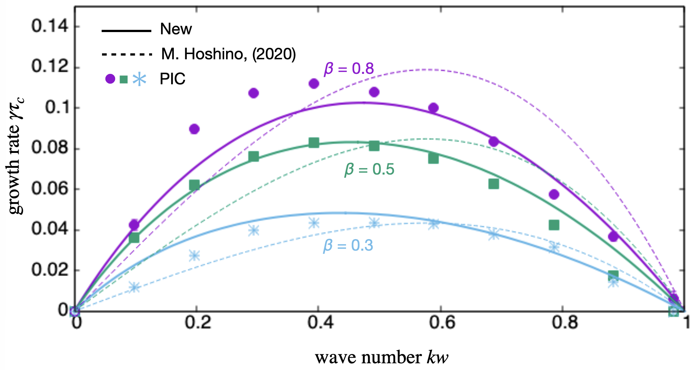<br />
图注：Wavenumber dependence of the growth rate of the relativistic tearing instability measured from PIC simulations with electron and positron temperatures $T_{e,p}=10m_{e}c^{2}$. Here, $w$ is the current-sheet thickness, $\beta$ is the bulk drift speed normalized by the speed of light, and $\tau_{c}$ is the light-crossing time across the current sheet. The symbols denote results obtained from the simulations, with different marker shapes corresponding to different bulk drift speed. The solid and dashed curves represent Eq.\,\(\eqref{eq_growth_New}\) and Eq.\,\(\eqref{eq_growth_Hoshino},\) respectively.<br />
对应解读：对应“建议重点查看的图表”第2项解析 \(\gamma(k)\) 曲线、第4项 \(k_{\rm max}\) 检验，以及“关键图表逐图导读”图3和模型拟合段落。<br />
入选理由：这张图直接给出 PIC 测得的增长率随波数变化，并用实线、虚线分别比较新 extrapolated-A 理论和传统 Hoshino/常数 A 理论，是检验本文核心主张的最关键图。它能同时判断峰值位置 \(k_{\rm max}\) 是否向小波数移动、不同漂移速度下理论与模拟点的符合程度，以及增长率幅度是否也被改善，科学支撑度最高。<br />
来源与置信度：\(arxiv_source\)；high；\(arxiv_source\) / \(submit_ver20260804-2.tex\):figure[2]</p>
<p><strong>Fig01</strong><br />
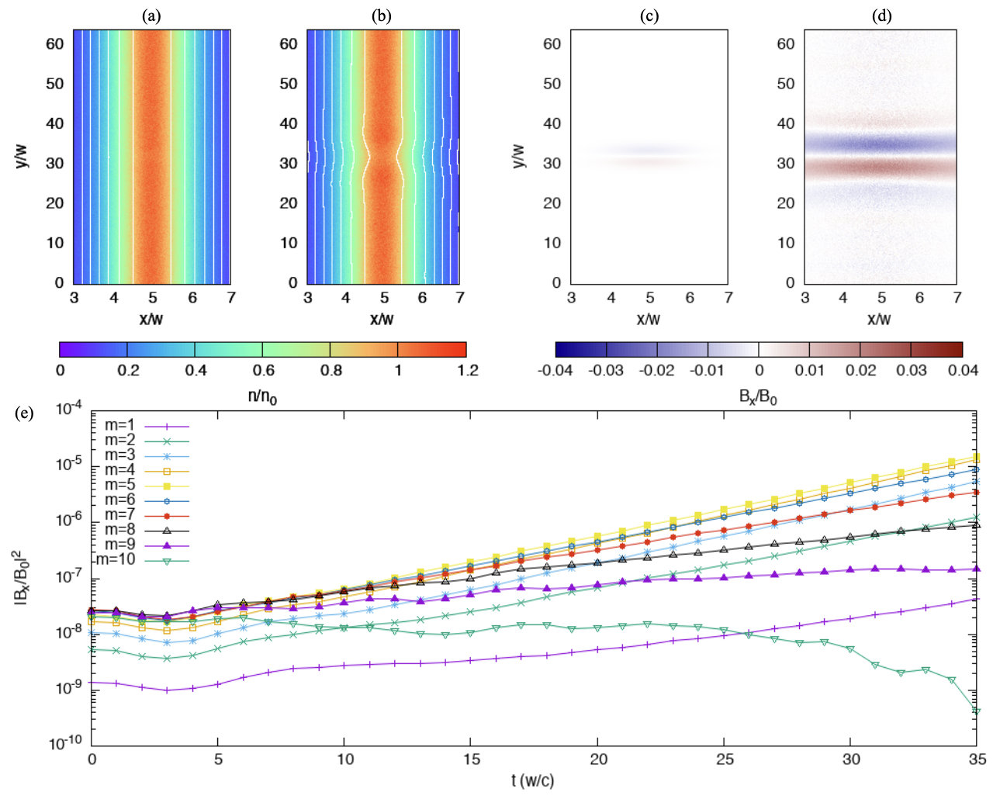<br />
图注：Evolution of the tearing-mode instability obtained from the two-dimensional PIC with electron and positron temeratures $T_{e,p}=10m_{e}c^{2}$ and $\beta=0.8$. $\beta$ represents the average particle drift speed normalized by $c$. Panels (a) and (b) show the positron number density at $t=0$ and $t=30w/c$, respectively. The white solid curves represent magnetic field lines. Panels (c) and (d) show the corresponding spatial distributions of the magnetic-field component $B_x$. The initial perturbation imposed at the center of the current sheet grows with time, accompanied by a decrease in particle density and distortion of the magnetic-field structure around the dissipation region. Panel (e) shows the temporal evolution of the squared Fourier amplitudes, $|\tilde{B}_x(k_{\rm m})/B_{0}|^2$, for modes $m=1-10$, where $k_m=2\pi {\rm m}/L_y$ and ${\rm m}$ indicates an integer. The growth rates are determined from the linear growth phase of each mode.<br />
对应解读：对应“建议重点查看的图表”第3项 PIC Fourier 模式增长图，以及“关键图表逐图导读”图6和模型拟合段落中关于线性指数增长窗口的讨论。<br />
入选理由：这张图展示二维 PIC 中撕裂模从初态到增长后的密度、磁场结构演化，并在面板(e)给出多个 Fourier 模式 \(|\tilde B_x(k_m)/B_0|^2\) 随时间的增长，用于说明增长率如何从线性阶段提取。它比单纯形态图更重要，因为可检查模式增长是否存在清楚指数段、最快模识别是否受初始噪声或非线性阶段影响，是支撑 Fig02 增长率数据可靠性的基础。<br />
来源与置信度：\(arxiv_source\)；high；\(arxiv_source\) / \(submit_ver20260804-2.tex\):figure[1]</p>
<h4 id="_45">强相关工作</h4>
<p>这篇工作属于相对论磁重联与撕裂不稳定性理论的同类研究，而不是某个具体天文事件的观测论文。因此相关文献应按“同类源环境”和“基础理论”检索：关键词包括 relativistic tearing instability、Harris current sheet、pair plasma reconnection、constant-psi approximation、constant-A approximation、PIC simulation relativistic reconnection、plasmoid instability。历史基础可追溯到电阻 MHD 撕裂模理论和 Harris 片平衡，现代背景则是 relativistic pair reconnection 的 PIC 研究。</p>
<p>与相似工作相比，本文的定位不是提出重联会发生，也不是研究非线性粒子加速谱，而是修正线性阶段增长率和最快波数的解析 benchmark。它和许多 PIC 研究互补：PIC 给出完整 kinetic 演化，但参数外推困难；解析理论给出尺度律，但必须不断用 PIC 校验。本文的相反或张力点主要来自传统常数 \(A\) 近似是否足够好。作者的结论是，在高漂移速度或某些尺度分离条件下旧理论可能仍可用，但在低漂移速度、(<br />
ho&lt;\(\lambda\)) 时会系统性错估最快模式。</p>
<p>建议进一步检索同类和综述文献时，不要只搜 magnetic reconnection review，因为那会返回大量太阳物理和非相对论等离子体结果；应加入 relativistic、pair plasma、Harris sheet、tearing mode 等限定词。若关心天体应用，可再加 gamma-ray bursts、fast radio bursts、magnetar flares、pulsar wind nebulae 等关键词，区分“微观线性不稳定性”与“宏观辐射模型”两类文献。</p>
<p><strong>同一事件 / 同类源线索</strong>：</p>
<ul>
<li><a href="https://arxiv.org/abs/2608.19645">https://arxiv.org/abs/2608.19645</a></li>
</ul>
<p><strong>相似工作</strong>：</p>
<p>（未提供）</p>
<p><strong>基础理论 / 方法工作</strong>：</p>
<p>（未提供）</p>
<p><strong>相反观点 / 张力线索</strong>：</p>
<p>（未提供）</p>
</details>
<h2 id="he">相关但非 HE 的重要论文</h2>
<h3 id="1-a-dual-polarization-whitened-template-trigger-for-real-time-radio-detection-of-extensive-air-showers">1. A dual-polarization whitened-template trigger for real-time radio detection of extensive air showers</h3>
<ul>
<li>来源：arXiv / astro-ph.IM</li>
<li>链接：https://arxiv.org/abs/2608.19898v1</li>
<li>作者：Qader Dorosti, Alperen Aksoy, Ilja Bekman, Markus Cristinziani, Eric-Teunis de Boone, Vesselin Dimitrov, Chimezie Eguzo, Stefan Heidbrink</li>
<li>评分：novelty 9/10，importance 9/10，relevance 10/10，final 9.35/10</li>
<li>推荐理由：Directly relevant cosmic-ray instrumentation paper: compact FPGA-realizable dual-polarization radio trigger for extensive air showers with strong efficiency gains over amplitude and unwhitened-template triggers; worth reading for radio air-shower detection and next-generation autonomous CR arrays.</li>
</ul>
<p><strong>中文题目</strong>：用于实时射电探测广延大气簇射的双偏振白化模板触发器</p>
<p><strong>做了什么</strong>：这篇仪器与数据处理论文针对自主宇宙线射电台站的第一级实时触发问题：如何在强且非白的实测背景中保留弱的广延大气簇射脉冲，同时满足 FPGA 硬件资源和吞吐限制。作者用 Auger Engineering Radio Array 台站的南北、东西两路正交偏振数据，构造了一个长度为 \(16\) 个采样点的探测器折叠簇射脉冲模板，并用实测背景协方差对白化后的模板响应做双偏振一致性合并。独立测试集上，在等效候选率 \(3.39\,\mathrm{kHz}\) 的工作点，触发效率达到 \(0.97\)，\(95\%\) 置信区间为 \(0.96\) 到 \(0.98\)；同条件下未白化双偏振模板只有 \(0.41\)，简单幅度触发只有 \(0.16\)。FPGA 实现可在 \(200\,\mathrm{MHz}\) 下每时钟处理一个双偏振采样，资源占用较小，并通过逐比特 RTL 验证。</p>
<p><strong>为什么重要</strong>：射电宇宙线阵列要走向大面积、低维护、自治运行，瓶颈之一不是天线是否能看见簇射，而是第一级触发能否在真实无线电环境中把微弱、短时、形态相似但方向和偏振可变的簇射脉冲挑出来。本文的重要性在于它没有只做离线分类器，而是把背景协方差、脉冲形态和双偏振时间一致性压缩成可在 FPGA 上实时运行的触发逻辑，并给出效率、假触发率、硬件资源和逐比特验证。</p>
<p><strong>理论 / 观测 / 仪器方法价值</strong>：对方法学的价值在于，它把经典匹配滤波的思想推进到有色噪声、双通道偏振和固定延迟窗口的硬件触发场景；对仪器的价值在于，证明 \(16\) 点白化模板已经能显著优于未白化模板和阈值幅度触发；对未来射电宇宙线阵列的价值在于，这类触发可以降低对外部粒子探测器触发的依赖，使稀疏台站更适合长时间自主运行。</p>
<p><strong>为什么应该关注</strong>：如果你关心超高能宇宙线、射电探测、实时触发、FPGA 信号处理或瞬变搜索，这篇文章值得看，因为它展示了一个很实用的取舍：不用深度网络或大规模缓存，也能把物理先验和背景统计写进低资源触发器。它还提醒我们，很多射电触发失败不是因为信号模型太简单，而是因为没有正确处理实测背景的协方差和双偏振一致性。</p>
<details class="paper-detail">
<summary>展开详细解读：文章讲解、背景、理论、重点章节、图表与相关工作</summary>
<h4 id="_46">文章详细讲解</h4>
<p>科学问题：广延大气簇射在射电天线中表现为持续时间很短的宽带脉冲，信号通常嵌在非高斯、非平坦频谱、带有人造射频干扰和电子学相关性的背景中。自主射电台站的第一级触发必须在数据刚进入 FPGA 时做决定，不能依赖复杂离线重建。论文要解决的问题是：在严格硬件预算下，是否能设计一个比简单幅度阈值更接近最优匹配滤波的实时触发器，并且在真实背景上维持可接受的候选率。</p>
<p>作者怎么做：作者从探测器折叠后的 air-shower 脉冲构造长度为 \(16\) 个采样点的模板，而不是使用理想化高斯脉冲或任意经验波形。背景不是假设为白噪声，而是用实测背景估计协方差矩阵，再将模板和数据投影到白化空间。触发器在南北和东西两条正交偏振通道上连续计算模板响应，并允许两路响应在固定时间半径内合并，从而利用真实簇射在两路偏振中应有的时间一致性，而不是要求某一路单独超过很高阈值。</p>
<p>关键结果：独立测试集显示，在等效候选率 \(3.39\,\mathrm{kHz}\) 的工作点，白化双偏振模板触发效率为 \(0.97\)，\(95\%\) 置信区间 \([0.96,0.98]\)。同一工作点，未白化双偏振模板效率 \(0.41\)，幅度触发效率 \(0.16\)，说明性能提升主要来自背景协方差白化和模板形态信息，而不只是多加一个偏振通道。按信噪比分箱后，所有有样本的 \(\mathrm{SNR}\) bin 中效率都不低于 \(0.94\)，这对弱信号触发尤其关键。连续实测背景 \(159.29\,\mathrm{ms}\) 的回放给出 score-cluster rate \(6.64\,\mathrm{kHz}\)，低于下游模块 \(71.4\,\mathrm{kHz}\) 的处理能力。</p>
<p>局限和下一步：这项工作主要验证了一个 AERA 台站、给定采样和硬件环境下的第一级触发策略。需要进一步确认的是：不同台站、不同射频环境、季节性背景变化、强窄带干扰、雷暴电场以及更高动态范围事件是否会改变协方差矩阵和模板最优性。下一步自然是长期在线运行、跨台站标定、与外部粒子探测器或已知簇射事件交叉验证，并研究模板库、多方向先验、动态背景更新和异常 RFI 抑制如何在硬件预算内加入。</p>
<h4 id="_47">关键结果是怎么做出来的</h4>
<p>本文最重要的证据链从样本构造开始。作者没有只在模拟白噪声上测试触发器，而是用探测器响应折叠后的簇射脉冲来生成模板，并用实测背景估计协方差。测试集与模板/背景训练过程独立，这一点很关键，因为白化模板如果在同一背景片段上调参，很容易把偶然背景结构也学进去。论文报告的核心工作点是 frame-equivalent candidate rate 为 \(3.39\,\mathrm{kHz}\)，在该点比较白化双偏振模板、未白化双偏振模板和幅度触发三者。</p>
<p>事件数和效率的表达方式表明作者把触发看作二分类问题：对注入或标记的簇射脉冲，若合并后的模板得分超过阈值则算检出。效率 \(0.97\) 及 \(95\%\) 置信区间 \([0.96,0.98]\) 应来自二项比例的不确定度估计或等价的置信区间构造。读者应检查论文中测试样本总数、各 \(\mathrm{SNR}\) 分箱中的样本数，以及置信区间是否对低样本数 bin 使用了合适的 Wilson、Clopper--Pearson 或类似方法，而不是只给正态近似。</p>
<p>统计比较的核心不是单个阈值下谁效率高，而是在相同候选率或相同下游带宽约束下比较效率。白化双偏振模板在 \(3.39\,\mathrm{kHz}\) 下给出 \(0.97\)，未白化模板为 \(0.41\)，幅度触发为 \(0.16\)。这说明若固定假触发预算，白化后的匹配滤波响应显著提高了信号与背景的可分离性。最支持这一点的图应是效率--候选率曲线、得分分布或 ROC 类图，以及按 \(\mathrm{SNR}\) 分箱的效率图。</p>
<p>连续背景回放是另一个关键稳健性测试。作者回放 \(159.29\,\mathrm{ms}\) 实测背景，得到 score-cluster rate \(6.64\,\mathrm{kHz}\)，并将其与下游模块容量 \(71.4\,\mathrm{kHz}\) 比较。这一步检查的是触发在纯背景上是否会形成过多相邻采样点重复触发，因而需要用 cluster rate 而不是简单逐采样 exceedance rate。读者应关注聚类窗口、死时间、相邻得分相关性和等效帧率的定义，否则候选率可能被低估或高估。</p>
<p>硬件结果构成第三条证据链。FPGA 实现每个时钟处理一个双偏振采样，在 \(200\,\mathrm{MHz}\) 收敛时序，使用 \(2377\) 个 LUT、\(5330\) 个寄存器和 \(32\) 个 DSP block。更重要的是，RTL 仿真对 \(400\) 条 trace 与参考实现逐比特一致。这说明论文不仅提出算法，而且把定点量化、流水线延迟、查表/乘加资源和双偏振合并逻辑落实到了可部署实现。主要系统误差来自背景样本代表性、模板对真实簇射形态覆盖不足、定点量化误差、阈值标定漂移和 RFI 非平稳性。</p>
<details class="paper-subdetail">
<summary>展开背景、理论、公式、模型、章节和图表导读</summary>
<h4 id="_48">背景知识</h4>
<p>广延大气簇射是高能宇宙线进入大气后产生的级联粒子阵列。带电粒子在地磁场中偏转，并伴随 Askaryan 电荷过剩效应，会产生纳秒到数十纳秒量级的相干射电脉冲。射电技术的吸引力在于天线成本低、占空比高、能提供簇射能量和 \(X_{\max}\) 等信息，但真正大规模部署需要稳定的实时触发。</p>
<p>早期射电宇宙线实验常借助粒子探测器触发，原因很实际：射电背景复杂，单天线自触发容易被人造 RFI、窄带发射、电子学脉冲和大气电活动污染。AERA、LOFAR、Tunka-Rex 等实验逐步证明了射电测量的精度，但自触发一直比离线重建更难，因为触发阶段没有全阵列时空一致性和完整校准信息。</p>
<p>现在重新看这个问题有两个原因。第一，下一代宇宙线和中微子射电阵列需要覆盖巨大面积，外部触发不一定可用，站点也可能远离基础设施。第二，低功耗 FPGA 和边缘计算能力已经足以运行比幅度阈值更聪明的触发器，但仍不能随意部署大模型或复杂迭代算法。因此，压缩的物理模板和背景统计成为一个很有现实意义的中间路线。</p>
<p>该领域常见误区之一是把射电触发等同于“超过阈值”。在有色背景中，最高幅度采样并不一定最像簇射脉冲；窄带干扰或电子学 ringing 可能轻易超过幅度阈值。另一个误区是认为双偏振只是两个独立通道相加。真实簇射的两路偏振响应在时间上应相干，振幅比和符号则随入射方向、地磁角和天线响应变化，因此触发逻辑必须利用时间一致性而避免过度固定偏振比例。</p>
<p>还需避免把离线最优算法直接搬到触发器。离线分析可以做全波形拟合、RFI 标记、方向重建、频域滤波和阵列联合判别；第一级触发只能在极短延迟、有限位宽、固定资源下运行。本文的定位正是在这个约束空间中寻找接近匹配滤波的可实现方案。</p>
<h4 id="_49">基础理论 / 方法脉络</h4>
<p>从物理图像看，簇射射电脉冲是一个短时、宽带、相干的电场扰动，经天线方向图、模拟链路和数字滤波后变成 ADC 波形。由于探测器响应会改变原始电场脉冲的形状，触发模板应当匹配“探测器折叠后”的波形，而不是只匹配空气簇射源区的理想电场。</p>
<p>在统计信号处理中，如果背景是平稳高斯白噪声，已知波形的最优线性检验就是匹配滤波，即计算数据与模板的内积。但射电背景一般不是白噪声：不同采样点之间有相关性，不同频段噪声功率不同，电子链路也可能引入相关结构。此时应使用背景协方差的逆矩阵加权，等价于先白化数据和模板，再做普通内积。</p>
<p>本文的核心假设是：在一个短窗口内，簇射脉冲形态可以用长度 \(16\) 的模板近似；背景协方差可由实测背景估计；两路正交偏振上的真实簇射响应在时间上接近一致，但幅度可不同。这个设定弱化了对具体入射方向和极化比例的依赖，同时保留了“同一物理脉冲应在两路通道相近时间出现”的信息。</p>
<p>观测/触发方法上，算法连续滑动窗口计算每一路偏振的白化模板得分，然后在固定 timing radius 内寻找两路响应并合并。阈值不是任意指定，而是用背景或独立测试集标定到某一候选率。这里的关键诊断量包括效率、候选率、score-cluster rate、按 \(\mathrm{SNR}\) 分箱的效率、以及 FPGA 资源和时序。</p>
<p>常见退化与系统误差包括：模板失配与低 \(\mathrm{SNR}\) 的退化、背景非平稳性与阈值漂移的退化、双偏振时间窗口过宽导致背景偶合并、窗口过窄导致真实脉冲因通道延迟或滤波相位差而漏检。硬件定点化还会改变得分分布的尾部，因此必须用 RTL 或等价定点实现验证，而不能只相信浮点 Python 或 MATLAB 原型。</p>
<h4 id="_50">公式与推导</h4>
<p>第一步，把一个通道的短窗口数据写成信号加背景：</p>
<div class="math-display">\[\mathbf{x}=A\mathbf{s}+\mathbf{n},\]</div>
<p>其中 \(\mathbf{x}\in\mathbb{R}^{N}\) 是长度 \(N=16\) 的 ADC 样本向量，\(\mathbf{s}\) 是探测器折叠后的归一化簇射模板，\(A\) 是未知脉冲幅度，\(\mathbf{n}\) 是背景噪声。该式只描述短窗口内的线性叠加，适用于前端未饱和且模板形态近似有效的情况。</p>
<p>第二步，用实测背景估计协方差：</p>
<div class="math-display">\[\mathbf{C}=\left\langle \left(\mathbf{n}-\boldsymbol{\mu}\right)\left(\mathbf{n}-\boldsymbol{\mu}\right)^{\mathsf{T}}\right\rangle,\]</div>
<p>其中 \(\boldsymbol{\mu}\) 是背景均值，\(\langle\cdot\rangle\) 表示对背景窗口取平均。若 \(\mathbf{C}\) 不是 \(\sigma^{2}\mathbf{I}\)，背景就是有色且相关的，简单幅度阈值或普通内积都不是最优检验。</p>
<p>第三步，在高斯背景近似下，对幅度 \(A\) 的广义最小二乘估计为：</p>
<div class="math-display">\[\widehat{A}=\frac{\mathbf{s}^{\mathsf{T}}\mathbf{C}^{-1}\left(\mathbf{x}-\boldsymbol{\mu}\right)}{\mathbf{s}^{\mathsf{T}}\mathbf{C}^{-1}\mathbf{s}}.\]</div>
<p>分子就是协方差加权的模板响应，分母给出模板在白化空间中的范数。这个量告诉我们数据中有多少“像模板的成分”。</p>
<p>第四步，定义归一化匹配滤波得分：</p>
<div class="math-display">\[\rho=\frac{\mathbf{s}^{\mathsf{T}}\mathbf{C}^{-1}\left(\mathbf{x}-\boldsymbol{\mu}\right)}{\sqrt{\mathbf{s}^{\mathsf{T}}\mathbf{C}^{-1}\mathbf{s}}}.\]</div>
<p>若背景近似高斯且协方差估计正确，在无信号假设下 \(\rho\) 近似服从零均值、单位方差的分布；有信号时其均值随 \(A\sqrt{\mathbf{s}^{\mathsf{T}}\mathbf{C}^{-1}\mathbf{s}}\) 增大。</p>
<p>第五步，也可显式写成白化变换。令 \(\mathbf{C}=\mathbf{L}\mathbf{L}^{\mathsf{T}}\)，定义</p>
<div class="math-display">\[\mathbf{y}=\mathbf{L}^{-1}\left(\mathbf{x}-\boldsymbol{\mu}\right),\qquad \mathbf{q}=\mathbf{L}^{-1}\mathbf{s}.\]</div>
<p>于是得分变成</p>
<div class="math-display">\[\rho=\frac{\mathbf{q}^{\mathsf{T}}\mathbf{y}}{\sqrt{\mathbf{q}^{\mathsf{T}}\mathbf{q}}}.\]</div>
<p>这说明“白化模板触发”本质上是在白化空间做普通内积，便于转化为固定系数乘加并部署到 FPGA。</p>
<p>第六步，对两路正交偏振 \(p\in\{\mathrm{NS},\mathrm{EW}\}\)，每个时刻 \(t\) 有一路得分 \(\rho_{p}(t)\)。若允许两路在时间半径 \(\Delta t\) 内合并，可写成示意性统计量：</p>
<div class="math-display">\[S(t)=\max_{|\tau|\leq \Delta t}\left[\rho_{\mathrm{NS}}^{2}(t)+\rho_{\mathrm{EW}}^{2}(t+\tau)\right]^{1/2}.\]</div>
<p>这里平方和合并不强制两路幅度比例，只要求时间一致；实际实现可能用定点近似或查表，但物理意义是双偏振联合显著性。</p>
<p>第七步，阈值 \(S_{\mathrm{thr}}\) 由背景候选率标定：</p>
<div class="math-display">\[R_{\mathrm{cand}}=f_{\mathrm{s}}\,P_{0}\left(S>S_{\mathrm{thr}}\right),\]</div>
<p>其中 \(f_{\mathrm{s}}\) 是滑动窗口等效采样或判决频率，\(P_{0}\) 是纯背景得分超过阈值的概率。若相邻窗口相关，还应转化为 cluster rate，而不是逐采样超过率。</p>
<p>第八步，触发效率可写成二项比例：</p>
<div class="math-display">\[\widehat{\epsilon}=\frac{k}{N_{\mathrm{sig}}},\]</div>
<p>其中 \(N_{\mathrm{sig}}\) 是测试信号数，\(k\) 是被触发的信号数。论文给出的 \(\widehat{\epsilon}=0.97\) 和 \(95\%\) 置信区间 \([0.96,0.98]\) 应理解为在固定阈值和候选率下的检出概率估计，而不是无限长运行中的绝对保证。</p>
<p>第九步，硬件实现还要满足吞吐约束：</p>
<div class="math-display">\[T_{\mathrm{proc}}\leq \frac{1}{f_{\mathrm{clk}}},\]</div>
<p>其中 \(T_{\mathrm{proc}}\) 是流水线每个输入样本的有效处理间隔，\(f_{\mathrm{clk}}=200\,\mathrm{MHz}\) 是时钟频率。论文报告每时钟接受一个双偏振采样，说明算法复杂度已经被压缩到固定延迟乘加和合并逻辑中。</p>
<h4 id="_51">模型拟合 / 应用方法</h4>
<p>这类工作中的“拟合”首先体现在模板和背景模型的估计。模板 \(\mathbf{s}\) 来自探测器折叠的簇射脉冲，背景模型由均值 \(\boldsymbol{\mu}\) 和协方差 \(\mathbf{C}\) 表征。虽然这不像天体物理参数拟合那样给出后验分布，但它本质上是在训练一个线性判别统计量：在给定背景协方差下，使已知形态信号的信噪比最大。</p>
<p>阈值 \(S_{\mathrm{thr}}\) 的选择是第二个拟合/标定问题。作者把触发器工作点固定在某个候选率，而不是任意追求最高效率。这相当于在效率--假触发率曲线上选择一个满足下游带宽的点。实际应用中，阈值可能需要随时间、频段环境、台站状态或 RFI 水平更新；如果背景协方差漂移，原先的 \(S_{\mathrm{thr}}\) 会对应不同的候选率。</p>
<p>残差诊断应关注得分分布而非传统光谱残差。一个好模型应使纯背景白化后接近无相关、无明显长尾；若白化后得分仍有强非高斯尾部，说明协方差模型不足以描述 RFI 或瞬态电子学噪声。对信号样本，应检查漏检事件是否集中在某些波形宽度、偏振比例、到达时间偏移或 \(\mathrm{SNR}\) 区间，这能揭示模板失配。</p>
<p>主要退化关系包括：提高阈值会降低候选率但损失弱信号效率；扩大双偏振 timing radius 会提高对通道延迟和相位差的容忍度，但增加纯背景偶然合并率；增加模板长度或模板数量可改善形态覆盖，但会增加 DSP、LUT、延迟和阈值试验因子。白化本身也依赖 \(\mathbf{C}^{-1}\) 的稳定性，若背景样本不足或协方差病态，可能需要正则化。</p>
<p>模型可能失败的场景包括雷暴期间大气电场改变簇射射电形态、强窄带发射导致协方差估计被污染、天线/模拟链路状态改变使模板不再匹配、ADC 饱和破坏线性叠加，以及真实事件偏振主要落在一个通道时双偏振合并收益下降。实际部署时应把在线监测、周期性背景重估、RFI veto 和与下游重建的反馈结合起来。</p>
<h4 id="_52">重点章节 / 结果段落怎么读</h4>
<p>数据/样本部分应首先读清楚模板如何生成、背景协方差如何估计、训练集和独立测试集如何分离。特别要看“detector-folded air-shower pulses”的定义：模板是否包含天线响应、模拟滤波、数字滤波和采样效应，决定了它能否代表真实触发输入。</p>
<p>方法部分的重点是白化模板得分和双偏振合并逻辑。读者应确认 \(16\) 采样点窗口如何滑动，南北与东西通道是否共享同一协方差处理方式，timing radius 如何设定，以及得分聚类如何避免同一脉冲在多个相邻窗口中重复计数。</p>
<p>结果部分要围绕固定候选率比较。不要只看最高效率数字，而要看在同一 frame-equivalent candidate rate 下白化模板、未白化模板和幅度触发的差异。按 \(\mathrm{SNR}\) 分箱的效率是判断弱信号可用性的核心图。</p>
<p>连续背景回放和硬件实现部分是本文区别于普通算法论文的关键。背景回放给出 score-cluster rate \(6.64\,\mathrm{kHz}\)，要与下游 \(71.4\,\mathrm{kHz}\) 容量比较；硬件部分要看时序是否在 \(200\,\mathrm{MHz}\) 闭合、资源占用是否留有余量、定点 RTL 与参考代码是否逐比特一致。</p>
<p>讨论/稳健性部分应重点读作者如何处理背景非平稳、模板失配、阈值标定和可扩展性。如果论文有附录，优先检查协方差估计、量化位宽、查表近似、测试 trace 和置信区间计算细节。</p>
<h4 id="_53">建议重点查看的图表</h4>
<ol>
<li>
<p>模板与背景示意图：看 \(16\) 点模板的时间形态、白化前后波形或系数是否出现明显振荡；这能判断模板是否在补偿频域噪声和电子学响应。</p>
</li>
<li>
<p>背景协方差或相关矩阵图：看非对角相关是否显著、白化是否必要；若协方差近似对角，白化带来的巨大提升就需要额外解释。</p>
</li>
<li>
<p>得分分布图：比较纯背景、信号加背景在白化模板、未白化模板、幅度触发下的分离程度；重点看背景尾部，而不是只看均值。</p>
</li>
<li>
<p>效率--候选率或 ROC 类曲线：在相同候选率下比较三种触发器，确认 \(0.97\)、\(0.41\)、\(0.16\) 的工作点不是由于不同阈值定义造成的。</p>
</li>
<li>
<p>按 \(\mathrm{SNR}\) 分箱的效率图：看每个 populated bin 是否真的 \(\geq0.94\)，以及低 \(\mathrm{SNR}\) bin 的误差条是否较大。</p>
</li>
<li>
<p>连续背景回放的 cluster-rate 诊断：看 score clusters 的时间分布是否均匀，是否存在短时 RFI burst 主导 \(6.64\,\mathrm{kHz}\) 的情况。</p>
</li>
<li>
<p>FPGA 资源和时序表：看 LUT、寄存器、DSP block、最大频率、流水线延迟和输入吞吐是否同时满足，而不是只报告资源数。</p>
</li>
<li>
<p>RTL 对比图或表：看 \(400\) 条 trace 的逐比特一致性是否覆盖了边界情况，例如阈值附近、饱和附近和双偏振时间窗口边缘。</p>
</li>
</ol>
<h4 id="_54">关键图表逐图导读</h4>
<p>图 1：若论文给出 AERA 台站输入波形、模板或算法流程图，横轴通常是采样点或时间，纵轴是 ADC 幅度、归一化模板系数或处理模块。读图时要分清原始脉冲、探测器折叠脉冲和白化模板三者。陷阱是把白化后的系数振荡误认为非物理波形；它其实反映了对背景频谱和相关性的逆加权。</p>
<p>图 2：背景协方差/相关矩阵图的横纵轴应是窗口内采样点索引，颜色表示协方差或相关系数。若非对角结构明显，说明相邻采样点和滤波 ringing 相关，白化有充分动机。读图陷阱是只看颜色范围而不看矩阵是否经过归一化；协方差和相关矩阵的物理含义不同。</p>
<p>图 3：得分分布或模板响应直方图应分别展示背景和信号样本。横轴是触发得分，纵轴是计数、概率密度或累积分布，竖线可能表示阈值 \(S_{\mathrm{thr}}\)。关键是看阈值右侧背景尾部与信号保留比例，而不是看峰值位置。若背景尾很厚，候选率会对阈值极敏感。</p>
<p>图 4：效率--候选率曲线或 ROC 图通常横轴为候选率或假阳性率，纵轴为效率。白化双偏振模板应在同一横轴位置显著高于未白化模板和幅度触发。读图陷阱是横轴若为对数尺度，小的水平移动可能代表很大的候选率差异；比较必须在相同工作点上做。</p>
<p>图 5：按 \(\mathrm{SNR}\) 分箱的效率图横轴为 \(\mathrm{SNR}\) bin，纵轴为触发效率，误差条为置信区间。本文声称每个有样本的 bin 中效率至少 \(0.94\)，读者应检查低 \(\mathrm{SNR}\) bin 的样本数和误差条是否足够支持这一说法。不要只看连线，应看每个点的统计权重。</p>
<p>图 6：连续背景回放图可能横轴为时间，纵轴为得分或 cluster 计数率。重点看 \(159.29\,\mathrm{ms}\) 背景是否存在局部突发导致平均 rate 失真。若图中有下游容量线 \(71.4\,\mathrm{kHz}\)，应确认 \(6.64\,\mathrm{kHz}\) 是 cluster rate 而非逐采样 exceedance rate。</p>
<p>图 7：硬件实现表或流水线图应列出 LUT、寄存器、DSP、时钟频率和吞吐。读者要看是否存在多周期路径、是否每时钟输入一个双偏振样本、是否有足够资源余量支持多个台站或多模板扩展。逐比特 RTL 对比若单独成图，重点检查阈值附近样本是否一致。</p>
</details>
<h4 id="_55">论文原图 / 可嵌入图片</h4>
<p><strong>Fig03</strong><br />
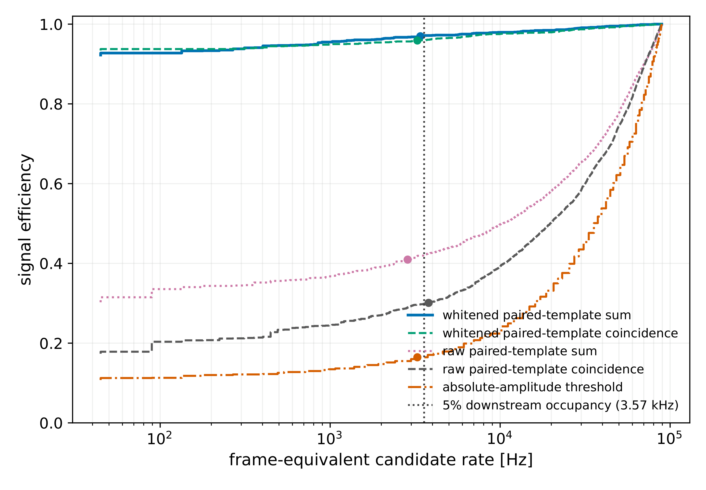<br />
图注：Independent \(\emph{validation set 2}\) efficiency versus frame-equivalent candidate rate. The circular markers show the operating points listed in Table~\(\ref{tab:operating_points},\) obtained with thresholds calibrated on \(\emph{validation set 1}\) and applied unchanged to \(\emph{validation set 2}.\) The vertical line indicates the \(\SI{3.57}{\kHz}\) design budget.<br />
对应解读：对应“建议重点查看的图表”第4项和“关键图表逐图导读”图4：效率--候选率/ROC类曲线；也对应模型拟合段落中阈值工作点标定。<br />
入选理由：这是验证核心结论的主图：在相同frame-equivalent candidate rate下比较不同触发器效率，并标出设计预算线，可直接检查论文声称的0.97、0.41、0.16是否来自同一工作点，而不是阈值定义差异。相比其他诊断图，它最直接支撑性能提升这一主要科学结论。<br />
来源与置信度：\(arxiv_source\)；high；\(arxiv_source\) / \(paper_learned_fir.tex\):figure[3]</p>
<p><strong>Fig04</strong><br />
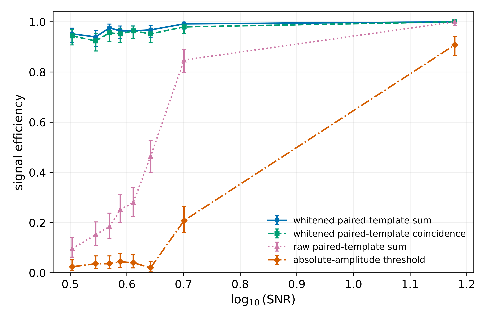<br />
图注：\(\emph{Validation set 2}\) efficiency versus the dual-polarization SNR proxy. Thresholds are calibrated on \(\emph{validation set 1}\); vertical bars are 95\% Clopper--Pearson intervals and horizontal bars show bin extent.<br />
对应解读：对应“建议重点查看的图表”第5项和“关键图表逐图导读”图5：按双偏振SNR proxy分箱的效率及95% Clopper--Pearson置信区间。<br />
入选理由：该图直接检验“所有 populated SNR bin 中效率至少0.94”的关键稳健性声明，且包含纵向置信区间和横向bin范围，能判断低SNR区间是否由统计误差掩盖。它比单一总效率更能说明触发器对弱信号的实际可用性。<br />
来源与置信度：\(arxiv_source\)；high；\(arxiv_source\) / \(paper_learned_fir.tex\):figure[4]</p>
<p><strong>Fig05</strong><br />
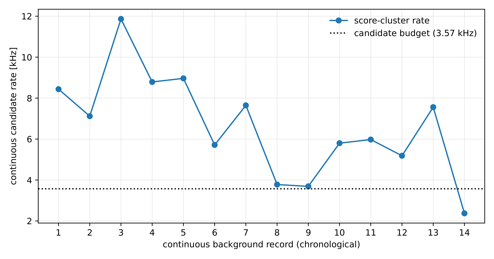<br />
图注：Continuous replay of fourteen chronological native background records from the same AERA station used throughout this study, acquired with the BOLT long-buffer readout firmware. The blue curve shows the rate of contiguous above-threshold score clusters, and the dotted horizontal line marks the conservative \(\SI{3.57}{\kHz}\) design target. The full downstream service capacity is \(\SI{71.4}{\kHz},\) above the displayed range. No independent events are concatenated.<br />
对应解读：对应“建议重点查看的图表”第6项和“关键图表逐图导读”图6：连续实测背景回放的score-cluster rate诊断。<br />
入选理由：该图使用连续背景记录展示above-threshold score clusters随时间的速率，并标出3.57 kHz设计目标，可检查平均6.64 kHz附近是否由短时RFI burst主导，以及cluster rate与逐采样exceedance rate的区别。它是把离线验证推广到真实连续背景的关键证据。<br />
来源与置信度：\(arxiv_source\)；high；\(arxiv_source\) / \(paper_learned_fir.tex\):figure[5]</p>
<p><strong>Fig10</strong><br />
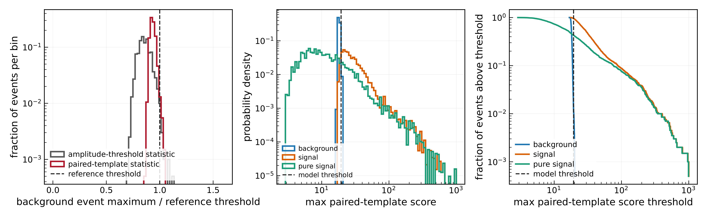<br />
图注：Background trigger-likeness diagnostic on \(\emph{validation set 2}.\) The distributions use the definitions background, signal, and pure signal stated in Sec.~\(\ref{sec:data}.\) The right panel is a survival curve and is the closest diagnostic to the continuous trigger-rate interpretation.<br />
对应解读：对应“建议重点查看的图表”第3项和模型拟合段落中的残差/得分分布诊断：背景、信号、纯信号的trigger-likeness分布与survival curve。<br />
入选理由：该图最接近日报要求的得分分布和背景尾部诊断，右侧survival curve尤其适合理解候选率由背景尾部决定，而不是只看均值或峰值。它能补充Fig03的工作点曲线，解释阈值右侧背景泄漏如何形成触发率。<br />
来源与置信度：\(arxiv_source\)；high；\(arxiv_source\) / \(paper_learned_fir.tex\):figure[10]</p>
<p><strong>Fig14</strong><br />
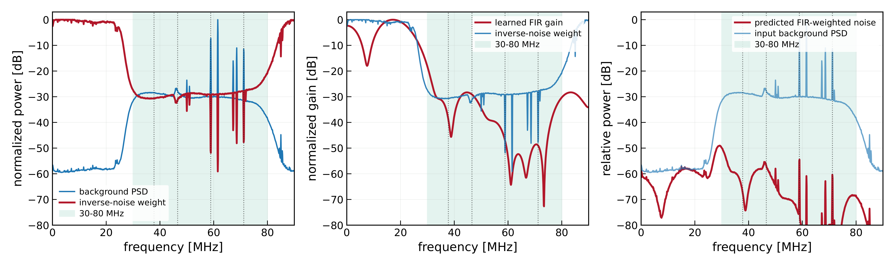<br />
图注：Estimated whitening and residual-noise interpretation. The inverse-noise weight is estimated from the validation background PSD because the exported model JSON contains the final whitened FIR taps but not the full training covariance matrix. The figure separates the measured noise spectrum, the inverse-noise weighting, the learned FIR gain, and the predicted FIR-weighted residual background power.<br />
对应解读：对应“建议重点查看的图表”第1、2项的白化动机，以及模型拟合段落中背景协方差/噪声模型和白化权重解释。<br />
入选理由：虽然候选集中没有直接的16点模板时域图或协方差矩阵图，Fig14给出了测量噪声谱、逆噪声权重、学习到的FIR增益和预测残余背景功率，是最能说明白化如何利用背景噪声结构的替代图。它有助于判断性能提升是否来自对频域噪声和电子学响应的逆加权。<br />
来源与置信度：\(arxiv_source\)；high；\(arxiv_source\) / \(paper_learned_fir.tex\):figure[14]</p>
<p><strong>Fig06</strong><br />
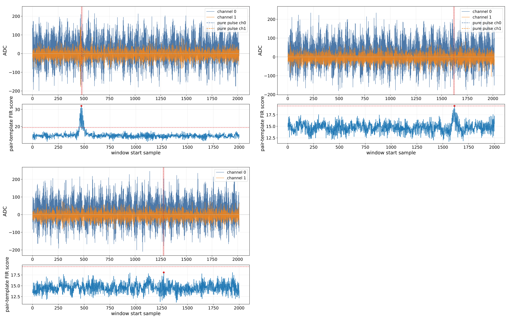<br />
图注：Representative strong-signal, near-threshold signal, and rejected-background decisions. Upper panels show both polarization traces, with injected pulses overlaid for signal events; lower panels show the dual-polarization template score, fixed threshold (dashed line), and frame maximum (red marker).<br />
对应解读：对应“关键图表逐图导读”图1、图3的事件级示例：双偏振输入trace、模板score、固定阈值和frame maximum。<br />
入选理由：该图把强信号、近阈值信号和被拒背景放在同一事件级视角下，能直观看到双偏振trace、模板得分、阈值线和frame maximum之间的关系。它不如Fig03/Fig04提供总体统计，但非常适合解释触发判决机制和近阈值漏检/通过的物理含义。<br />
来源与置信度：\(arxiv_source\)；high；\(arxiv_source\) / \(paper_learned_fir.tex\):figure[6]</p>
<h4 id="_56">强相关工作</h4>
<p>这篇工作属于射电宇宙线自触发和实时信号处理的交叉方向，和 AERA、LOFAR、Tunka-Rex、ARIANNA、GRAND 等实验中的射电触发问题相关。相似工作可检索关键词：“radio detection cosmic rays self-trigger matched filter FPGA”，“AERA radio trigger”，“extensive air shower radio pulse template”，“whitened matched filter colored noise”。这些工作共同面对的问题是如何在 RFI-rich 环境中保持低假触发率，而不同实验因频段、天线、站间触发和外部 veto 条件不同，触发策略差别很大。</p>
<p>基础理论上，它连接到有色高斯噪声中的匹配滤波、广义似然比检验和双通道联合统计量。相反或有张力的观点通常来自两端：一端主张简单幅度触发足够稳健、易部署；另一端主张机器学习或多模板库才能覆盖复杂波形。本文给出的结果支持一个中间结论：只要正确利用背景协方差和双偏振一致性，低复杂度白化模板已能取得很大提升。检索时还应关注“RFI non-stationarity”，“covariance whitening trigger”，“dual polarization radio air shower”以及“real-time FPGA matched filter”。</p>
<p><strong>同一事件 / 同类源线索</strong>：</p>
<ul>
<li><a href="https://arxiv.org/abs/2608.19898">https://arxiv.org/abs/2608.19898</a></li>
<li><a href="https://arxiv.org/pdf/2608.19898">https://arxiv.org/pdf/2608.19898</a></li>
<li><a href="https://www.auger.org/">https://www.auger.org/</a></li>
</ul>
<p><strong>相似工作</strong>：</p>
<p>（未提供）</p>
<p><strong>基础理论 / 方法工作</strong>：</p>
<p>（未提供）</p>
<p><strong>相反观点 / 张力线索</strong>：</p>
<p>（未提供）</p>
</details>
<h2 id="_57">说明</h2>
<p>评分由 LLM 给出初评，再由本地阈值策略过滤；IACT、TeV 伽马射线和高能中微子天文学按重点方向处理。</p>
    </main>
  </div>
</body>
</html>
